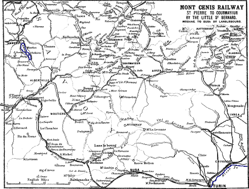
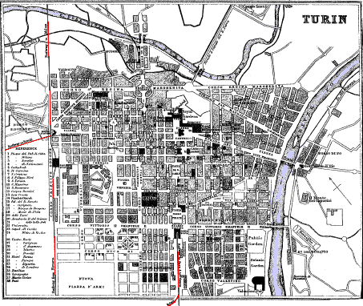
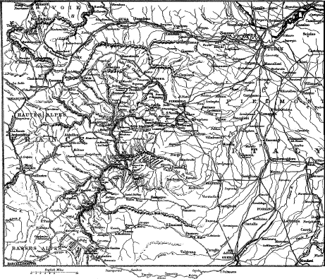
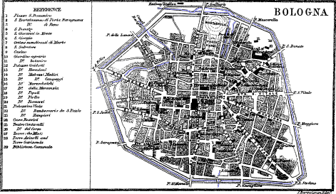
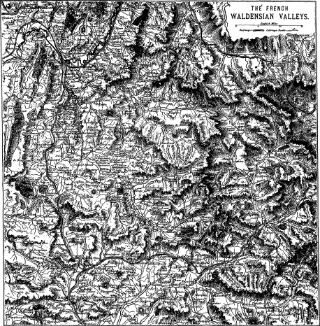
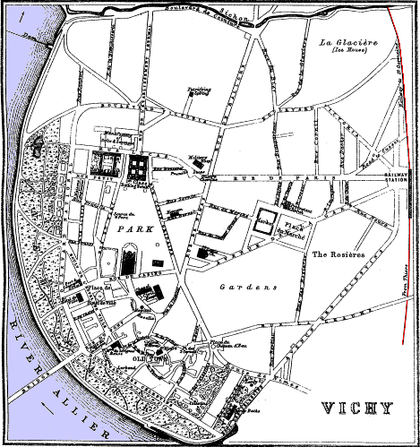
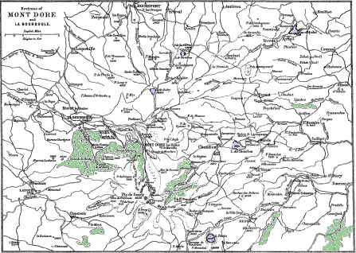

A few typographical errors have been corrected. They are shown in the text with mouse-hover popups.
Preface, Itineraries and List of Maps
(separate file)
Paris to Marseilles (separate
file)
The Riviera (separate file)
Italy and the Alps: Itineraries
Italy and the Alps: Maps
Italy and the Alps: Text
General Index
Aix-les-Bains to Geneva by Annecy 286
Turin to Torre-Pellice by Pinerolo 305
Torre-Pellice to Mont-Dauphin by the Col de la Croix 306
Perosa to Mont-Dauphin by the Col d’Abriés 307
Perosa to Cesanne by the Col de Sestrières 307
Saluzzo to Mont Dauphin by the Col de la Traversette 308
Cuneo to Barcelonnette (see Barcelonnette to Cuneo) 341
TURIN to FLORENCE by Piacenza, Parma, Modena and Bologna 309
St. Pierre d’Albigny to Courmayeur by the Little Saint Bernard 320
PARIS to MODANE by Lyons, Voiron and Grenoble. This is the route to take to visit the Grande Chartreuse and the picturesque valleys about the formidable group of the Ecrin mountains 322
Grenoble to Briançon by Bourg d’Oisans and the Col de Lautaret. A grand mountain road 328
Bourg d’Oisans to La Berarde, at the base of the Ecrin group, by Vosc and St. Christophe 329
Briançon to Mt. Pelvoux by La Bessée and the Val Louise 333, 345
Briançon to Oulx by Mt. Genèvre and Cesanne 333
Grenoble to Corps by La Mure (map, p. 27). From Corps another diligence proceeds to Gap (p. 340). From Corps the pilgrimage is made to N. D. de la Salette 333
Goncelin to Allevard-les-Bains 336
MARSEILLES to GRENOBLE by Gardanne, Aix, St. Auban, Sisteron, Serres, Veynes, Aspres, Clelles and Claix (map, p. 27) 338
Digne to Barcelonnette by La Javie and Seyne (map, p. 304) 339
Digne to Barcelonnette by Draix, Colmars and Allos 339
VEYNES to MONT DAUPHIN-GUILLESTRE station, 51 miles N.E. by rail. Both of these towns are at the French end of several of the important passes between France and Italy 340
Barcelonnette to Cuneo (map, p. 27) 341
Gap to Grenoble by Corps (map, p. 304) 342
Mont-Dauphin to Saluzzo (map, p. 304) 344
Paris to Lyons by Saint Etienne (map, p. 27) 346
Paris to Lyons by Tarare (map, p. 27) 348
Lyons to Clermont-Ferrand by Montbrison (map, p. 27) 349
Paris to Marseilles by Clermont-Ferrand and Nîmes (see map on fly-leaf) 351
Moulins to the Baths of Bourbon-l’Archambault by Souvigny and Saint Menoux (map, p. 1) 356
Moulins to the Baths of Bourbon-Lancy by Dompierre and Gilly. Beyond Gilly is Paray-le-Monial (p. 27, map p. 1) 357
St. Germain-des-Fossés to Vichy 359
Clermont-Ferrand to Brive by Laqueuille 376
Laqueuille to the Baths of Mont-Dore and Bourboule 377
Mont-Dore to Issoire by the Baths of St. Nectaire 385
A diligence runs between St. Nectaire and the Coude railway station.
PAGE
Bologna, Plan of 316
Mont Cenis railway, Plan of 291
This plan shows the railway from St. Pierre-d’Albigny to Turin by Modane and Susa. Rail from St. Pierre to Albertville; whence coach-road to Courmayeur by Moutiers, Bourg-St. Maurice, Seez and the Little St. Bernard. Coach road from Albertville to Annecy on Lake Annecy.
Mont-Dore and Bourboule, Map of environs 378
The French and Italian Waldensian valleys, with the mountain-passes between them 304
Turin, Plan of 293
Vichy, Plan of 359
Part First.—Paris to Modane, 431 miles. Time by the Rapide, 13 hrs. 36 min. Part Second.—Modane to Turin, 58½ miles. Time by Express, 3 hrs. 27 min.
Time-tables.—In England, see under “London to Turin” in the Continental Time-tables of the London, Chatham, and Dover Railway, which Company give through tickets. In Paris, start from the station of the Chemins de Fer de Paris à Lyon. At the bookstall buy one of their Time-tables, 40 c. The best resting-places are Dijon, Macon, and Chambery. For the whole route consult the Sketch Map on the fly-leaf. For the northern part, between Paris and Macon, see map, page 1; and from Macon to Turin, map, page 26.
MODANE
431
PARIS. In front of the departure side of the Chemins de Fer de
Lyon Station is the Grand Hôtel de l’Univers, and under it a Café
Restaurant. A little farther off is Hôtel Jules César. Good
restaurant also in the station. For the first 274 m. between Paris
and Macon, see pages 1 to 26. At Morel junction the Vichy line separates
from this one. At Montereau, 49½ m. from Paris
(p. 10), the Express halts 4 min.; but not the Rapide. At La Roche (p. 14) both
the Rapide and the Express halt 5 min. At Tonnerre (p. 17) they halt again 5 min.
At Les Laumes
(p. 19) the Express halts 5 min. At Dijon (p. 20) both halt 6 min. At Macon (p. 26) they halt 5
min. At Macon the Turin line separates from the Marseilles line, and
goes 23 m. E. to Bourg, 297 m. from Paris. At Bourg, in the
church of Brou, are sumptuous mausoleums. From Bourg a loop-line
traverses a picturesque country by Nantua to Geneva, 97 m. W. (See
map, p. 27; and
for description, Black’s France, North half.) 5½ m. S.E. from Bourg the
line crosses the Ain at the village of Pont-Ain, and afterwards arrives
at Ambérieu,
316¼ m. S.E. from Paris, and 114¾ m. N.W. from Modane. At
Ambérieu the Rapide halts 10 min., and the Express 15 min. Ambérieu,
pop. 4000, is a pleasant town on the Albarine at the base of the Jura
mountains, and connected by rail with Lyon, 32½ m. west. From
Ambérieu another loop-line extends 11 m. S. through a mountainous
country to Montallieu, pop. 2000, with important quarries, on the Fouron
near its junction with the Rhône. Between Ambérieu and Culoz the rail
passes through the last ramifications of the Jura
282
mountains. In approaching Culoz it winds round the S. base of Mt.
Colombier, 4733 ft., ascended in 4 hrs. either from Culoz or Artemart.
The view is admirable—on one side the Savoy Alps, with the lakes
of Bourget, Annecy, and Geneva; while on the side of France it extends
to Lyons and the mountains of Ardêche.
Lagnieu. Virieu le Grand. Culoz.
8 m. S. from Ambérieu and 3 m. N. from Montallieu is Lagnieu, pop. 3500, station for La Balme, pop. 1000, 3 m. S.W., on south side of Rhône. There is a cave here with great galleries and stalactites, and a lake 130 yards long, 8 yards wide, and 13 ft. deep. It is easily approached from Aix-les-Bains by the Lyons steamboats. Alight at the Salette station, 20 min. walk from the entrance into the grotto.
From Ambérieu the train ascends the valley of the Albarine, which, after St. Rambert-de-Joux, 7 m. S.E. from Ambérieu, becomes wild and imposing. At Tenay, Inn: Pittion, 4¼ m. farther, the train quits the Albarine and traverses a sequestered valley to
Virieu le Grand, 340 m. S.E. from Paris, pop. 1100. Junction with loop-line to Belley, 9½ m. S., pop. 5000; Inns: Rey; Camus, with important quarries of lithographic stones. 442½ m. from Paris and 19¼ m. N. from Aix-les-Bains is Artemart, with the falls of Cerveyrieu.
347½ m. S.E. from Paris, 14½ m. N. from Aix-les-Bains, and 83½ m. N. from Modane, is Culoz, on the Rhône, about ¾ m. E. from the station, 771 ft. above the sea, pop. 1200. Near the station are the inns *H. Folliet; H. Mémon. A great deal of carriage-changing takes place here. 41 m. N.E. is Geneva; see Black’s North France, and map p. 26. 4½ m. S. from Culoz and 10 m. N. from Aix-les-Bains is Châtillon, 700 ft. above the sea, on the N.E. extremity of Lake Bourget, 2 hrs. distant by row-boat from Aix. In the castle, 13th cent., commanding a charming view of the lake, Pope Celestin was born.
Lake Bourget is 700 ft. above the sea, 10 m. long, from 2 to 3 m. wide, and from 200 to 300 ft. deep. The W. side is bounded by the steep ridge of Mont Chat. Opposite to Aix is a depression, the Col du Mont Chat, 2070 ft., and immediately to the S. a bold craggy peak, La Dent du Chat, 5302 ft., ascended from the little village of Bordeaux in about 4 hrs., after a very fatiguing climb. One of the best points for a view over the lake and the surrounding country is the Revard, 5112 ft., one of the summits of the ridge Mont d’Azy, which bounds the E. side of the plain of Aix (see page 285). It is ascended from the village of Mouxy in about 4 hrs.
The best of the fish caught in the lake is the ombre-chevalier. The lavaret is peculiar to it. There are also trout, perch, pike, shad, carp, gudgeon, tench, and barbel.
283Aix-les-Bains. Hotels.
PARIS
MODANE
362
69
AIX-LES-BAINS,
850 ft. above the sea, 1½ m. from Lake Bourget, pop. 6000. The
Casino is a handsome building, with park of its own extending to the
railway station. First-class hotels—their pension is from 12 to 20
frs., but it is necessary to arrange the price at the commencement. On
each side of the Casino are the *H. Aix, with garden, and the
Univers. Opposite are the H. de la Galerie and the Nord. Then
follow the Hotels: *Europe; *Venat, with large
garden; and opposite, at the end of R. du Casino, the H. Genève.
Second-class houses: in the parallel street, the R. Genève, behind
the R. du Casino, are the H. Durand; *Gaillard; in the Place
Centrale the H. Poste. Opposite the H. Poste is the office
whence the omnibuses start for the lake and the Lyons steamboats, and
for Marlioz. Up by the side of the Bath-house is the H. de
l’Etablissement. In front, the H. de l’Arc Romain. To the left, in
the Rue des Écoles, is a small clean family house, the H. Germain.
A little beyond is the H. Châteaux-Durrieux. Below the last,
the H. Folliet and Italie. The pension price in the above
second-class houses varies from 7 to 11 frs. On road to station, the
H. des Bergues.
On an eminence overlooking the park is the *Splendide Hôtel, a really splendid first-class house. Below it is the H. Beau-Site, also a new but a smaller first-class house.
The Port is nearly 2 m. from Aix by the R. de Genève, and then to the left. At the pier is the inn Beau-Rivage, “Poissons frais.”
Abundance of furnished lodgings. English chapel, Rue du Temple, behind the H. Venat. Presbyterian chapel in the park.
Aix-les-Bains: Cabs.
Cabs or Fiacres.—One-horse cab—3 frs. for the first hour; every succeeding hour, 2 frs.; per day, 20 frs. Two-horse cab—for first hour, 4 frs.; every succeeding hour, 3½ frs.; per day, 20 frs. Riding horses—two hours, 4 frs. Donkeys—one hour, 1 fr.; half-day, 4 frs.
The bathing establishment is a very large edifice, especially fitted up for the external application of the water, very little being drunk. Mineral water flows from the fountain in front of the building. Behind the establishment are the caverns whence the springs issue. To visit, ½ fr. There are three different springs, their temperatures being 112°, 114°, and 115° Fahrenheit, and their contents carbonates of lime, magnesia, and iron, sulphate of soda, and some phosphates. Ordinary bath with linen, 1½ fr. Opposite the establishment is a Roman arch, 3d cent., with the inscription “Lucius Pompeius, Campanus, Vius fecit.” Behind the arch is the chateau of the Marquis of Aix, now occupied by the Hôtel de Ville and the post and telegraph offices. A handsome 284 stone stair of fifty-eight steps, under a quadripartite roof on round columns, leads up to the various offices. At the top is the museum. On the ground-floor, just beyond the foot of the stair, a door opens into what is called the Temple of Diana, a large rectangular hall of coarse masonry, recently restored. Adjoining are the Hotel de l’Arc Romain, 9-12 frs., the parish church, and the park. The waters used for drinking are the cold sulphur springs, situated a little way out of town.
Aix-les-Bains: Springs. Excursions.
The most powerful and peculiar is the spring at Challes, 900 ft. above the sea, and 45 min. distant by omnibus from Chambery. Hotels: Château de Challes; Terrason; Ferret. It, like the others, is used for indigestion and liver complaints, but especially for laryngeal affections.
Nearly a mile from Aix by the Chambery road is the Marlioz mineral water establishment, with hotel, furnished apartments, and villas, all within a large park. The water is cold, sulphurous, and alkaline, with bromine and iodine, and costs 10 c. the glass. About 20 min. walk from the town by the Geneva road, near the village of St. Simon, is the Raphy spring, frequently taken at meal-time and prescribed in certain gastric diseases, dyspepsia, and nervous disorders of the stomach.
Excursions from Aix-les-Bains.—The steamer on certain days makes the tour of the lake, stopping at the principal places, of which the chief is the Abbey of Hautecombe; fare there and back, with small boat and two men, 9 frs. To Bordeaux and back, 5 frs.; Bonport, 4 frs.; Châtillon, 14 frs. Arrange price beforehand. No boat permitted to carry more than six passengers. An hour on shore allowed. Drive round the lake—one horse, 11 frs.; two horses, 15 frs.
The Abbey of Hautecombe was founded in the 12th cent., but rebuilt in 1745. The church, containing 300 statues and many frescoes, is 215 ft. long, the transept 85 ft., and the height of the roof 34 ft. The interior, as well as most of the mausoleums, is of a soft white fine-grained magnesian limestone, from the quarries of Seyssel, near Culoz. The best of the statues are those of Charles Felix, King of Sardinia (died 1821), and of Marie Christine, his spouse (died 1849), on the right and left hands of the nave at the entrance. They are of Carrara marble. In the chapel of Notre Dame de Compassion, in the right-hand transept, is another beautiful group in Carrara marble; in the left transept is a wood figure of St. Joseph, well executed.
About half a mile from the convent by a road following the shore of the lake is an intermittent fountain, very irregular in its action. To reach it continue the road till arriving at a clump of chestnut and horse-chestnut trees, some having stone seats round the trunks. The 285 fountain is in the corner under the fourth tree. Near Hautecombe are the village and castle of Bordeaux, founded in the 9th cent., over which rises the Dent du Mont Chat (see p. 282).
Other Excursions.—To the S.W. the Colline de Tresserve, 1109 ft., good views, chestnut trees, and the castle of Bonport. To the S.E. the Roche du Roi, with quarries, which were worked by the Romans. The Rocher de St. Victor, by the chestnut forest of Mouxy; there and back, 5 hours. The mountains of the Grand-Revard and the Cluse, 5154 ft., by mule-path; there and back, 6 hours. To the N. the cascade of Gresy, 45 minutes, 3 m. Gresy, with its keep, 12th cent. 5 m., the defile of the Combes and the Prime rocks. To the N.N.W. the Montagne de Gigot, 2680 and 2762 ft.
Grotto of Banges. Le Châtelard.
Aix to the Grotto of Banges, by Gresy and Cusy.— Seat in car there and back, 5 frs. About 3 m. from Aix is Gresy, with its pretty waterfall. Beyond the village the road ascends by the stream Sierroz to an undulating plain, on which is Cusy, 3½ hours from Aix. To the N., on a rock rising from the Chéran, are the extensive ruins of a castle. On the opposite bank are seen the hamlet of Aiguebellette and the castle of St. Jacques, and, rising abruptly from the valley, three singular obelisks of rock. 2 hours from Cusy the Chéran is crossed by the Pont de Banges, and not far from this bridge, where the road is hemmed in between the rocks and the stream, is the entrance to the Grotte de Banges, containing a lake, 216 ft. below the level of the entrance, approached by a gallery 270 yards long, hung with stalactites.
This road may be continued to Le Châtelard, 1¾ hour from the bridge, 2500 ft. above the sea; Inns: Des Beauges; De la Poste; pop. 950. This is the capital of the “Pays des Beauges,” occupying a plateau 13 m. long and 8 m. wide, traversed from S.E. to N.W. by the Chéran, and surrounded by steep rocks. Cheese-making, the rearing of cattle, and the manufacture of articles in wood form the industries of the inhabitants, of whom there are 10,000. Châtelard, in its social and geographical position, resembles Le Beage (p. 84).
The road from Aix to Chambery is through the broad valley which separates the mountains of the Grande Chartreuse from those of the Beauges. Belonging to the former are Mont Grelle, 4649 ft., to the S.W., and Mont Granier, 6348 ft, due S.; while to the N.E. is the Dent de Nivolet, 4597 ft, an advanced bastion of the Beauges.
At Aix-les-Bains, junction with branch to Annecy, 26 m. N., whence a diligence starts daily for Geneva, 27½ m. farther N. by Brogny, Cruseilles, and St. Julien (see map, p. 27).
28621½ m. by rail N. from Aix-les-Bains, and 3½ m. from Annecy, is Lovagny, the station to alight at to visit the “Galeries des Gorges” of the torrent Fier, about 10 minutes distant. From the station take the road to the left, cross a bridge, and walk on to the châlet, where refreshments are sold, and tickets, 1 fr. each, to visit the gorge, which is of the same nature, though much superior, to the galleries of Pfäffers. The gallery, or rather balcony, is 1162 ft. long, and on an average 72 ft. above the torrent. It rests on iron brackets driven into the face of vertical cliffs 310 ft. high, and on an average 8 ft. apart.
3½ m. farther by rail is
Annecy, pop. 11,000. Hotels: Angleterre, opposite the post office; Verdun, at the head of the town, near the public gardens and the lake, and not far from the steamboat-pier; Aigle; Savoie.
The steamboat sails from the side of the public gardens opposite the Convent of St. Joseph. It makes the tour of the lake three times daily. Diligence daily to Bonneville, 23 m. N., passing the villages of Plot and La Roche; also to Albertville, 28 m. N., on the road to Italy by the Little St. Bernard (see page 320).
This ancient town, with narrow arcaded streets, is situated on the north-west end of Lake Annecy. The two most prominent buildings in Annecy, as seen from the lake, are the Barracks, and the Castle of Tresun, in which St. François de Sales, the founder of the Order of the Visitation, was born August 21, 1567. Opposite the steamboat-pier is another prominent edifice, the Church and Convent of St. Joseph, both modern, but containing, in the garden behind, the first chapel erected by St. Francis, dating from 1610. The house Madame Chantale, his friend, inhabited adjoins this chapel.
The mortal remains of St. Francis are in a shrine above the high altar in the Church of the Visitation, at the western side of the Rue Royale. The house in which he resided is in No. 18 Rue St. Claire, entrance at the left-hand corner within the court. The house in which Madame de Warrens first received Rousseau stood in the parallel street, behind the Rue de l’Évêché, on the site of that house next the Episcopal palace, with railings in front. The best promenade is the garden around the Hôtel de Ville at the head of the lake. It contains a statue by Marochetti of the great French chemist, Claude Louis Berthollet, born at Talloires in 1748.
The Lake of Annecy is 9 m. long, 2 broad, and 1455 ft. above the sea-level. It is surrounded by vine-clad and wooded mountains, of which the highest is La Tournette, on the eastern shore, 6260 ft. above the lake. To ascend it land at the village of Talloires, where there are a comfortable inn, the Hôtel de l’Abbaye, and guides.
Near the shore of the lake, on the side of a hill about 2 m. east from Annecy, is the house in which Eugene Sué spent the last years of his life. It is one-storied, with garret-windows, and behind a small square tower. On the morning of August 1, 1857, he took his 287 last walk on the hill, returning from which fatigued he went to bed, and died two days afterwards. The remains of Rousseau’s house are seen a little farther south, above the village of Veyrier.
South from Veyrier, also on the lake, is the village of Menthon, the birthplace of St. Bernard, the founder, in the 10th cent., of the hospices of the Great and the Little St. Bernard. He is buried on the right-hand side of the choir in the cathedral of Lausanne. At the south extremity of the lake is the village of Doussard, at the entrance into the dark gorge of the Combe Noire. Here a coach awaits passengers for Faverges and Albertville, 18 miles south from Doussard. In this neighbourhood the best mountain to ascend for the view is Semnoz, 4148 ft. above the lake. The ascent is made from the straggling village of Leschaux, 1590 ft. above the lake, 10 m. S. from Annecy, and 14 m. N.E. from Aix-les-Bains. Donkeys can be hired at the village. The ascent takes about 2 hrs. On the top is a comfortable inn. Duingt, at the S.W. end, is the most picturesquely situated village on the lake. (See map of Mt. Cenis, p. 291.)
3 m. N. from Annecy and 24 m. S. from Geneva is the village of Brogny, where, in 1342, Jean Allarmet the swineherd was born, who became successively Bishop of Geneva, Viviers, and Ostia, Archbishop of Arles, and then a Cardinal. From Brogny the road passes the Pont de la Caille, 18 m. from Geneva, a small village near the suspension bridge, 212 yds. long, across Les Usses, and 665 ft. above the bed of the torrent. Higher up, in a ravine, are the baths of Caille.
16½ m. from Geneva is Cruseilles, pop. 2000, and 2576 ft. above the sea. The road from Cruseilles passes over the top of Mont Zion, 2586 ft., and then descends to Chable. 10 m. farther is St. Julien, 1535 ft., pop. 2500. French custom-house station, 6½ m. from Geneva.
Chambery.
PARIS
MODANE
370¾
60¼
CHAMBERY, pop. 20,000,
and 815 ft. above the sea. Passengers arriving late should spend the
night at Chambery, and next morning proceed to Turin.
Hotels.—Princes, in the Rue de Boigne, near the fountain.
France, on the Quai Nezin. In the Rue d’Italie, the Poste and Europe,
near the theatre. In the Rue de la Banque is the Banque; and opposite it
is the Temple Protestant.
Chambery is situated in a plain surrounded by high mountains. The first object that strikes the stranger on arriving from the station is the monumental fountain to General Boigne in the Boulevard du Theatre, opposite the termination of the principal street, the Rue de Boigne. It consists of four bronze elephants supporting a column crowned with a statue of the General. At the other extremity of the Rue de Boigne is the Château, formerly the residence of the Dukes of Savoy, built in 1230. The entrance is either by the stair in front or by the road round from behind, which leads also to the Botanic Gardens. Within the precincts of the château is the Préfecture, having 288 attached to it one of the old massive round towers, ascended by a most handsome staircase of 160 low broad steps to within a short distance of the top, attained by 36 more steps in two short flights. In the stair is the entrance to the Museum, chiefly archæological. The Natural History Museum is in the Botanic Garden. The view from the top of the tower is very pleasing, and overlooks the whole of the town. Fee, ½ fr. Opposite the tower is the Chapel of the Dukes of Savoy, 14th cent. Fee, ½ fr. The three tall windows are filled with beautiful old glass. The roof is covered with stone groining, with cleverly-executed arabesque painting between the nervures. The roof of the cathedral is similarly painted, but on a blue ground. It is situated near the Rue de Boigne, and was built in the 14th, 15th, and 16th cents.
Chambery: Church of Lemenc. J. J. Rousseau.
The Rue de Bourgogne, the second street to the right up the Rue de Boigne, leads past the Hôtel de Ville and the post office to the Palais de Justice, with the Jardin Public behind. In front of the Palais is a bronze statue of the jurist, Antoine Favre, who died 1624. On a hill on the other or eastern side of the railway are the Convent de la Visitation and the Church of Lemenc. The upper church of Lemenc is of the 13th or 14th cent., but the under church or crypt is of the 7th cent. In the centre of the crypt is a curious baptistery, six feet in diameter, under a peristyle. Beside it is an Entombment. In the upper Church are the mausoleum of General Boigne and the relics of Saint Concors, an Irish archbishop from Armagh, who died here 600 years ago. His relics are said to have the power of working miracles on children. In the adjoining cemetery, close to a small chapel, is the grave of Madame de Warrens.
Excursions.—The house which Jean Jacques Rousseau inhabited is on the height called the Charmettes, 395 ft. above and 2 m. from Chambery by a pleasant road shaded with walnut and plane trees. It is a mere cottage. The room to the right on entering was the dining-room. It contains in a drawer his watch, opposite the window his bookcase, and hanging on the walls, facing each other, the portraits of himself and of Madame de Warrens. The next room was their sitting-room; here are his card-table and mirror. The room above was madame’s bedroom, and the one over the dining-room Rousseau’s. From the garden the view extends to the Dent de Nivolet, 4597 ft., ascended from Chambery in between 5 and 6 hrs.; guide advisable. View not equal to that from the Dent du Chat (p. 282). The pretty walk to the Bout du Monde, at the foot of the Dent de Nivolet, by the bank of the Laisse and the gorge of the Doria may be made in little more than an hour. Omnibus in 45 min. to the cold sulphurous iodo-bromuride springs of Challes (p. 284).
289
PARIS
MODANE
376
55
LES MARCHES, a
straggling village at the foot of a hill crowned by the chapel and image
of Notre Dame de Myans. To the S.W., 4 hrs. there and back, are the
Abimes de Myans, lakes between conical hillocks, formed by a partial
landslip of Mt. Granier.
PARIS
MODANE
378
53
MONTMÉLIAN,
pop. 1200. Inn: Voyageurs. Junction with line to Grenoble, for
which change carriages (p. 338).
St. Pierre d’Albigny. Aiguebelle.
PARIS
MODANE
358¼
45¾
ST. PIERRE
D’ALBIGNY, 971 ft. (map, p. 291),
pop. 3300, 1½ m. from its station. Inns: At station:
H. des Voyageurs. In town: Croix-Blanche; Soleil. Junction with
line to Albertville, 14 m. N.E., whence diligences to Annecy,
28 m. N., passing close by Ugine, 1755 ft., and through Faverges;
Inn: Poste. Diligence also to Moutiers and Bourg St. Maurice on
the road to the Little St. Bernard, one of the easiest of the Alpine
passes (see p. 321). From St.
Pierre take the N. window of the carriage to have a proper view of the
immense cones and pinnacles of calcareous rocks, which tower in many
places almost vertically above each other. These lofty walls afford
protection from the chilling blasts to the pretty villages, vineyards,
orchards, and maize fields; which places only at a little distance from
these mountains do not enjoy. Vineyards cease a little above St. Michel,
2400 ft., but patches with vines may be seen within 3 m. of La
Praz. Up to La Praz the mountains are cultivated more or less in
terraces. Higher up the valley of the Arc they are too steep and
arid.
PARIS
MODANE
332
39
AIGUEBELLE, pop.
1100. H. de la Poste. Village close to station. Arch to Charles
Felix. The valley now begins to widen.
PARIS
MODANE
409
22
LA CHAMBRE, pop.
800, on the confluence of the Bugion and the Arc. Afterwards, to the
right, is the valley of the Glandon.
PARIS
MODANE
414½
16½
SAINT-JEAN DE MAURIENNE, pop. 3200.
Inns: Europe; Cheval Blanc; Voyageurs. The cathedral, founded in
the 15th cent., contains the mausoleum of Count Humbert, and some
beautifully carved stalls. The arcades of the cloister are of alabaster,
and were constructed in 1452. In the neighbourhood are the argentiferous
mines of Rocheray and the saline thermal springs of Echaillon.
PARIS
MODANE
421
10
ST. MICHEL, pop. 3000.
A village on the Arc, 2323 ft. above the sea-level, in a hollow at the
foot of high mountains. Inn: Poste, near the post office. From
St. Michel the Alpine region commences. The next station is La Praz,
6 m. from St. Michel, 3140 ft. above the sea.
Modane.
PARIS
431
MODANE STATION, 3445 ft.
above the sea, and 727 m. from London, is really part of the
village of Fourneaux. Modane is a little farther up, and the train
passes through it on the way to the tunnel. Large refreshment-room at
station. Opposite station—Inn: Hôtel International, where
comfortable lodgings can be had, as well as carriages to visit the
neighbourhood. The river Arc runs by the back of the house. There are
also several restaurants. Luggage from France and Italy is examined
here. In Italy every pound of registered luggage is charged. The scenery
on both the French and Italian sides is beautiful, and the traveller
ought to endeavour to pass through it during the day.
The passage through the tunnel is done in 30 minutes. The air is at no
part disagreeable. The entrance is 492 ft. above the station, and is
reached by a winding railroad of 3-1/10 m., with a gradient of 2½
per cent. The highest part of the tunnel is 4380 ft. above the sea, and
5250 ft. below the summit of the ridge perforated.
From Modane the ascent is made of Mont Thabor, 7100 ft. higher than Modane, in 7½ hrs., by the Col de la Saume. Descent in 6 hrs., or a little over 5, by Bardonnecchia.
Lans-le-Bourg. Les Tavernettes.
From Modane a carriage-road leads over the Pass of Mont Cenis to Susa, 40 m. distant by Villarodin, pop. 220. On the right bank of the Arc up the valley is Avrieux, where Charles the Bold was poisoned by his doctor. Near this are passed the forts Esseillon or Bramans, connected with the road by a steep winding path. 8¾ m. from Modane is Le Verney, where the road crosses the Arc; 10¾ m. Solliers; to the left, the valley of the Laisse or Doron; 16¾, Termignon, pop. 1080, and 4251 ft. above the sea, at the confluence of the Laisse with the Arc, church with frescoes and a curious belfry; 18 m. Lans-le-Bourg, pop. 1500, consisting principally of inns, situated on the Arc, 4560 ft. above the sea, at the base of Mont Cenis. After crossing the Arc the ascent of the Pass is commenced. From Lans-le-Bourg to Susa are twenty-three houses of refuge. At the culminating point, 6882 ft. above the sea, is the inn Ramasse. The road now descends. 13 m. from Susa and 27 from Modane is Les Tavernettes, on a terrace 200 ft. above the lake, which is 1¼ m. long and 6234 ft. high, and contains good trout. This is one of the best headquarters in the Alps for a naturalist. 10 m. from Susa and 29½ m. from Modane is the Hospice of Mont Cenis, on the great plateau. 2 m. farther is the hamlet of La Grande Croix, 6069 ft., on the edge of the plateau, and whence the descent becomes more rapid. 4½ m. from Susa is the post-house of Molaret, and about 3 m. more, or 1¼ from Susa, the hamlet of Giaglione, with splendid views and rich vegetation (Susa, see page 291).
MONT CENIS RAILWAY
St. Pierre to Courmayeur by the Little St. Bernard.
modane to susa by langlebourg
opp. 291 
See Map of Mont Cenis Railway.
TURIN
58½
MODANE. At Modane passengers enter the carriages of the Alta
Italia Railway Company.
The Italian time is 47 minutes in advance of the Paris time. The best
time-table for Italy is the “Indicatore Ufficiale delle Strade Ferrate,”
1 fr.; also a smaller edition, 20 c., sold at all the railway
stations. Waiting-room is Sala d’Aspetto. W.-C’s., Cessi, or Latrine, or
Retirate. For ladies, Cessi per le donne. Smoking carriages, Pei
fumatori. Non-smoking carriages, E vietato il fumare. Way out,
Uscita. Way in, Entrata. Station, Stazione or Fermata.
MODANE
TURIN
5
53½
BARDONNECCHIA,
4127 ft., pop. 1600. At the station the Albergo della Stazione, and in
the town the Hôtel de France.
Situated near the Italian end of the tunnel, but in a more fertile
country than that above Modane.
MODANE
TURIN
12
46½
OULX, pop. 2000, and 3514 ft.
high. Inn: Dell’ Alpi Cozzié, at the station.
At this pretty little village the road from Briançon, 17 m. S.W. by
Mont Genèvre, joins the rail. The mountains, which extend from Monte
Viso to Mont Cenis, were called the Alpes Cottiae, from King Cottius,
who, according to Pliny, reigned over this region some years before the
beginning of the Christian era (Pliny, Hist. Nat., lib. iii. cap.
20). Cottius erected the arch of Susa, and also constructed the road
from that town over the Cottian Alps, by Oulx to Ebrodunum, now Embrun, on the Durance (see page 343).
MODANE
TURIN
21¾
36¾
CHIOMONTE, 2526 ft.
Beyond are some charming views.
MODANE
TURIN
25½
33
MEANA, 1 m. from Susa, and 325
ft. above it. The train, having traversed beautiful chestnut woods,
crosses the Dora and arrives at Bussoleno, 30½ m. from Modane,
whence a loop-line of 5 m. extends to Susa, 1625 ft., pop. 5000. Hotels: France;
Soleil.
This, the ancient Segusium, the chief city of the Segusiani, who
inhabited what is now called Savoy, is situated on the Dora, 1625 ft.
above the sea. On the W. side of the town is the Roman Triumphal Arch
erected about 8 B.C. in honour of
Augustus. It is adorned with Corinthian columns and sculptured friezes
on the entablature, but all are in a decayed condition. The cathedral,
San Giusto, dates from the llth cent.
12 m. from Bussoleno and 16 from Turin is San Ambrogio station, at the foot of Monte Pirchiriano, 3150 ft. above the sea and 1500 above the plain. On the summit is the convent of S. Michele della Chiusa, founded by Ugone Marino in 966, and finished in 1000. It was partially repaired by Carlo Alberto and Vittorio Emanuele II. The government intend to establish a meteorological station here. A good mule-path leads to the top in about an hour, passing the village of S. Pietro, with a good inn, 2617 ft. above the sea.
opp. 293 
292pop. 264,000, on the Po and the Dora Riparia, 785 ft. above the sea, and 490 m. S.E. from Paris. The city derives its name from the tribe Taurini, who were first the opponents and then the allies of the Romans. When Hannibal descended from the Alps he destroyed the city, that he might have nothing to dread from its hostility. Having risen speedily from its ruins, it received within its walls the army of reserve of Julius Cæsar when he marched against the Gauls. Under the Lombards it was made the capital of a duchy, and became the favourite residence of Queen Theodolinda, who, in 602, built the church of S. Giovanni Battista, now the cathedral of Turin, reconstructed in 1498. Francis I. so damaged Turin in 1536 that its entire reconstruction became necessary. The streets are wide, clean, and well paved, and pass through spacious squares ornamented with statues and bordered by handsome arcades. The most aristocratic part of Turin is the western end of the Corso Vittorio Emanuele II. and the streets ramifying southwards from this.
Hotels.—The *Europa, 19 Piazza Castello. In the same square, and less expensive, is the H. di Londra. This piazza is in the neighbourhood of the principal sights, and is the terminus of the most important trams. The other first-class houses are: the *Torino, opposite the arrival side of the station. The *Liguria, 14 Piazza Bodoni, with one end to the Via Carlo Alberto. Their new house is at 9 Via Madama Cristina, near the English chapel and the Vaudois church. The Liguria is patronised by Messrs. Cook. The H. Feder, 8 Via S. Francesco di Paolo. At 31 and 29 Via Roma, the Angleterre; and the Trombetta. The Albergo Centrale, Via delle Finanze; Bonne Femme (Buona Fama), Via Barbaroux. Less expensive: H. *Suisse; H. Bologna, both opposite arrival side of station; *France et Concorde, Via dell’ Accademia Albertina, with one side to the Via di Po; Albergo del Campo di Marte, 40 Via della Providencia; the Dogana Vecchia, 4 Via Corte d’Appello; Albergo del Gran Mogol, 41 Via Lagrange.
Cabs.—One horse, from 6 A.M. till midnight, the course, 1 fr. First half-hour, 1 fr. First hour, 1½ fr. Each successive half-hour, 75 c. The course from midnight to 6 A.M., 1¼ fr. From the central station to any part of the town, 1¼ fr. Trunks, 20 c. each. Cabs with 2 horses, ½ fr. additional. Porters, for carrying each portmanteau from the station to a cab, 2 sous. Each small article, either to cab or to the railway carriage, 1 sou.
Horse-trams traverse Turin in every direction; while the steam-trams 293 run from the city to the towns and villages not only within but beyond the suburbs. The fare of the horse-trams is universally 2 sous; that of the steam-trams from 12 sous to 3 frs. 18 sous. In the horse-trams no more than four may occupy one seat.
Turin: Stations.
Stations.—The most important is the Central Station, a well-situated and well-arranged and spacious edifice. On a tablet on the departure side is an inscription to the honour of George and Robert Stephenson. Parallel to the station is the wide and handsome Corso Vittorio Emanuele, which traverses the city from east to west, having at the eastern end the Po and the Giardino Pubblico, and at the western the model prison, the Carcere giudiziario, the artillery barracks, and the cattle-market. In front of the station is a bronze statue of Massimo d’Azeglio, a poet and painter, who died in 1866, one of those who helped to throw off the yoke of Rome. Behind the statue is the garden or Piazza Carlo Felice, and the straight street, the Via Roma, extending to the Piazza Castello, by the Piazza S. Carlo, with, in the centre, a bronze equestrian statue, modelled by Marochetti in 1838, of Emanuele Filiberto, Duke of Savoy, and son of Carlo III. il Buono. He died in 1580. The attitude is rather theatrical. The station for Rivoli, at the west end of the Piazza dello Statuto, communicates with the P. Castello by the Via Garibaldi. The Cirié Lanzo station is on the Dora, N. side of plan, at the Ponte-Mosca. Opposite the Rivoli station, in the Piazza dello Statuto, is a monument to the engineers of Mt. Cenis tunnel, in the shape of a pyramid, 60 ft. high, composed of huge blocks of unhewn granite, up which scramble discomfited, colossal, naked Titans in white marble. On the pinnacle stands the Genius of Science, of a slighter make, and on a tablet the names of the engineers, Sommeiller, Gratoni, and Grandi.
Turin: Post Office. Booksellers.
Post and telegraph offices are in the Piazza Carlo Alberto, by the side of the Palazzo Carignano (p. 297). Stamps are sold at all the tobacco shops. This piazza is close to the P. Castello, and connected with the Via di Po by a lofty arcade, covered with glass, and bordered on both sides with well-stocked shops.
Booksellers.—For maps of Italy, Carlo Crespi, 2 Via Lagrange. For guide-books, Loescher and Brero, both in the Via di Po.
Money-changers in the central railway station and in the principal streets. In the main streets are also elegant Cafés, where the charge in all of them for a good cup of coffee with a piece of ice is 6 sous. The same price for an excellent ice cream heaped up in a glass.
Theatres.—See list on plan. A short way east from the central 294 station, in the Corso Vittorio Emanuele, is the Vaudois church, built in 1853. Adjoining are the Vaudois schools, and behind, at 15 Via Pio Quinto, the Anglican chapel. Near the chapel is the synagogue, a handsome edifice with square towers crowned with balloon-like cupolas.
Turin: Sights.
Sights.—The museums and picture gallery (Pinacoteca) in the “Accademia delle Scienze,” with one side to the Piazza Carignano and another to the Via dell’ Accademia delle Scienze. Nearly opposite is the Palazzo Carignano, containing the zoological and mineralogical collections. The white marble statue in front represents the philosopher, Vincenzo Gioberti, born 5th April 1801 in the house opposite, 5 Via Lagrange, where a white marble tablet states: “II Conte Camillo di Cavour naque in questa casa, addi 10 Agosto 1810. E vi mori il 6 Giugno 1861.” The armoury, enter by door headed “Reale Armeria Antica” under corridor, 13 Piazza Castello; adjoining is the Royal Palace. On the other side of the palace is the cathedral, San Giovanni. A walk down the Via di Po. Several drives in the horsetrams. All the above places are near each other, around the Piazza Castello. The only one that is at a little distance is the Museo Civico, up the side street, V. Rossini, from the Via di Po. The Superga, by steam tram from the Piazza Castello.
Turin: Palazzo dell’ Accademia. Museum of Antiquities.
The Palazzo dell’ Accademia delle Scienze, designed by Guarini, was built in 1678 as a college for the sons of noblemen. It is a vast earthy-coloured brick edifice, of which the ornaments, mouldings, and cornices are also of dingy brick. On the ground-floor are the more massive, and in the first story the smaller antiquities. In the second story is the picture gallery, containing about 800 paintings in fifteen rooms. Open daily from 9 to 4, 1 fr. On Sundays and feast-days free, when it is open from 12 to 4. The large antiquities are contained in two halls. Hall 1. Left. In the centre, against the wall, under an inscription in honour of the Egyptologist Champollion, is the gem of the collection, a black basalt statue of Sesostris, Rameses II., 1388 B.C. On his right, in rose-coloured granite, is the colossal statue of Amenophis II., 1565 B.C., and on his left a small black basalt statue of Amenophis II., the god Ptah. Opposite are three figures in a sitting posture, representing the Egyptian Trinity, Osiris, Horus, and Isis. At the head of this hall is the colossal red sandstone statue of Seti II., in whose reign the exodus of the Israelites took place. From 295 this a room ramifies at right angles, containing Greek and Roman statues, busts, friezes, vases, etc.
Parallel to Hall 1 is Hall 2. At the head of this hall, in a sitting posture, is the black basalt statue of Thothmes III., 1591 B.C., who was one of the most powerful of the Pharaohs.
Upstairs, first floor, are the smaller antiquities, contained in three large halls and several rooms. Near the centre of the first hall, left, is the oldest of all the articles in the museum, the pedestal of a table covered with hieroglyphics, supposed to have been made about 2654 B.C. A little farther down, in the centre of the hall, under a glass case, No. 13, is the Tabula Isiaca, a bronze tablet, 4 ft. long by 2 ft. 2 in. wide, inlaid with hieroglyphics in silver, made at Rome in the reign of Hadrian. Exactly opposite this tablet commences the passage that leads to the smaller rooms. In the first room, left, in the corner, is a colossal bust of Juno, hollowed, that the priest might the more easily work the oracle. In the first room, right, is a mosaic pavement, found at Stampacci in Sardinia. The rooms contain besides Phoenician terracotta figures, Etruscan vases, statuettes, urns, reliefs, ancient iron ornaments, lamps, etc.
The Centre Hall contains idols, jewellery, amulets, sarcophagi, mummies, Egyptian heads with the hair on, and bricks made by the Israelites.
In the Third Hall are the Papyri, of which the most important are: No. 4, near centre, against left wall, in second row, The Book of the Dead, 35 ft. long and 8 in. wide, illustrated with plain vignettes. Opposite, in centre of hall, is 126, fragments of the famous annals of Manetho, which contained a list of more than 300 kings of Egypt down to the 19th dynasty.
Turin: Picture Gallery.
In the second story is the Picture Gallery. All the paintings are labelled. In Room 1 are portraits of princes of the house of Savoy, and battles in which they were engaged. Room 2. In this room are excellent specimens of the Turin painter, Gaudenzio Ferrari, No. 49, St. Peter and Donor; 52, Madonna and St. Elizabeth; 53, God; 54, Descent from Cross; 57, Joachim driven from the Temple. Rooms 3 and 4. Italian pictures, Massimo d’Azeglio, another Turin painter, 90, a Landscape. Room 5. Italian paintings of the 14th, 15th, and 16th cents.: Clovio, 127 bis, an Entombment, painted on silk; Bronzino, 127 and 128, Portraits of Eleonora da Toledo and her husband, Cosimo I. de Medici. Room 6. J. da Ponte (II Bassano), 148, Portrait; P. Caliari (Paolo Veronese), 157, Queen of Sheba presenting 296 gifts to Solomon; A. Carracci, 158, St. Peter; Caravaggio, 161, Musician; J. Robusti (Il Tintoretto), 162, The Trinity. Room 7. Guido Reni, 163, S. Giovanni; Spagnoletto, 174, St. Jerome. Room 8. Enamels and paintings on porcelain by Constantin of Geneva. Room 9. A small room entirely filled with fruit and flower pieces by Dutch artists. Between rooms 9 and 10 is a dark lobby, hung also with pictures. Room 10. Continuation of the Italian school, 16th, 17th, and 18th cents.: B. Strozzi, 232, Portrait of Prelate; 251, Homer singing his own Songs; Paolo Veronese, 234, Mary Magdalene at our Lord’s Feet; Guido Reni, 235, Apollo; 236, Cupids; G. Dughet (Poussin), 237, 238, Tivoli Waterfalls; G. F. Barbieri (Il Guercino), 239, 262, *S. Francesca Romana, and in next room, Return of Prodigal Son. Room 11. A. Canale (Il Canaletto), 257 bis, Ducal Palace, Venice; F. Albani, 260, 264, 271, and 274, The Four Elements; S. Ricci, 272, Hagar sent away; 275, Solomon burns the Idols; C. Dolce, 276, Head of Madonna; B. Bellotto, 283, 288, Royal Palace, Turin; Old Bridge across the Po. Room 12. Flemish and German school: Acken (Bosch), 309, an Adoration; G. Van Eyck, 313, St. Francis; Rogier Van des Weyden, 312, *Madonna; F. Franck, 335, Room with Ladies and Gentlemen; Van Dyck, 338, 351, The three Children of Charles I. of England; *The Princess Clara Eugenia of Spain; Rubens, 340, Sketch of his apotheosis of Henri IV. in the Uffici of Florence. Room 13. Containing the gems of the collection: A. Mantegna, 355, Virgin, Child, and Saints; L. Credi, 356, *Virgin and Child; G. F. Barbieri (Guercino), 357, *Virgin and Child; Hans Memling, 358, *The Seven Sorrows of the Woman Mary; Saenredam, 361, *Interior of a Protestant Church, the figures by A. Ostade; Van Dyck, 363, *Large equestrian portrait of the Principe Tommaso di Savoia; his finest work is **384, Holy Family; D. Teniers, 364, Tavern; G. Ferrari, 371, Jesus giving up the Ghost; Raphael, 373, *La Madonna della Tenda; Donatello, 375, Virgin and child in relief on marble; Sodoma, 376, *Death of Lucretia; P. Potter, 377, *Cattle grazing in a meadow; H. Holbein, 386, Portrait of Erasmus. Room 14. Dutch and German school: Picture by Jordaens; Sallaert, 398, Procession in Brussels; Floris, 410, Adoration; P. P. Rubens, 416, Resurrection of Lazarus; C. Vos, 417, Portraits of Snyders and his wife; Teniers (the younger), 423, Card Players; Schalcken, 458, Old Woman. Room 15. French school: C. Gélée (Claude Lorrain), 478, 483, Landscapes; I. Courtois (Bourguignon), 481, Cavalry Charge. Catalogues sold of the contents of the museums and picture gallery.
297Palazzo Carignano. Royal Armoury.
Opposite the Palazzo dell’ Accademia, but a little to the left, is the Palazzo Carignano, also by Guarini, and also of earthy-coloured brick; but the decorations are superior, more varied, and more pleasing than those of the Palazzo dell’ Accademia. In large gilt letters, on the façade fronting the Piazza Carignano and the statue of Gioberti, are the words, “Qui nacque Vittorio Emanuele II.” Within is a high and spacious court, surrounded by lofty halls, and at the east end, fronting the Piazza Carlo Alberto, with the beautiful bronze monument to him by Marochetti, cast in London, is the more pretentious stone façade, built in 1871, but not in harmony with the rest of the building. (See also p. 293.) In this palace, magnificently housed, are the zoological and mineralogical collections. Open daily, 1 fr. Sundays and feast-days free.
No. 13 Palazzo Castello, open on feast-days from 11 to 3 free. On other days procure admission from the secretary. This collection is of great interest only to the inhabitants of northern Italy, as it is filled chiefly with relics of their kings, dukes, and wars. In the first room is “Favorito,” the favourite horse of the magnanimous Ré, Carlo Alberto. Above it, near the roof, are numerous tattered flags taken in battle. In the large hall are two rows of armed knights and foot-soldiers. At the head of this hall, in a glass case, numbered 301, is an embossed oval shield, inlaid with gilding, and surrounded by a fringe of massive gold thread. On five medallions are represented, in alto-relievo, scenes from the war of Marius against Jugurtha. It belongs to the school of Giulio Romano, was executed probably in the latter half of the 16th cent., and was presented to the university of Turin by the Princess Vittoria di Sassonia Hilburghausen. Among the relics are the sword worn by Napoleon at the battle of Marengo, the saddle of Charles V., and some beautifully inlaid body-armour of the Dukes of Savoy. The large door at the end of this hall opens into the “Medagliere del Ré,” containing 30,000 Greek, Roman and ancient coins and medals, including a complete series of those struck in the State of Sardinia; and also 5000 medallions, seals and stamps. In this same part is the Biblioteca del Ré, with 40,000 vols., 1800 MSS., numerous autographs, engravings and drawings by the great masters. To visit these special permission must be obtained. From the windows of the armoury is a view of the palace-gardens. 298 At the N.E. angle of the Piazza Castello is the Teatro Regio, considered the finest work of Benedetto Alfieri. It is seated for 2500, and is open only during carnival and on extraordinary occasions. Turin: Royal Palace. In the absence of the royal family the palace may be visited. It is a plain brick building, commenced in 1646, with the front to the Piazza Castello, plastered to imitate stone. Having passed the main entrance, turn to the left. At the end of this corridor is seen, through a glass door, the equestrian statue of Vittorio Amadeo I. (died 1675) in a niche at the foot of the grand staircase. The rider is in bronze, the horse in marble. Ascend the marble steps, then, to the right, two flights of narrow steps lead to the hall of the palace, where the servants will be found who show the palace. Fee, 1 fr.; party, 2 frs. After the guardroom succeeds a series of rooms with much gilding, inlaid floors, and rich furniture. The pictures are all modern, and of no great merit. The room called Maria Theresa’s contains some fine china vases.
Turin: The Cathedral.
Adjoining the western end of the palace is the Cathedral San Giovanni Battista. To the left of the altar is the pew of the royal family. Behind the altar, and approached by two staircases of 37 steps each, is the Cappella del Sudario (open till 9 A.M.), a circular chapel, separated from the church by a glass screen. It was built by Guarini in 1694, and is encrusted with the dark grayish-blue marble from Fabrosa, near Mondovi, which brings out in striking relief the pure white of the statues and the rich gilding of the ornaments, cornices, capitals, and eight-limbed stars which spangle the interior. Double monolith columns of the same dark marble, with bronze pedestals and capitals, support six arches ornamented with diaper-work on the soffits. Above them rise six smaller arches containing the windows, while the dome or cupola is composed of an intricate series of interlacing zigzag arched ribs rising from the second tier, and intermingled with loopholes, which throw light in such a manner upon the star at the summit as to give it the appearance of being suspended. The beautiful altar, lighted with gold and silver lamps, has two faces, so that two masses are said before it at the same time. The shrine on this altar is said to contain the shroud (Sudario) in which Joseph of Arimathea wrapped the body of our Lord when he laid Him in the tomb. Round the chapel are the beautiful white marble monuments of three kings of the house of Savoy—Em. Filiberto (ob. 1580), by Marchesi; Carlo Emanuele II. (ob. 1675), by Fraccaroli; and Amedeo VIII., first Duke of Savoy (ob. 299 1451), by Cacciatori. One prince, the Principe Tommaso (ob. 1656), by Gaggini. In a sitting posture is the lovely statue of Queen Maria Adelaide, consort of Vit. Em. II. (ob. 1855), by Revelli. The door behind the altar communicates with the upper corridors of the palace. Outside the palace gates is San Lorenzo, designed by Guarini, and finished in 1687. The interior is gorgeous, but it is chiefly distinguished for the boldness of its arches.
Turin: The Castello. Museo Civico.
The large brick building in the centre of the Piazza Castello was erected in the 13th century, and called the Castello till 1718, when it became the favourite residence of the widow of Carlo Emanuele II., Madama M. G. Battista, who built the stone façade, and in honour of whom it has ever since been called the Palazzo Madama. Before the seat of government was removed to Florence the senators assembled in the great hall of this palace. One of the towers is used as an observatory, and another part of the palace by the “Accademia reale di Medicina,” who here hold their meetings, and have also a museum of craniology.
Via Gaudenzio Ferrari, No. 1, near the Via di Po. Open from 12 to 3, 1 fr. Sundays and feast-days free. First room, autographs and MSS. of celebrated Piedmontese. 2. Water-colours, representing landscapes and historical scenes in Piedmont. Under glass frame is a solid oblong chased silver vase, 3 ft. and some inches in its greater diameter, and 2 ft. 8 inches in its smaller. At each of the two long ends is a lion’s head with a ring in his mouth. Near this vase, and also under a glass frame, and also in solid silver, are two candelabra, a vase, and two flower-holders adorned with figures in relief. The first was presented in 1871 by the English Government, and the other by that of the United States to the Count Frederic Sclopis, President of the Geneva arbitration in the Alabama question, and given to this institution by his widow. None of them display much art; as for the English vase, it needs only a lid to turn it into a respectable soup-tureen.
The rooms from 4 to 11 contain modern oil-paintings, some very good, and all labelled. Down the centre are white marble statues; among the best are Eve and the Serpent by Fantacchiotti, and the Crucifixion of Eulalia by E. Franceschi. Second story.—Room 12, Embroidery; 13, Miniatures and illustrated MSS.; 14, Iron work; 15, Carving in wood and ivory—notice 947, Judgment of Solomon; 16, Glass and 300 majolica; 17, Italian porcelain; 18, Busts; 19, Small oil-paintings and uniform of Azeglio; *20, Italian painted glass from 1300; 21, Egyptian pottery; 22, Pottery and stone age.
Turin: Via di Po. University. Madre di Dio.
The finest of the streets is the Via di Po, which extends from the Piazza Castello to the great rectangular square, the Piazza Vittorio Emanuele, on the bank of the Po; and as both of these spacious squares, as well as this magnificent street, are lined throughout with wide and lofty arcades, they form together an excellent and interesting walk in all weathers. The Via di Po is 768 yards long and 19½ wide, and the pavement within the arcade 6½ yards wide. Good shops are ranged on both sides of the street under the arcades. In the Via di Po is also the University, built in 1713 by Vittorio Amedeo II., but founded in 1404 by the Prince Lodovico di Acaia. It is attended by 2500 students, and directed by 70 professors. The Library, open every day from 9 to 4, contains 200,000 volumes and 3000 MSS. In the court are Roman bas-reliefs, inscriptions, and statues, ancient and modern. Between the Via di Po and the Piazza Carlo Emanuele ramifies the Via dell’ Accademia Albertina, containing at No. 6 the Accademia Albertina delle Belle Arti. Open daily. Apply to the custodi.
The Piazza Vittorio Emanuele is 394 yards long and 121½ wide. In front, on the other side of the Po, is a conspicuous church, the Gran Madre di Dio, built in 1818, in the style of the Pantheon at Rome, by Bansignori, to commemorate the return of Vittorio Emanuele I. to Turin after the fall of Napoleon. A little to the right on a hill (Il Monte) is a Capuchin convent, built towards the end of the 16th cent. The road up is very easy, and the view from the terrace admirable. Immediately above the Madre di Dio church is the palace, La Vigna della Regina, built by Prince Maurice of Savoy, which after his time was inhabited by one of the queens of Sardinia, from whom it acquired its present name, “The Queen’s Vineyard.” It is now a government school for the education of children of military men. Up the river, beyond the suspension bridge, is the Castello del Valentino, distinguished from a distance by its four pavilions with high-pitched roofs. It was built by the widow of Victor Amadeus I., daughter of Henri IV. of France, and is now used as a government school of civil engineering. It contains a good collection of minerals, the larger part of which, obtained from Sardinian provinces, are topographically arranged. The Botanical Garden belonging to the university is also here.
301Turin: Monument to Cavour.
In the Piazza Carlo Emanuele II., a short way S. from Piazza Castello, is the monument to Camillo Cavour, by Dupré of Florence, for which he received £1200, contributed by the inhabitants of every part of Italy in 1872. The statues are in white marble, the tablets and friezes in bronze, and the pedestal in granite. The monument is tame and mystic. Cavour, in an upright position, holds in his hand a scroll bearing the words, “libera chiesa in libero stato.” (See p. 294.) The climate of Turin is more suitable for bronze than for marble statues. To the west is the Piazza S. Carlo, with a bronze monument to Emanuele Filiberto (see p. 293). Farther west, in the Piazza Solferino, is the remarkable, almost painful, bronze group representing Ferdinando di Savoia (brother of V. Emanuele II.) at the battle of Novara in 1848. When about to lead the charge on the Bicocca his horse fell, mortally wounded. The poor animal, on bended knees, with gaping mouth and outstretched neck, seems about to breathe its last in an agony of suffering.
A short way west from the Piazza Castello by the Via Palazzo di Citta is the Piazza del Palazzo di Citta, having on one side the Palazzo di Citta, or the Municipality buildings, designed by Lanfrachi, and erected in 1659. At the entrance to the Palazzo are the marble statues of the celebrated Prince Eugene and the Duke of Genoa, brother of King Victor Emanuel, and under the portico statues of Prince Thomas di Carignano and Victor Emanuel. In the centre of the square is a bronze group representing Count Verde (Amadeus VI.) over a fallen Saracen. Close to this square is the church of Corpus Domini, with the interior encrusted with beautiful marble, and ornamented with frescoes and gilding. From this the Via Milano leads towards the Piazza Em. Filiberto, passing by on the left S. Domenico, and on the right the Basilica. In S. Domenico, in the first chapel to the right of the altar, is a picture of the Virgin by Guercino.
Turin: La Consolata. Cemetery.
Near the Piazza Em. Filiberto, by the Via Giulio, is the church La Consolata, with an ugly square brick tower. It consists of three churches built at different periods. On the principal altar is a miracle-working image of the Virgin; while a great part of the adjoining walls is hung with pictures illustrating the cures and deliverances effected by it. Two lovely kneeling figures, in the most precious Carrara marble, looking towards the altar, represent respectively Maria Theresa, queen of Carlo Alberto, and Maria Adelaide, queen of Vit. Emanuele, 302 dressed in the same way as they used to be when they attended worship every Sunday in this chapel. They both died in 1855. In the square outside, on a granite column, is a statue of the Virgin, erected in fulfilment of a vow when the cholera raged in 1835.
In the Piazza Savoia, near the Piazza dello Statuto, is an obelisk 72 ft. high, erected in 1854 to commemorate the abolition of the ecclesiastical courts. On the four sides are the names of the towns which contributed to the monument.
Less than a mile from the Ponte delle Benne is the cemetery or Campo Santo of Turin. (See N.E. corner of plan.) It is badly kept and not worth visiting. The inner or new part is a little better.
A little to the W. of the P. Solferino, and parallel to it, is the citadel and the barracks of the Cernaia. In front of the entrance is the monument to Pietro Mico, who, to save the citadel from the enemy, sprang a mine at the cost of his own life.
Turin: La Superga.
Leave by the steam tram starting from the Piazza Castello; the time-table is in the waiting-room, where the tickets are also sold half an hour before starting. As the train can take only a limited number, the tickets are generally all taken in the first 10 minutes. The tram runs down the Via Po, crosses the Ponte Vit. Emanuele I., passes by the western end of the church, the “Great Mother of God,” and descends by the left side of the Po to the Cassale station, whence the ascent commences by the rope and locomotive railway constructed by Agudio, and opened in 1884. The ascent takes 20 minutes, the length is 3500 yards, the average inclination 13%, and the greatest 20%. At the Superga station are waiting-rooms, and a few feet below them a commodious restaurant. On arriving at the station ascend by the road, right hand, for the Superga. The walk down the mountain is very pleasant, and it is probable that the pedestrian will fall in with some tram when on the main road to Turin.
The Superga is situated 4½ m. N.E. from Turin, on a mountain 1420 ft. above the Po, or 2146 ft. above the sea, and cost £100,000. It was commenced by Vittorio Amedeo II. in 1717, and finished in 1731, to fulfil a vow made by him on 7th September 1706, for the victory over the French at the battle of Turin, when the house of Savoy regained the duchy. The architect was Filippo Juvara.
Enter by door at the north side of the building, where the men will be 303 found who conduct visitors over the church. Gratuity optional. The first hall shown contains small and indifferent portraits of all the popes. Then down 27 large marble steps to the crypt. At the foot is a white marble group, St. Michael overcoming Satan. None of the monuments are worthy the name of royal mausoleums. The best are: in centre, Carlo Alberto, 1779-1849; at right hand end, Carlo Emanuele III., 1701-1773; towards left, Duke Ferdinando de Genova, a colossal white marble statue; at left end, Vittorio Amedeo II., the founder, 1666-1732. In an adjoining vault children under seven are buried.
From this ascend by 357 steps from floor of church to the gallery outside the lantern. A door about 80 steps up opens into the gallery round the interior of the octagonal dome, whence the church is well seen. The top of the lantern is 229½ ft. above the pavement of the church.
Turin: Views. Lamprede. Wines.
The chief object for visiting the Superga is the splendid view from the outside gallery of the lantern. In one direction is the plain of Piedmont with the Po wandering across it; everywhere else the horizon is bounded by a vast chain of snowy Alps, with Monte Rosa on one side and Mont Blanc on the other.
Among the delicacies of Turin are the lamprede, thin eels from 5 to 8 inches long, caught in the Po. They are killed by being plunged into milk. The white truffles are also celebrated, and when cooked “à la Piedmontese” or “à la fonduta,” and taken with a bottle of Asti wine, make most enjoyable dishes. The vermouth of Turin is an agreeable aperitive, and is taken before sitting down to table. The best wines of Piedmont are the Caluzo, a white wine; the Barolo, a dryish red wine with a taste of the soil; the Barbera, a strong red wine; and the Nebrolo. The Gressini are double baked bread in strips 18 inches long and a quarter of an inch thick. In the Italian houses a handful of them is put down to each cover at the dinner-table. They are made at very many places besides Turin; even at Cannes on the Riviera. A great deal of maccheroni (macaroni) is consumed in Italy. In Turin are important silk mills.
Turin to Cuneo, 54¾ m. S., by Cavallermaggiore (see p. 153). Turin to Genoa, 103¼ m. S.E., by Asti, Alessandria, and Novi (see p. 279). Turin to Savona, 91¼ m. S.E., by Carmagnola, Bra, Carru, and Ceva (see p. 183, and map p. 27). Turin to Florence, 291 m. S.E., by Asti, Alessandria, Piacenza, Parma, Modena, Bologna, and Pistoja (see p. 309, and map p. 199).
THE WALDENSIAN VALLEYS
and the Passes between France and Italy.
opp. 304
[Northwest] See map, page 291.
[West] For continuation of the French Waldensian Valleys see map, page 326.

For S. continuation see map, page 103.
(See accompanying Map.)
The Waldensian valleys are very beautiful, are drained by splendid trout-streams, and possess a rich variety of rare plants.
The chief town, Torre-Pèllice (formerly called Torre-Luserna) is 34¼ miles S.W. from Turin by rail, passing by Pinerolo, 23½ m. S.W. from Turin, and 10¾ m. N.E. from Torre-Pèllice. From Pinerolo a steam tram runs 12 m. N.W. up the valley of the Chisone to Perosa, the second Waldensian town in importance. Time, 1 hr. 30 min. The tram station is near the railway station.
Pinerolo is connected with Saluzzo by steam tram, 2 hrs. 20 min. S., 2 frs. 15 c. and 1 fr. 55 c., passing Osasco and Cavour. This tram station is at some distance from the Pinerolo railway station.
The Italian steam trams run on single lines laid on one side only of the highroads. Some towns they traverse, while others they merely skirt. They afford excellent opportunities for seeing the country, but run neither so quickly nor so smoothly as the railway trains.
Rail between Cuneo and Mondoví, 11½ m. E. and 58 m. S. by rail from Turin. Mondoví, pop. 17,000, on the Ellero; Inn: Tré Limoni d’Oro. On one side of the Ellero is the railway station, and on the other are the inn and town, built on the lower slopes of a wooded hill rising from the river. The Via San Agostino contains the best shops. On the top of the hill is another town nearly as large as Mondoví (see p. 184).
The country of the Italian Waldenses consists of parts of the valleys of Pèllice, San Martino, and Perosa or Chisone, is about 20 m. long from W. to E. by 13 broad, is divided into 15 parishes, exclusive of the isolated parish of Turin, and contains a population of about 25,000. They have besides a thriving colony in Uruguay. Till Cavour in 1848 procured for Italy civil and religious liberty, the Waldenses were confined by law to their valleys; now, however, they have spread themselves over the best parts of Italy, while many emigrate every year to the United States and to Uruguay. Of late mills and manufactories have been established on their rivers, which has caused a large influx of Piedmontese workmen, so that many Waldensian towns and villages which up to 1848 were inhabited almost exclusively by Protestants have now a larger population of Romanists.
These valleys are very fertile, bearing luxuriant crops of maize, wheat, barley, potatoes, French beans, etc., intersected by long rows 305 of vines on high trelliswork, and studded with mulberry, apricot, peach, apple, pear, and cherry trees, while at the base of the densely-wooded mountains which enclose them are walnut and chestnut trees. The only high mountain in the territory is Monte Meidassa, 10,185 ft., between the valleys of the Pèllice and the Po, which river has its source 6625 ft. above the sea among the snowy summits of Monte Viso, 12,607 ft., a short way south from Monte Meidassa by either the Col dell’ Agnello or the Col Traversette, 9680 ft.
Waldensian Doctrines and Persecutions.
The Vaudois inhabited originally not only the valleys on the E. side of the Alps but also those of Louise, Embrun, and Barcelonnette on the French side (pp. 344, 345), and, as there was constant communication between them, French became the common language, as it is still in a great measure. They consider themselves a part of the Apostolic Church, which by its isolated position in the then almost inaccessible ravines had escaped the early innovations introduced by the church of Rome; albeit not altogether, for they admitted confession by contrite prayer to God and the mention aloud of their sins to a priest, the power of priests to bind and to loose, that sins were of two classes, mortal and venial, and the efficacy of fasts and penance. At the Reformation all these were swept away, and the doctrines and church polity of Calvin adopted. The independent church of the Waldenses, or valley-people, existed about a century before the arrival of Pierre Valdo from Lyons in 1180. Their name is supposed to be derived from “valle densa,” contracted into Vallenses, Valdenses, and finally Vaudois. The first serious persecution of the Italian Vaudois was begun at the instigation of Yolande, sister of Louis XI and wife of Amadée IX., Duke of Savoy. By her representation Innocent VIII. in 1487 fulminated against the Waldenses a bull of extermination. Whoever killed any of these heretics were to be absolved from promises they had made, property wrongly obtained by them was to be rendered legal, and they were to have a complete remission of all their sins. Persecution among the French Vaudois commenced in the 13th cent.
Torre-Pèllice.
Torre-Pèllice, pop. 5200, Inn: H. de l’Ours, good and comfortable, is situated on the Pèllice and its affluent the Angrogna, 34¼ m. S.W. by rail from Turin, 10½ m. from Pinerolo, and 1¼ m. from the station of Luserna-San Giovanni, pop. of both places together, 4200. Luserna is a considerable town to the N. of the station. Inn: Albergo del Belvédère. Opposite is San Giovanni, a large unfinished-looking village, with barracks, a “Tempio Evangelico,” and several elementary Protestant schools.
306Torre-Pèllice is a thriving town in the midst of a fertile valley enclosed within most picturesque mountains. At the west end are the Waldensian church, the manse, the college, and the higher school for girls. At the other end of the town are the inn, the post and telegraph office, the Romanist church and schools, and up by the Angrogna the Baptist chapel and manse. On the rivers are cotton and flour mills, and dye and calico-printing works. These establishments have attracted many Piedmontese to the town, which, from this and other causes, have made the Romanist population more numerous than the Protestant.
The wine made in the valley of Pèllice is principally red, and is drunk in the second year. A beautiful walk extends up the valley of the Angrogna to Perosa, about 6 hrs. N. by the defile of Pra de Tor, 4360 ft., and the village of Pramollo with Waldensian chapel and schools. Pop. of the district of Pramollo, 1350.
Bobbio. Mirabouc. Col de la Croix.
Torre-Pèllice to Mont Dauphin by Bobbio, Mirabouc, Les Granges des Pras, the Col de la Croix, La Monta, and Abriés, 47 m. W., 16 to 17 hrs. walking. Up to Bobbio, 2838 ft, 7½ m. and 2½ hrs. walking, pop. 1520, Tempio Evangelico, Inns: Camoscio, etc., there is nothing particular. Afterwards the valley gradually contracts till it becomes a mere gorge, having at the entrance the ruins of Fort Mirabouc. At Mirabouc, 4718 ft., the valley turns southward to the inn and custom-house station, 5683 ft., about 3½ hrs. from Bobbio, where provisions and accommodation may be had for the night. From this commences the ascent of the Col, 7576 ft., 17 m. from Torre-Pèllice and 30 from Mont Dauphin, commanding a splendid view of Monte Viso. The top (with an Hospice) is nearly level, and the descent by the French side easy. At La Chalp the track joins the char-à-banc road leading to Mont Dauphin by La Monta, Ristolas, Abriés, and Guillestre. (For Mont Dauphin and Guillestre, see p. 344, and map p. 304.)
Pinerolo.
23½ m. S.W. from Turin by rail and 10¾ m. NE. from Torre-Pèllice is Pinerolo, 1237 ft., pop. 19,000. Inns: *Couronne d’Or; Campana; Cannon d’Oro. A handsome but rather a straggling town, with a large Piazza d’Armi, a good promenade, several hospitals, and representatives of the chief Italian banks. It contains besides a public library, various colleges and schools, including one for cavalry and another for music. The Waldenses have a chapel near the public garden, and a school for girls and another for boys. In the Via Sommeiller is a large seminary. The Cathedral is a handsome building, served by a large staff of dignitaries. In the Piazzetta Santa Croce is 307 the Italian Alpine Club. Cabs—the course, 1 fr.; the hour, 1 fr. 75 c.; each successive half-hour, 1 fr.
Perosa. Col d’Abriés.
Near the centre of the town is the terminus of the steam tram to Saluzzo, 2¼ hrs. Near the railway station is the terminus of the steam tram to Perosa, 12 m. N.W. from Pinerolo. Perosa, 2015 ft., pop. 2400, Inn: H. National, agreeably situated on the Chisone near its junction with the Germanasca. On the other side of the Chisone is Pomaretto, pop. 760, with a Waldensian chapel and school.
Perosa to Mont Dauphin.—There is a post-road up the Germanasca and down the Guil, an affluent of the Durance, to Mont Dauphin, passing by Perrero and Abriés. Abriés is 24 m. S.W. from Perosa and on the S. side of the Col d’Abriés, and 21 m. N.E. from Mont Dauphin. (For Mont Dauphin, see p. 344.) About 7 m. W. from Perosa is Perrero, 931 ft, pop. 560, on the Germanasca at its junction with the Germanasca di Massello. From this the road, still ascending the Germanasca, turns southward, and passing by the hamlets of Pomeifre, Fontana, Gardiola, and Bonous on the Germanasca at its junction with the Rodoretto, arrives at Prali on the Gormanasca, 4502 ft., pop. of district 1370, about 4½ hrs. walk from Perosa. The road from Prali passes Cugno, Ghigo, Orgiere, and Pomé to Giordano, whence it becomes a mule-path, which at the hamlet of Ribba separates from the path to the Pass Giuliano, 8358 ft. to the S.E., and continues in a S.W. direction by the Germanasca to the Col d’Abriés, 8677 ft., frequented even in winter. The summit is 3 hrs. from Prali, and the descent to the village of Abriés by the hamlet of Roux, 2½ hrs. (For Abriés and Mont Dauphin, see p. 344, and map, p. 304.)
Fenestrelle. Col de Sestrières.
Perosa to Cesanne, 28½ m. N.W. by the river Chisone, Fenestrelle, Pragelas, and Sestrières. 9 m. above Perosa is Fenestrelle, pop. 1120, Inns: Croce Bianca; Scudo di Francia, one of the strongest Italian fortresses on the frontier. 7 m. from Fenestrelle is Pragelas, where the valley becomes more Alpine in character. Other 4½ m. is Sestrières, “whence the road mounts in zigzags to the Col de Sestrières, a nearly level plain 2 m. long, commanding a good view of Mont Albergian. The descent is by long windings to the level of the Dora, which is crossed to reach Cesanne, 8 m. from Sestrières” (Ball’s Alps, p. 36). (For Cesanne to Briançon by Mont Genèvre, see under Briançon, p. 333, and map p. 304.)
Saluzzo is 42¼ m. S. by rail from Turin, and 4 hrs. by steam tram from the same city. Saluzzo is 2¼ hrs. N. from Cuneo by steam 308 tram, passing Cavour, pop. of district 7220. Coach daily to Paesana on the Po, 14 m. W., fare 1½ fr.; also to Sampeyre, Albergo della Posta, 6 hrs. S.W., on the Vraita; and to Barge, 1½ fr., Inn: Lion d’Or.
The termini of the Cuneo and Saluzzo, the Pinerolo and Saluzzo, and the Turin and Saluzzo steam trams are just within the town. The tram to Pinerolo leaves Saluzzo near the railway station, passing by the marble statue to the poet Silvio Pellico, born at Saluzzo in 1788, d. 1854. Saluzzo, pop. 18,000, Inns: Corona Grossa; Gallo, is a town of considerable size, possessing great facilities for visiting various places in the neighbourhood, either by tram, rail, or coach.
Paesana. Crissolo. Col de la Traversette.
Saluzzo to Mont Dauphin, 65½ m. W. by Paesana, Crissolo, Col de la Traversette, Abriés, and Queyras. Take the coach which starts in the evening for Paesana on the Po, 1778 ft., with two fair inns, passing Martiniana and Sanfront. Above Paesana the valley becomes very picturesque and the view of Monte Viso gradually more and more imposing. After having passed Ostana, 4266 ft., the road reaches the sanctuary of San Chiaffredo, and a little farther on is Crissolo, 8 m. from Paesana, 4374 ft. Next is the Borgo, 4954 ft., the highest village in the valley of the Po, consisting of three hamlets, the lowest having a small inn. On the opposite side of the valley and about 1 m. farther up is the cave, Balma Rio Martino, 5020 ft., in strata of dolomite. The valley shortly after becomes wild and Alpine, yet enclosing two small oases—the Pian Fiorenza, 6034 ft., and the Pian del Ré, 6625 ft., containing in summer a rich variety of rare Alpine plants. A little to the S.W. of the Pian del Ré is the source of the Po. The road to the Col de la Traversette leads N.W. from the Pian del Ré through a hollow covered with snow the greater part of the year, whence the real ascent commences. About 300 ft. below the crest and 9564 ft. above the sea is the tunnel, generally closed with snow, pierced in 1480 by Ludovico II. The summit of the pass is 9680 ft. and about 4 hrs. ascending from Crissolo. The descent into the valley of the Guil is by the Buco di Viso. On the French side, 1897 ft. below the summit, is La Bergerie du Grand Vallon. (See Mont Dauphin to Saluzzo, p. 344, and map p. 304; also Ball’s Alps, p. 22.)
Cuneo.
54½ m. S. from Turin by rail, and 2½ hrs. S. from Saluzzo by rail, is Cuneo, 1500 ft., pop. 1200, Inns: H. Barra di Ferro; Albergo di Superga. Steam tram to Borgo-San-Dalmazzo, pop. 4600, 45 min. S.W.; also to Dronero on the Maira, 1¼ hr. W. (See also pp. 182 and 279.)
Cuneo to Barcelonnette, 61¼ m. W., by Borgo-San-Dalmazzo, Demonte, Vinadio, Bersezio, the Col de Largentière and l’Arche, the frontier village of France, with two inns. (See under Barcelonnette; Cuneo to Nice by the Col di Tenda, see p. 182.)
309291 miles southwards by Alessandria, Piacenza, Parma, Modena, and Bologna. Time by quick trains, 13 hours. For London to Florence, and through tickets, see the Continental Time-tables of the London, Chatham, and Dover Railway, 3d.
FLORENCE
291
TURIN. (For Asti, and the route as far as
Alessandria, see p. 280, and map p. 199.)
TURIN
FLORENCE
81
210
VOGHERA, pop. 10,000, on
the Staffora. Hotel: H. Italia. Branch to Pavia, 17 m.
N., and Milan. Between Voghera and the next station, Casteggio, is on
the right Montebello, where the battle took place, 9th June 1800, which
preceded that of Marengo by five days.
Piacenza. Cathedral.
TURIN
FLORENCE
117
174
PIACENZA, pop. 36,000,
on the Po. Hotels: S. Marco; Italia; Croce Bianca.
Cabs—the course, 1 horse, 70 c.; 2 horses, 1 fr. For
the first hour, 1 horse, 1 fr. 50 c.; 2 horses, 1 fr.
80 c.
In the middle of the town is the square called the Piazza de’ Cavalli, from the two bronze equestrian statues of Duke Alexander Farnese and his son Duke Ranuccio. On one side is the church of S. Francesco, and on the other the Palazzo del Governo, and opposite it the picturesque Palazzo del Comune, begun in 1281. The portico underneath is used as a market. The upper part of the building is of red brick with handsome windows. The principal street, the Strada Diritta, leads to the Cathedral (1122-1233), containing some admirable paintings. In the interior the arches are round, but the ribs of the roof meet at an angle. At the 3d altar is a picture, by A. Sirani, of the Ten Thousand Martyrs; at the 4th a painting of the Death of a Saint. In the right transept is an altar-piece, Three Saints, by Calisto di Lodi, and on the ceiling frescoes by Agostino and Lodovico Carracci, in Correggio’s style. The Coronation of the Virgin is by Procaccini. The Cupola is divided into eight compartments; six of them were painted by Guercino, with figures of prophets and sybils; the other two figures were by Morazzone. Below are four allegorical paintings by Franceschini. The roof of the crypt under the church rests on 100 columns. S. Antonino (the former cathedral) was commenced in the 10th cent., and restored in 1562. The curious vestibule and the massive columns bearing the tower are relics of the earlier edifice. At the W. end of the town is Sa. Maria di Campagna, famous for paintings by Pordenone. On 310 the left of the chief entrance is a fresco by him of St. Augustine and five Angels; in the 1st chapel left are two large frescoes, the Nativity of the Virgin and the Adoration of the Magi. Crossing the transept we have on the left the “Marriage of St. Catharine,” the faces being portraits of the Pordenone family, and a fine fresco also by him, representing the dispute of St. Catharine. By him are likewise the frescoes in the eight compartments of the cupola; those in the pendentives are by B. Gatti. The most highly decorated church is S. Sisto (built in the 16th cent.), with an Ionic atrium. Raphael’s Madonna, now at Dresden, was taken from S. Sisto.
The Palazzo Farnese is a great, unfinished, building, begun in 1558 by Margaret of Austria, now used as barracks. The Mandelli palace, now the Prefettura, has a handsome façade. 24 miles to the south of Piacenza is the site of Velleia, a town which was overwhelmed by a landslip in the 3d cent. Many interesting objects have been obtained there; which have been deposited in the museum of Parma. In the vicinity are emanations from the ground of carburetted hydrogen gas, which takes fire on the application of a flame.
Parma. Museum.
TURIN
FLORENCE
153
138
PARMA, pop. 46,000, on the
Parma. Hotels: Albergo Centrale; Croce Bianca; Leone d’Oro.
Parma, although founded by the Boii, and conquered by the Romans 183
B.C., is a neat clean town of modern
appearance, surrounded by bastioned walls. The most important of the
edifices is the Palazzo Ducale, forming, with the Palazzo
Farnese, a large unsymmetrical assemblage of buildings in the
Piazza del Corte behind the Piazza Grande. In the Ducal Palace is a
collection of paintings belonging to the French school. In the Farnese
are the Museum of Antiquities, the Picture-Gallery, the Library, and the
Farnese Theatre, now in a ruinous condition. It was built in 1620, in
the time of Duke Ranuccio, and for many years was the scene of splendid
spectacles and grand public entertainments.
The Museum of Antiquities embraces a small collection, in four rooms, of Roman altars, bronzes, busts, and mosaics, principally from Velleia and Rome. Among the most remarkable, are “The Theft of the Tripoid,” in 1st room. In the 2d room, a statuette of Hercules intoxicated, and the “Tabula alimentaria,” a rescript of the Emperor Trajan, relating to the support of certain poor children. In 4th room, a bust of Maria Louisa, the first Napoleon’s second wife, by Canova. Higher up on the same staircase is the Library, with 150,000 volumes, and some thousands of MSS., in several large galleries and halls, at the end of one of which is Correggio’s fresco of the Coronation of the Virgin.
311Parma: Picture-Gallery—Correggio.
The Pinacoteca is on the same floor of the palace as the library, and is open daily during the same hours. The collection is not large, but is remarkable for the number and value of Correggio’s pictures. In selecting the best pictures, we shall arrange the names of the painters alphabetically to facilitate reference.
Annibal Caracci.—Pietá. Lodovico Caracci.—Funeral of the Virgin; the Apostles at the tomb of the Virgin (two large pictures). Cima da Conegliano.—Two very good pictures. (Correggio.)—1. The Madonna della Scala, a fresco. 2. The Flight into Egypt, known as the Madonna della Scodella, from the dish in the Virgin’s hand. 3. The Madonna with St. Jerome, sometimes called Il Giorno, from its bright daylight effect and in contrast with La Notte at Dresden—this is Correggio’s best picture here, perhaps it is the best picture he ever painted on canvas, and it is universally considered one of the marvels of art. The letters A. A. (Antonio Allegri) are worked into the silk that covers the walls of the cabinet. 4. The Martyrdom of St. Placidus and St. Flavia (such subjects are not agreeable, however skilfully treated). 5. The Entombment. 6. Christ carrying his Cross (some critics think this to be a work of Anselmi, others that it is an early production of Correggio). 7. A Portrait attributed to him. (On the walls of some of the rooms are the drawings that were made for Toschi the engraver from Correggio’s frescoes at Parma.) Albert Durer.—Man with a Skull. Francesco Francia.—Descent from the Cross; the Virgin enthroned with Saints; the Virgin with the Infant and St. John (most charming). Garofalo.—Virgin and Child in the clouds, with a landscape below. Giovanni di San Giovanni.—A Singing party. Murillo.—St. Jerome. Parmegianino.—The Marriage of St. Catharine (an exquisite picture); Marriage of the Virgin; Portrait of a Man with a music book (marked “incerto” on the frame). Fra Paola da Pistoia.—Adoration of Magi. Pordenone.—Portrait of a Man with an open book. Raffaello(?).—Christ in the clouds with the Virgin and St. John, and Saints below (it is by no means certain that this is a work of Raffaello). Giuseppe Rosa.—Landscape with Cattle. Lionello Spada.—Fortune-telling, three figures; Marriage of St. Catharine. Spagnoletto.—Twelve pictures of Saints. B. Schidone.—The Entombment; the Maries at the Sepulchre; Virgin, Child, and St. John. Vandyck.—Virgin and Child; Portrait of an Old Lady. Velasquez.—Portrait of a Man in a black dress (there are other portraits ascribed to him). L. da Vinci.—Sketch of a Female Head. Zuccarelli.—River Scene.
The Ducal Garden, open daily to the public, is on the other side of the river, and may be reached from the palace by a bridge called the Ponte Verde. It is a large piece of ground, laid out in a formal style; but when its chestnuts, limes, and acacias, are in leaf, it affords a pleasant promenade. Within the grounds is a palace called Palazzo di Giardino. The Botanic Gardens are at the other side of the town, 312 near the citadel. The broad road near it, called the Stradone, is planted with trees, and is a favourite place of resort for the town’s-people, both in carriages and on foot.
Parma: Cathedral.
By a narrow street leading east from the Ducal Palace is the Cathedral, a good specimen of Italian Gothic, built in the 13th and 14th cents. The portals are adorned with lions, by B. da Bisoni, 1281. In the interior, along the top of clustered articulated columns, runs an elegant triforium, and over it extends a lofty elliptical roof, painted by G. Mazzola. The choir is above the level of the nave. Within the great door, left side, is a portrait of Correggio, and on the other, one of Parmegianino. The cupola was painted by Correggio (1526-30), with frescoes representing the Assumption of the Virgin, but they are in a ruined state. Those on the vault of the right transept were by a son of Correggio, while those on the left transept were by Orazio Sammachini. In the Capella dei Canonici, on the right side of the church, at the foot of the choir-steps, is an altar-piece by B. Gatti; and near it a poor bust of Petrarch, with an inscription recording that he was archdeacon here. Beneath the choir is a spacious crypt, supported by thirty-four marble columns. On the walls of the sacristy are frescoes of the 14th century, and intarsias by L. Biancho.
Parma: Baptistery. S. Giovanni.
The Baptistery is a lofty octagonal building (1196-1281), with four deeply-recessed doorways, enriched with bas-reliefs. The four tiers of open galleries with columns, and a fifth tier of engaged arches, the pinnacled canopies at the top, and the ring of fantastic carvings below, combine to render this one of the most remarkable buildings of its class in Italy. In the interior there are two tiers of galleries, some rude sculpture, and a profusion of fresco painting—old, but not of much value. At the middle is a great font, hewn out of one piece of marble, and having in the centre a place where the priest could stand, protected from the water, whilst he immersed the child. The font at which the Parmesans are now baptised is at one side, ornamented with carvings, and supported by a marble lion. S. Giovanni Evangelista (1510), a church standing near the cathedral, and much visited on account of the frescoes painted by Correggio (1520-25) in the cupola; they represent the Vision of St. John, and, though blackened and badly lighted, they are fortunately in a better condition than those in the cathedral. The figures are on a large scale, and include the Evangelists and the Fathers of the Church, who look with astonishment at the glory above. Correggio also painted in grey the decorations of the vault of the sanctuary; and over the door of the sacristy in the left transept a fresco of St. John. 313 In the 1st chapel to the right of the principal entrance is a good painting of the Modenese school, and the monument of Sanvitale-Montenuovo; in the 2d an Adoration of the Shepherds, by Giacomo Francia (the painter’s portrait is seen in the old man to the left); in the 6th chapel is a copy of Correggio’s “Night,” now at Dresden. On the arches of the 1st and 2d chapels on the left of the entrance are much-damaged frescoes by Parmegianino (four subjects); and in the 6th chapel is a picture, by Anselmi, of Christ with his Cross. The white marble holy-water fonts deserve notice. In the adjoining convent (now used as barracks) is a damaged fresco of two children by Correggio.
Parma: S. Paolo—Correggio.
Near the Piazza Grande is the church of the Madonna della Steccata, from designs by F. Zaccagni in 1521. The best frescoes are by Parmeggianino, Moses breaking the Tables of Stone, Adam and Eve, and the Virtues, on the archway of the choir. On the vault over the high altar a Coronation of the Virgin, by Anselmi. Gatti painted the cupola. The wooden pulpit combines elegance with simplicity. A good Madonna in corner chapel left of main entrance. Near the Piazza di Corte is the church of S. Lodovico, and adjoining it the suppressed Convent of S. Paolo, now a school. In this small building are the best preserved works of Correggio, painted for the abbess of the convent on the walls and ceiling of this her reception-room. The subject is Children, or Amoretti, represented as being seen through the openings of a bower or piece of trellis-work. Their varied attitudes are most charmingly portrayed. Diana herself, whose Triumph is thus depicted, is painted over the fireplace. Below the principal subjects are smaller figures in grey. The frescoes in the next room are by Araldi. The custodian is generally to be found in the picture-gallery.
The famous Parmesan cheese is made chiefly in dairies around Milan, Lodi, and Pavia, and is called Formaggio di grana, because commonly used in a granular form with soup. 17½ miles S.E. from Parma is Reggio Emilia (pop. 24,000). Hotels: Posta; Cavaletto. Cabs—80 c. the course; 1½ fr. the hour. Sights—Cathedral; house of Lodovico Ariosto, born here 1474. His Orlando Furioso went through sixteen editions in the 16th cent. 9 m. N.E. is Correggio, the birthplace of the great painter Antonio Allegri, called Correggio. To the Castle of Canossa and back, 14 frs.
Modena. Cathedral.
TURIN
FLORENCE
185¼
105¾
MODENA, pop. 31,000.
Hotels: Reale; San Marco; Italia. Their omnibuses await the
trains. Cabs—one horse, 80 c. the course, 1 fr. 50 c.
the hour; 2 horses, 1 fr. the course, 1 fr. 70 c. the
hour.
Modena (Mutina, Lat.), the capital of the former duchy of Modena, 314 is a clean and well-built town surrounded by ramparts, some of which serve the inhabitants as promenades. The country around is flat and fertile. A canal connects the town with the Panaro, a tributary of the Po, by which means water communication with the Adriatic is obtained.
The Cathedral, begun in 1099, is in the centre of the city. Its exterior is irregular, and encumbered with houses. The principal façade is small but pleasing, with a large rose window and three doorways. On the side next the Piazza Grande is a handsome porch, with columns resting on rudely-carved lions of red marble. The interior, though low, and destitute of paintings of merit, is interesting, especially for the sub-choral chapel, with a roof supported by many marble columns. At the entrance of this chapel is a group of lions, and in one corner life-size figures in coloured terra-cotta, by Begarelli, representing the Nativity. In the church notice the holy-water fonts, which look as if they were the hollowed capitals of ancient columns, and the stone pulpit with bas-reliefs. On the right side of the choir are some curious old bas-reliefs, including one of the Last Supper; and on the left side of the choir is the mausoleum of the last Duke of the house of Este in the male line, died 1803. The Campanile, one of the finest in Italy, 315 feet high, was erected in the 13th and 14th cents. It received the name of Ghirlandina from its vane being ornamented with a bronze garland. Modena: Ducal Palace. At the head of the Corso Vittorio Emanuele is the Ducal Palace, an immense pile, containing the Picture-Gallery, occupying several halls in the upper stories, with an entrance on the north side. It is open daily from 9 to 4. The collection comprises between 500 and 600 pictures, amongst which, though there are no chefs d’œuvre, are many good ones. The gallery once ranked high amongst Italian galleries, but towards the end of the last century 180 pictures were sold, including five Correggios, to the King of Poland (they are now at Dresden); and the Duke when expelled in 1860 took away with him a few more of the best. In two of the rooms are glazed cases full of drawings and sketches by the old masters. Amongst them is a drawing in sepia for Tintoretto’s masterpiece, the Miracle of St. Mark at Venice. In a room kept locked, but which the custode will open on application, are some interesting cabinets (one designed, it is said, by B. Cellini, another of amber, a third of tortoise-shell); also bronzes, carving in wood and ivory, majolica, enamels, etc. Amongst other curiosities is a “Presepio,” with numerous figures in coral, the metal work being of silver.
The Library, on the same staircase as the Pinacoteca, contains 315 about 100,000 printed books (including 2500 quattrocentisti) and 3000 MSS. placed in several halls, one of which is very large. Also a few Roman and Etruscan antiquities, and the series of coins and medals struck at Modena. In the suppressed convent of S. Agostino, near the gate of that name, is the Museo Lapidario. Among the articles is a block of stone obtained from the ancient Via Mutina, at a depth of 18 feet below the surface. On the other side is a collection of mediæval tombs. In the church of St. Agostino is a terra-cotta group, by Begarelli, of the Entombment. M. Angelo spoke very highly of this artist’s works.
The Ducal Garden is a prettily laid out piece of ground, which is open to the public daily from the early morning to the evening.
Bologna.
opp. 316 
TURIN
FLORENCE
208¼
82¾
BOLOGNA, pop. 91,000.
Hotels: Brun; Italia; Bologna; Aquila Nera; del Pellegrino; Tre
Re; Venezia; Commercio. Restaurants: Stelloni; Felsineo.
Omnibuses from the hotels meet the trains. Cabs—one horse,
the course, 75 c.; by the hour, 1 fr. 50 c. To or from the railway
station, without luggage, 1 fr.
Bologna is a walled city, with twelve gates, situate on a fertile plain near the foot of the Apennine range. The Bolognese school of painting is called the Scuola Caraccesca, from its founders, Lodovico Carracci (b. 1555, d. 1619), and his two cousins Annibale (b. 1560, d. 1609) and Agostino, a man of erudition, who furnished the general plan of the pictures. Their most distinguished pupils were Guido Reni (b. 1575, d. 1642), Domenichino (b. 1581, d. 1641), Lanfranco (b. 1581, d. 1647), G. Barbiere, called Il Guercino, from his squinting (b. 1590, d. 1666), Michel-Angiolo da Caravaggio (b. 1569, d. 1609), and Carlo Cignani (b. 1628, d. 1719); Bologna: Picture-Gallery. beautiful specimens of whose works are to be seen in the various churches, but especially in the picture-gallery of the “Accademia delle Belle Arti,” situated at the north-east end of the town, near the Porta S. Donato (see plan). It occupies eight rooms of the first floor, contains 360 paintings, all bearing the names of the artists, and is open from 9 to 3. Free on Sundays. The gem is St. Cecilia, by Raphael.
The other best works are:—12. Guercino.—St. William; 13, St. Bruno; 15. St. John the Baptist; 18. St. John the Evangelist. 26. Bugiardini.—Marriage of St. Catharine. 34. Agostino Caracci.—Last Communion of St. Jerome, one of his finest paintings; 35. Assumption. 36. Annibale Caracci.—Virgin and Child, with Angels and Saints; 37 Virgin enthroned, with Saints. 39, 40. Lodovico Caracci.—Assumption; 316 42. Saints (Bargellini portraits) adoring the Virgin and Child; 43. Transfiguration; 44. Calling of St. Matthew; 46. St. John the Baptist; 47 to 53. Pictures by the same artist. 70. M. Desubleo.—Christ appearing as a Pilgrim to St. Augustine. 75. Lavinia Fontana.—St. Francis de Paul. 78. Fr. Francia.—Virgin and Saints (1490), extremely fine; 79. Annunciation; 80. Virgin and Saints; 81. Virgin and Saints. There are several other unnumbered pictures by this master on frames. 84. Giacomo Francia.—Virgin and Saints; 85. Virgin and Saints. 89, 90. Innocenzio da Imola (an imitator of Raffaello).—Virgin and Saints. 122. Nicola da Cremona—Descent from the Cross.. 134. Guido.—Madonna with the Protectors of Bologna; 135. Massacre of the Innocents; 136. Crucifixion; 137. Samson with the Ass’s Jawbone; 138. The Virgin of the Rosary (this is on silk, and was carried in processions); 139. Bishop Corsini; 143. Portrait of a Carthusian. 152. Raphael.—St. Cecilia, with other Saints, listening to the Music of the Angels (the instruments of secular music lie broken on the ground). This celebrated composition, painted in 1515, is well known from copies and engravings. 175. Elisabetta Sirani.—St. Anthony of Padua; 176. Madonna. 181. L. Spada.—Melchisedec blessing Abraham. 183. Tiarini.—St. Catharine of Alexandria. 197. Perugino.—Virgin and Saints. 204. Timoteo delle Vite.—Magdalene. 206. Domenichino.—Martyrdom of St. Agnes; 207. Madonna of the Rosary; 208. Martyrdom of St. Peter of Verona (the same subject as that treated by Titian in a picture lately burnt at Venice). 212. Unknown.—Sleeping Child. 291. Desubleo.—St. John the Baptist. 292. Innocenzio da Imola.—Virgin and Saints. 294. Bugiardini.—Madonna. 360. Aluno (Nicolo da Foligno).—Virgin and Saints (given to the Gallery by Pius IX.)
In the same building is a collection of old arms and armour (Oploteca), and on the ground-floor a few good modern pictures. A collection of original drawings is preserved in the library.
Bologna: University. S. Giacomo.
Nearly opposite the Accademia is the University, with about 430 students, directed by 59 professors, of whom, among the most famous, have been Galvani, the first that observed the phenomena of Galvanism, Laura Bassi, a lady professor (d. 1778), and Giuseppe Mezzofanti (d. 1849), who spoke fluently upwards of forty-two languages. From the tower is a good view of the town. Attached to the University is a Museum of Antiquities and a Library. The Geological Museum is in a separate building. From the University, walking towards the leaning towers, we pass, in the Strada Donato or Luigi Zamboni (see plan), the oratory of St. Cecilia, the church of S. Giacomo, and (14) the Palazzo Maloezzi-Medici; and shortly after, stand below two of the peculiar kind of watch-towers used in Italy during the middle ages.
S. Giacomo Maggiore was built in 1267, but subsequently restored. In the 6th chapel right is a fine work by Bart. Passarotti, the Virgin 317 on a Throne, with Saints; in the 7th, Prospero Montana’s St. Alexis; in the 8th, Innocenzo da Imola’s Marriage of St. Catharine; in the 11th, three pictures by Lor Sabbatini; in the 12th, two frescoes by Pellegrino Tibaldi, the Baptism in the same chapel is by P. Fontana. At the end of the church, to the left of the altar, is the Bentivoglio chapel, with Francesco Francia’s best work, a “Madonna,” the lunette above by Giacomo Francia. The 5th, 7th, and 10th chapels, on the left side of the church, contain good pictures, and in the 9th is Samacchini’s Presentation in the Temple, which was engraved by Agostino Caracci.
Bologna: The Two Towers.
In St. Cecilia are frescoes representing the legend of St. Cecilia and St. Valerian, by F. and G. Francia, Costa and Amico Aspertini. During the French occupation they were considerably damaged. At the commencement of the Strada Donato are the Two Towers (28 in plan), seen from a great distance. The taller, the Torre degli Asinelli, commenced in 1109, is 272 feet high, with an inclination of 3½ feet, and ascended by a rickety dirty staircase of 447 steps to the summit, whence there is the best view of the town. The Torre Garisenda, commenced in 1110, is 139 feet high, with an inclination of 8½ feet. From the towers, the Mercato di Mezzo leads W. to the Piazza Vittorio Emanuele, with, on the S. side, the church of S. Petronio; on the N., the Palazzo del’ Podesta; on the E., the Pal. dei Banchi; and on the W., the Pal. Pubblico, an immense edifice, commenced in 1290, consisting of various buildings thrown together. In front is the Fountain, by Laureti, adorned with a statue of Neptune, by Bologna.
Bologna: S. Petronio.
S.
Petronio, commenced in 1390, but still unfinished, is of brick,
and in the pointed arched Gothic style. The doorways of the façade are
remarkable works; the middle one was by Jacopo della Quercia (1425). In
the interior, notice on the right side the stained glass of the 4th
chapel; Sansovino’s statue of St. Anthony of Padua, and Treviso’s
grisaille pictures relating to that saint in the 9th chapel; the windows
are said to be from M. Angelo’s designs; in the 11th chapel,
a bas-relief, an Assumption, by Tribolo, with Angels at the sides,
attributed to Properzia de’ Rossi, a Bolognese lady (d. 1535),
who was at once painter, sculptor, engraver, and musician. The campanile
is over this chapel. The large fresco of the choir is by Franceschini.
On the floor of the left aisle is the meridian line traced by Cassini in
1652. In the 1st chapel, on this side, is some modern Milanese glass; in
the 7th, a Madonna, by L. Costa; and in the 10th, Sa. Barba,
by Tiarini. At the southern end of the church is (29 in
318
plan) the Biblioteca Comunale, in the building called the Archiginnasio
Antico, originally the University, before it was removed to its present
edifice. Besides the Library, open daily from 10 to 4, it contains a
valuable Museum of Antiquities. Between S. Petronio and
S. Stefano are (17) the Pal. della Mercanzia, the Chamber of
Commerce, erected in 1294; (18) the Pal Pepoli, 1344; and (9) the
Casino.
Bologna: Santo Stefano.
Santo Stefano is a combination of ancient churches, chapels, and
courts, on the site of a temple dedicated to Isis. Enter first the
Church of the Crucifix, so named from the old painting at the great
altar. In the 1st chapel on the right is a picture by Muratori; in the
2d on the left St. Elisabetta, by Gessi. Then pass through a small
chapel into the circular chapel styled San Sepolchro, which contains the
tomb of St. Petronius, with curious carvings, and a miraculous well,
considered to have healing virtues. This building is thought to have
been formerly the baptistery of the next chapel (originally, perhaps,
the principal chapel), dedicated to St. Peter and St. Paul. From a small
court, called the Atrium of Pilate, from its alleged resemblance to that
at Jerusalem, we gain access to the chapel of the Trinity, which
contains four marble columns said to have belonged to the temple of
Isis, and some pictures by Tiarini and others. There are ancient mural
paintings in the sanctuary dedicated to Our Lady of Consolation; and in
the subterranean chapel of the Confession, a broken column is shown
which is said to afford the measure of the Saviour’s height. After
visiting a cloister, where the columns show much variety of form, we
have made the complete tour of this singular labyrinth of buildings,
which are of great interest to the ecclesiologist. Behind Santo Stefano
in the Strada Maggiore are (beginning at the leaning-towers’ end, see
plan), 2, S. Bartolommeo; 23, the Pal. Zampieri; 24 is the house of the
celebrated composer Rossini, built by him in 1825. On the opposite side
is the church Ai Servi, and No. 13 the Pal. Hercolani, once famous for
its collection of pictures.
Bologna: San Bartolommeo.
Palazzo Zampieri. San Domenico.
San Bartolommeo, built in 1653, has
some fine marbles and rather a gaudy dome. In 4th chapel right an
“Annunciation,” by Albano. The paintings behind the high altar are by
Franceschini. In the left transept, an oval picture of the Madonna, by
Guido. The Latin inscription on the wall relates how it was returned
from London in 1859. Palazzo Zampieri (admission, ½ fr.),
although deprived of most of the pictures, still retains the admirable
frescoes by Agos. Annibale, and Lod. Caracci and Guercino. The church of
Ai
Servi, built 1393, has a fine interior, with thin columns. In
the 2d chapel left is a “Touch-me-not,” by Albano; and in the 4th,
a St. Andrew, also by him. In the 6th chapel an “Annunciation” by
Inno da
319
Imola. South from the principal square is (No. 1 in plan) the church of
S.
Domenico, attached to a convent where St. Dominic lived and
died. The church dates from the 12th cent., but restored in the 18th.
Interior—2d chapel right, Miracle of Ferrerio, by D. Creti.
Right of south transept—the splendidly decorated chapel of St.
Dominic, with his sarcophagus ornamented with bas-reliefs, by Nic.
di Pisa. The garlands and statuettes were by Nic. di Barri (Arca), 1469.
The kneeling angel on the right, and St. Petronius, over the
sarcophagus, were by Michael Angelo in his youth. The base of the tomb,
with its bas-reliefs illustrating the life of the Saint, was not added
until 1532, a work of Alfonso Lombardi. On the beautiful ceiling of
the chapel is a fresco by Guercino, “The Transformation” of St. Dominic.
The painting of the Saint burning Heretical Books (on the left wall) is
by L. Spada; that of the Saint recalling a Child to Life is by
Tiarini. In a chapel on the right side of the high altar is the Marriage
of Saint Catharine, by Filippino Lippi. The Adoration of the Magi at the
high altar is by Bart. Cesi. In the left transept should be noticed the
tomb of a Pepoli (1348), and on the wall a portrait of St. Thomas
Aquinas, considered here an accurate likeness, though painted 100 years
after the death of the saint.
Bologna: Guido’s Tomb.
Opposite St. Dominic’s chapel, and in the north transept, is the chapel
of the Rosary, containing in the centre, under a slab, the grave of
Guido Reni (b. 1575; d. 1642). Near him lie the remains of his
favourite lady pupil, Elizabeth Sirani, who, with her master and the
Caracci, executed the small paintings which adorn the frame of the
reredos of the altar in this chapel.
Bologna: San Pietro.
Directly north from the Palazzo Pubblico is S. Pietro, rebuilt in 1605, containing, on the arch above the high altar, an Annunciation, the last painting by Lodovico Caracci, who died a few days after finishing it. Near S. Pietro is a small church Madonna di Galleria, with, in 1st chapel left, St. Philip Neri, by Guercino, and in the next, a fine Albani. N.E. from S. Pietro is S. Martino, 1217, restored. In the 1st chapel right, Giorlanno da Carpi’s Adoration of the Magi; and in the 5th chapel on the left side is an Assumption, attributed to Perugino; in the next, a St. Jerome, by L. Caracci; and in the chapel next the entrance, Madonna and Saints, by F. Francia. Old monuments in the cloisters. East from the leaning-towers is S. Vitale, consecrated in the fifth cent., and lately restored. At the 2d altar, right, is a Flight into Egypt, by Tiarini; in a large chapel on the left, Angels, with a beautiful landscape, by F. Francia; and at the first altar in the body of the chapel on the left, an Adoration of the Infant in Perugino’s manner.
320Beyond the Porta Maniola are the convent and church of the Annunziata. In the 2d, 3d, and 4th chapels of the church are three pictures by L. Costa, and in the Chapel of the Sacrament a Madonna by Lippo Dalmasio. In the choir is a very fine work by Fr. Francia (1500), and in the sacristy an Entombment by Giacomo Francia.
Madonna di S. Luca. The Certosa.
Beyond the Porta di Saragossa is the much-visited church of the Madonna di S. Luca, on the top of a hill commanding a beautiful view. It is approached by a portico of 640 arches, which begins just beyond the gate, and extends to the church, a distance of nearly 3 m. This portico was begun in 1672, but many years elapsed before it was finished. The church derives its name from possessing a picture reputed to have been painted by St. Luke. The best pictures have been removed from the church. Outside the same gate is the Certosa, formerly a Carthusian convent, now a cemetery. The church contains some pictures, and the chains of some Algerine slaves with the amount of ransom attached to each.
269¾ m. from Turin and 21¼ from Florence is Pistoja (see p. 231), and 291 m. from Turin is Florence (see p. 233).
(74 m. N.E. See Map, page 290.)
COURMAYEUR
74
ST. PIERRE D’ALBIGNY (see p.
289), 15 m. S.E. from Chambery, and 45½ m. N.W. from
Modane.
ST. PIERRE
14
60
ALBERTVILLE, pop.
5000 on the Arly, and 1180 ft. above the sea. Inns: Million;
Balances. A diligence runs between Albertville and Annecy,
22 m. N.
22 52 LA ROCHE CEVINS, pop. 1000. Inns: Croix Blanche; Lion d’Or. Hidden and sheltered behind a great rock which closes the valley. 2 m. beyond is the defile Pas de Briançon.
ST. PIERRE
COURMAYEUR
31
43
MOUTIERS, pop. 2100, and
600 ft. above the sea-level, on the confluence of the Doron with the
Isère. Inns: Couronne; Courriers. One mile from the town is the
Roc du Diable, rising to the height of 8200 ft. At the base are the salt
springs, utilised both
321
by salt-works and a bathing establishment. From Moutiers the road
extends up a narrow and picturesque defile, following the course of the
Isère, past St. Marcel, pop. 500, then ascends to the summit of a rock
called the Detroit du Ciel, 945 ft. above the bed of the river, where
the valley is only 145 ft. wide; and after this enters a rich plain with
the village of Centron. On the opposite side of the river is Mont Jovet,
8375 ft., commanding a splendid view. Then, after passing the village of
Villette, pop. 500, we reach
Aime. Seez.
ST. PIERRE
COURMAYEUR
41
33
AIME, pop. 1100, and 2385 ft.
above the sea-level. Inn: Petit St. Bernard. This, the “Forum
Claudii et Axuma,” possesses remains of extensive Roman fortifications,
and a very ancient church called St. Martin, built of stones from Roman
buildings. 4 m. beyond is Bellentre, pop. 1100, on the Isere, where
the culture of the vine ceases. The Pass of the Little St. Bernard comes
into view.
50 24 BOURG ST. MAURICE, pop. 2600, and 2780 ft. above the sea. Inns: Voyageurs; Royal. A village consisting of one long street, near the confluence of the Isère with the Versoyen and Nantet.
52 22 SEEZ, the ancient Sextum, a pretty village between six mountains, pop. 2600, and 2985 ft. above the sea-level. From Seez the road passes the village of Villard-Dessus, and then crosses the Recluse by a lofty bridge near an escarpment of gypsum, called the Roche Blanche, supposed to be the place noticed by Polybius, where Hannibal posted himself to protect his cavalry and beasts of burden. 3 m. beyond is St. Germain; the last inhabited village during the winter. From St. Germain the ascent is easy to the
ST. PIERRE
COURMAYEUR
58½
15½
HOSPICE, 7077 ft., founded
by St. Bernard of Menthon, on a grassy plain 3 m. long, and about a
mile from the summit (7193 ft.), indicated by the Colonne de Joux,
Jovis, or Jupiter, 23 ft. high, of Cipolino marble. From the Hospice,
Mont Belvidere, 10,093 ft, may be ascended. About 300 paces from the
column is the Cirque d’Annibal, consisting of a circle of large stones
lying on the ground, where Hannibal is said to have held a council of
war, 218 B.C. A few miles below
are Cantine des Eaux Kousses, with a small inn, and Thuile,
a hamlet, 4685 ft. above the sea-level, 9 m. from
Courmayeur.
Pré St. Didier.
ST. PIERRE
COURMAYEUR
70
4
PRÉ ST.
DIDIER, pop. 1300, on the Doire. Inns: Poste; Pavilion.
Junction with road to Aosta, 23 m. E. (See map,
p. 290.)
74 COURMAYEUR, 4211 ft., the highest considerable village in the valley of Aosta. Inns: Royal; Angelo; Mont Blanc; Union. A public coach leaves daily for Aosta by St. Didier. Fare, 7 frs.; time, 5 hrs. Courmayeur is frequented by Piedmontese in considerable numbers every summer, both on account of the mineral springs in its neighbourhood and for the sake of the exquisite freshness of its climate. The waters, which rise from alluvium, are saline and purgative. Those of La Saxe are sulphureous. All who have visited Courmayeur, under favourable circumstances, agree in considering its position one of the finest in the Alps. Six different routes diverge from Courmayeur—the road to Aosta; that of the Little St. Bernard; the Allée Blanche; the Col du Géant; the Col Ferret; and the Col de Serène, leading to the Great St. Bernard.
From Paris to Modane by this route the distance is 476 m., and Modane to Turin 50 m. farther. This is the route to take for the Baths of Allevard, the Monastery of the Grande Chartreuse, and for Grenoble, which is one of the nearest railway stations to Mont Pelvoux and the other lofty mountains in the Dauphiny. The best resting-places are Dijon, Lyon, and Grenoble.
MODANE
476
PARIS. Start from the station of the Chemins de Fer de Paris à
Lyon, where buy one of their Time-tables, 40 c. From Paris to Lyons
follow pp. 1 to 29, and examine the maps referred to.
PARIS
318
158
LYONS. Perrache station. (See p. 29.)
325½ 150½ ST. PRIEST, pop. 2800. In the old castle here Charles VII. confined his son Louis XI., then the Dauphin.
Bourgoin. Virieu.
PARIS
MODANE
344
132
BOURGOIN, pop. 5200.
Inns: Europe; Parc. Situated among 16,000 acres of bog, producing
large quantities of peat. 10 m. farther is La Tour-du-Pin, pop.
3200. Inn: Poste. On the Bourbre.
358 118 ST. ANDRE-LE-GAZ. A coach at this station awaits passengers for Chambery, 32 m. E., passing by Les Echelles, whence the Chartreuse may be visited.
363 113 VIRIEU, pop. 2000. With a large old 14th and 16th cent. castle, in good preservation, containing tapestry and portraits, 16th cent.
323Chabons. Rives. Voiron.
PARIS
MODANE
368
108
CHABONS, pop. 2000. 5 m.
distant is Lac Paladru, 3 m. long and 160 ft. deep, surrounded by
wooded slopes studded with villages. At the N. end of the lake is
Paladru, pop. 1000.
PARIS
MODANE
371
105
RIVES, pop. 2900. Inn:
Poste. Situated about 1 m. from the station, on the Fure. It has
some of the largest paper-mills in France, as well as some considerable
forges. A great proportion of the inhabitants employ themselves in
the weaving of silk and linen by hand-looms. The parish church was built
in the 14th cent. Here are the ruins of the castle of Châteaubourg,
destroyed by Richelieu in 1626. Branch line from Rives to St. Rambert,
35 m. W., on the Lyons and Marseilles line (see page 43).
PARIS
MODANE
378
98
VOIRON, 939 ft., pop.
12,000. Hotels: Louvre; Cours; Poste. Coaches and gigs await
passengers for the Grande Chartreuse, 15 m. distant by the
village of St. Laurent-du-Pont, which is 9 m. from Voiron and
6 from the Grande Chartreuse. Fare, 5 frs. Voiron is a busy
town on the river Morge, with important silk, linen, and cloth
manufactories. Here the monks of the Grande Chartreuse have large
premises for the sale of their famous cordials, which they distil, not
in the monastery itself, but in a large building a little beyond St.
Laurent. The road from Voiron to the Grande Chartreuse joins the road
from Voreppe just before reaching the village of St. Laurent-du-Pont,
distant from both stations 9 m., 1344 ft., pop. 2000. Inns:
Princes; Nord. After leaving St. Laurent we pass on our right the
distillery of the monks, and then ascend by a narrow gorge, among fine
woods and perpendicular cliffs, to the convent, consisting of an immense
square building, garnished with pavilions, situated on a narrow plateau
3200 ft. above the sea-level, at the base of the Grand Som, which towers
3460 ft. higher, easily ascended from this place in about 3 hrs. This
monastery, the head establishment of the Carthusian friars, was founded
by St. Bruno, the originator of the order, in 1084. At first it
consisted only of a small chapel, with six poor cells, the habitations
of St. Bruno and his followers, built in what was then an almost
inaccessible spot among rocks and forests.
The Grande Chartreuse now contains from 70 to 75 monks, each provided with a suite of three small upper and two lower chambers, and a small garden. They pray 3 hrs. every day, the rest of their time being occupied in cultivating their gardens and working at any of the handicrafts they understand, and in the preparation of their simple vegetable fare. On Thursdays they take together a 3 hrs. 324 walk in the surrounding woods, during which time they may converse; and on feast-days they all dine together, when also they may converse. Animal food and linen clothing are prohibited. At 7 A.M. they attend mass, excepting on Sundays, when the hour is 8 A.M. Vespers are said at 4 P.M., and matins at a quarter to 12 midnight. Visitors who wish to see the monks should endeavour to be at the chapel-door at any of these hours. For gentlemen guests there is ample accommodation in the convent, clean beds, three large dining-rooms, good wholesome food and excellent water. The men-servants, of whom there are 59, inhabit the top story; the wives, however, of these servants, not being allowed to enter the convent, dwell in a house a few yards distant kept by nuns. It is in this house also that ladies who accompany gentlemen must lodge, as no female is allowed to enter the monastery.
Their principal revenue is derived from the sale of the liqueurs they distil at St. Laurent, and which are sold both wholesale and retail at Voiron, at the following prices:—Liqueur verte, 8 frs. the litre bottle; liqueur jaune, 6 frs.; liqueur blanche, 4 frs.
From the monastery the ascent is made of the Grand Som, 6660 ft., in about 3 hrs. It is necessary to make a considerable detour before commencing the ascent. The first point reached is the Chapelle St. Bruno, erected on the supposed site of the Hermitage. The view from the top, though limited, is very beautiful. Coach to Grenoble, 17½ m. S., 5 frs. Guests in the monastery should pay 6 to 7 frs. per day.
Moirans. Voreppe. Grenoble.
PARIS
MODANE
381½
94½
MOIRANS, pop. 1000.
Inn: H. de Paris. Junction with branch line to Valence,
50 m. S.W., passing, at about half-way, St. Marcellin, pop. 4000. Inns:
Poste; Courriers. From St. Marcellin a coach runs daily to the
picturesque village of Pont-en-Royan, on the Saône, 11 m. S.,
whence another coach runs to Die by the Grands Goulets and Chapelle.
(For Die, see
p. 47.)
385 91 VOREPPE, pop. 3000. Inn: Paris. Passengers for the Grande Chartreuse may alight here also, from which it is 15 m. distant.
PARIS
MODANE
394
82
GRENOBLE, pop. 46,000,
and 702 ft. above the sea, beautifully situated on the Isère, by far the
greater part being on the left bank, while on the other there is a mere
strip hemmed in between the river and the steep declivities of the
Bastile. Hotels: in the Place Grenette, the *Monnet; Europe; the
two principal hotels. Fronting the promenade, in the Rue Montorge, is
the Trois Dauphins, frequented by commercial travellers.
Napoleon I. on his way from Elba lodged in this house from the 7th
to the 9th March 1815. He slept in room
325
No. 9. Among the cheaper second-class houses are the H. des Alpes;
Marseille; *Bayard; all near each other and to the Place Grenette. Of
the small houses at the station, the best is the H. Savoie. Temple
Protestant at the W. end of the Rue Lesdiguières. Pleasant excursions
for a very small sum may be taken to all the important places in the
neighbourhood by means of the rail and the diligences and omnibuses
which start from the Place Grenette. On the road to the railway station
is a large and handsome hospital, founded in the 11th cent, by St.
Hugues. A little way down, on the other side of the river, is the
Esplanade, a very large oblong square, 430 yards by 120, surrounded
by trees, much frequented on feast-days. The band plays in the Jardin de
Ville, off the Place Grenette.
From the Place de la Halle coaches start for Sassenage, Nogarey, Seyssenet, and Seyssins; from the P. Notre Dame for Domene and Gières; from the P. Grenette for La Chartreuse, time 4 to 5 hrs., fare 5 frs.; also to Briançon by Bourg d’Oisans, 6 frs., 7 hrs.
The most important place to visit in the neighbourhood is the summit of the Bastile, 915 ft. above the river. To reach it cross the river by the bridge highest up, then ascend by the first road to the left in the village of La Tronche, beyond the gate. After numerous windings by a bullock-cart-road through vineyards, on the side of the mountain exposed to the S., a square house is attained on the plateau behind the fort. The view is magnificent, but it is still better from the peak immediately above, where there is one of the quarries of argillaceous siliceous limestone, extensively used for making cement. Ascend either by the continuation of the same bullock-road or by the steep footpath. The isolated mountain, so prominent from the village of La Tronche, is Mt. Eynard, 4846 ft. Although Grenoble is of great antiquity, all that remains of its early history are some fragments of the walls built by Diocletian. The most interesting of the buildings is the Palais des Dauphins, now the Palais de Justice. Grenoble: Bayard. St. André. In the square in front is a bronze statue of Bayard, one of the most illustrious heroes of a chivalrous age, esteemed by his contemporaries the model of soldiers and of men of honour. Born in 1476 at the neighbouring castle of Pontcharrá, he died at Rebecq on the 30th April 1524 from wounds received at the battle of Romagnane, and was buried in the church of the Minimes, 1¼ m. from Grenoble, whence in 1823 his ashes were removed to the church of St. André and deposited in the tomb in the N. transept. St. André, founded in the 13th cent., was the private chapel of the Dauphins. From the intersection of the transepts rises 326 a fine tower, terminating with a steeple 183 ft. high. Adjoining is the Hôtel de Ville, fronting the promenade. The tower of the 12th cent, attached to the Hôtel de Ville stands on foundations laid by Diocletian.
Grenoble: Library.
E. by the Rues du Palais and Brocherie is Notre Dame, from the 10th to the 15th cent. Next the altar is a beautifully-wrought stone tabernacle, and behind it, in the aisle, the chapel of St. Hugues, 13th cent. At the S. end of the town are the best streets and houses, the Place de la Constitution, and the Botanic Gardens. The Préfecture occupies the entire S. side of the “Place.” Behind are the Botanic Gardens and the Natural History Museum. Opposite the Prefecture, in a handsome building, are the class-rooms of law, science, and literature. On the E. side are the Artillery School and a large handsome edifice containing the public library and the picture gallery. It is 279 ft. long and 156 ft. wide, and cost £67,585. The Library, open every day except Monday, contains 150,000 vols. and nearly 2000 manuscripts. There is a comfortable reading-room open to all. The great hall, 204 ft. long and 44 ft. wide, is lined with shelves of books in three stages, and lighted by handsome cupolas. Round the sides, under glass, are displayed richly-illuminated manuscripts, while down the centre are other glass cases containing medals and antiquities, many belonging to prehistoric times. Among the MSS. is a Bible (imperfect) translated into French by Raoul de Sestre in 1377 by order of Charles V.; also a New Testament, 12th cent., and another in Vaudois, 13th cent.
The Picture Gallery, open also every day excepting Monday, contains 550 paintings in four spacious halls, of which the centre one is the largest and contains likewise the best pictures. The principal artists are:—Albani, Alfani, Allori, Battoni, Bellini, Blanc-Fontaine, Bloemaert, Bloemen, Bol, Bonifazio, Bouchet, Breughel, Bronzino, Canaletto, Ph. Champaigne, Cock, Coypel, Crayer, Dagnan, Desportes, C. Dolce, Gustave Doré (landscape), Dubuisson, Faure, Feti, Flink, Foschi, Fouquières, Fragonard, Franquelin, Tadeo Gaddi, Gautier, Claude Gellée, Gerard, Giordano, Glauber, Guardi, E. Hebert, Heusch, Holbeina, Jordaens, Jouvenet, G. Lacroix, Lafosse, Lanfranc, Lepic, Licinio, Maltais Le, G. Manni, Massé, Meulen, P. Mignard, Millet, Monnayer, Montessuy, Moor, J. Ouvrié, Pannini, Parrocel, Perugino, Piombo, Procaccini, Rigaud, Rivera, Romano, Roos, Rubens, Ruisdael, Rysbraek, Salvator Rosa, Sassoferrato, Sneyders, Sueur, D. Teniers, Terburg, Thielen, Thulden, Tintoretto, Uden, Valentin, Van den 327 Veldt, Van Loo, P. Vannucci, Verelst, P. Veronese, Vos. Off the last room of the picture gallery is a chamber containing the busts and portraits of the most famous Dauphinois. Round the room are the Dauphins, Dukes Guigues I. to VI., Jean I. and II., Humbert I. and II.—Bayard, 1476-1524; Lesdiguières, 1543-1626; Vauconson, 1709- 1782; Condillac, 1715-1780; Champollion, 1791-1831, etc. Upstairs is a collection of valuable antique furniture, porcelain, carved ivory, and other ornaments; also one of those models of the Bastile which were distributed among the eighty-three departments of France after the fall of that stronghold of despotism on the 14th of July 1790. On one side of the picture gallery is the Rue Lesdiguières leading to the Temple Protestant. Grenoble: Museum. On the way is passed the entrance to the Botanic Gardens, with the Museum of Mineralogy and Natural History. The great interest of the museum consists in the well-arranged collection of specimens illustrating the organic and inorganic products of this part of the Alps. The birds and ores are well represented. Near the gate leading out to La Tronche is the church of St. Laurent, 11th cent. The crypt, 6th cent., is supported on twenty-four slender marble columns from 4 to 5 ft. high.
Grenoble: Manufactures.Twelve million pairs of gloves are manufactured annually at Grenoble, representing a value of £1,600,000. The material is given out to the workmen, both men and women, upwards of 25,000, who make it into gloves in their own houses. Certain improvements introduced by Xavier Jouvin in 1840 gave a great impulse to the glove trade and manufacture of Grenoble, but for some years both have been seriously on the decline. Excellent liqueurs, principally of cherries, are made in the department. The wines are indifferent, chiefly because the vines are not well selected.
Courrier every night at 9 to La Motte, 15 m. N., for 2 frs. Returns next day at 8. Coach daily to Barcelonnette, time 11 hrs. (see p. 341), passing Monètier, Allemont, the ancient Roman station of Mutatio on the Roman road and the Durance. 7½ m. N.E. are the ruins of N. D. de Chardavan, in a narrow valley. 1¼ m. N.E. is St. Geniès, with a saline sulphurous spring, and strata of anhydrite gypsum, black marble, anthracite, and lead ore.
opp. 326
the french
WALDENSIAN VALLEYS

Sassenage.
3¾ m. N. from Grenoble by the Pont du Drac is Sassenage. Omnibuses start from the Place Grenette, fare 40 c. The Sassenage et Noyarez omnibuses leave their passengers at the entrance into the town near the H. Faure, but the Sassenage-Fontaine omnibuses go up to the “Place” and stop before the inn *H. du Commerce. To the left of the inn is the house of the guide for Les Cuves, whose services are necessary to be able to cross the Furon and the torrent from the Cuves. 328 This is a most enjoyable little trip from Grenoble, and Sassenage itself makes a very pleasant residence in May. An immense number of small vehicles are constantly running to the Pont du Drac; whence it is a very pleasant walk of a little more than 2½ m. to Sassenage. The suspension bridge over the Drac was one of the first of this kind constructed in France, but instead of being hung on chains it is supported by long narrow plates held together by strong pivots. The gigantic and lofty cliffs about Sassenage are composed of limestone strata of great thickness, much valued for building purposes. The path to the Cuves commences at the left side (approaching) of the H. du Commerce, and, having passed through a doorway, enters a kind of park and ascends by the right side of the Furon. About 1½ m. up is a great cavern, so sharply cut that it looks as if it had been made artificially, out of which rushes a copious stream of pure water. After crossing the torrent, an ascent is made of a little more than 150 ft. to an enormous vault, within which are two caves, called Les Cuves, out of each of which rushes a great volume of water, which united passes under the cavern below called the Four des Fées. After this two or three beautiful cascades, quite near, are visited, and the Furon is crossed and the return made by the left side of this most picturesque river. From the Cuves side is seen part of the ruins of the old castle of the Berangers, to which a series of steps leads up, commencing near the mills, left bank. Their modern castle, built in the 17th cent., stands within a large park adjoining the village. The large halls are furnished with antique furniture and hung with paintings, a large proportion being family and historical portraits. The bedrooms of the marquis and marchioness are hung with old tapestry. The so-called Sassenage cheese is made in the mountains around Villard and Lans, some miles to the south of Grenoble. The general quality is not so good as formerly, as more of the cream now is used for making butter.
Grenoble to Briançon.
Grenoble to Briançon by Bourg d’Oisans and the Col de Lautaret (see map p. 304). Distance, 69 m. E. Diligence daily. When there is much snow, the Col is passed on sledges. Time, 15 to 18 hrs., according to the state of the road. Fare, 16 and 14 frs. As the diligence from Briançon to Grenoble stops several hours at Bourg d’Oisans, it is a good plan to alight there for the night. This magnificent mountain-road, commenced by Napoleon I. in 1804, opened in 1842, and finished in 1868, makes a charming walking excursion; while from almost every village grand mountain tours may be made. Bourg d’Oisans, with a comfortable inn, the H. de France, makes capital quarters. There are besides very fair inns at Le Freney, H. d’Europe; La Grave, H. Juge; Le Dauphin, Inn Dode; Le Monètier, H. Alliey, and even in the Hospice itself on the top of the Pass, where beds and food may be had at most reasonable charges.
Claix. Vizille. Séchilienne.
5 m. from Grenoble by a straight road bordered with elms, between the river Drac and the railway, is the village of Claix. Inn: H. de France, with a bridge across the Drac, having a span of 85 ft. and 53 ft. above the river, built in 1611 by Lesdiguières. 5½ m. 329 farther S. by a road between poplars is Vizille, pop. 3900. Inns: Imbert; Lion d’Or, near each other; their omnibuses await passengers at the station. A manufacturing town on the Romanche, in a valley between high mountains. 15 m. from Grenoble is Séchilienne, pop. 1300. Inn: Petit Versailles, where the horses are changed. A village of one street, magnificently situated, 1182 ft. above the sea, in the valley of the Romanche, surrounded by steep mountains towering above each other. To the S. is Mont Taillefer, 9390 ft., ascended from Séchilienne in about 6 hrs. In 1½ hr. the hamlet of La Morte is reached, whence the ascent lies through pastures and pine woods to some steep rocks. The track then, leaving on the right a small tarn, keeps along the base of the rocks to an abandoned mine, where it runs along the ridge called the Arete de Brouffier, overlooking the valley of the Combe de Valloire on the right and the Combe de Gavet on the left. The ridge leads to a small plateau, usually covered with snow; whence a second ridge leads up to the highest peak.
From Séchilienne the diligence passes through the hamlet of Riouperoux, in a narrow defile, among broken masses of rocks brought down by the terrible flood of the 14th September 1219, which desolated the plain from Oisans to Grenoble. 22 m. from Grenoble is the hamlet of Livet at the foot of the Grand Galbert, on the Romanche near its junction with the Olle. Up the Olle are the foundries of Allemont and the argentiferous lead mines of Chalanche. Here is also the Pointe de l’Infernet, 8184 ft., at the entrance to the defile leading up to the Bella Donna.
Bourg d’Oisans. Ecrins. Road to the Ecrins.
29 m. from Grenoble is Le Bourg d’Oisans, 2190 ft, pop. 3100. Inns: France; Milan; Poste. As the diligence from Briançon remains at the Bourg some hours, it is a good plan to break the journey here and start next morning. The village is situated near the Romanche, surrounded either by the vertical cliffs of mountains, upwards of 1000 ft. high, or by their steep but carefully-cultivated slopes studded with houses and hamlets. An easy excursion of 4 hrs. may be made to Lac Blanc, 6170 ft. above Le Bourg, one of the highest lakes for its dimensions in the Alps. It is nearly ½ m. long and 110 yds. wide, and commands an extensive view. From the Bourg a tract mounts nearly due N. in 3 hrs. by the villages of La Garde and Huez to the plateau of Brandes with ruins attributed to the Romans, abandoned mines and valuable deposits of anthracite worked in several places. 1 hr. farther is Lake Blanc.
Many interesting mountain excursions may be taken from this town, of
which the most important is to the Ecrin Group, by Vosc, 7½ m., St. Christophe
13 m., and La Berarde other 10½ m. Entire distance to La
Berarde from Oisans, 23½ m. A few miles above Oisans we leave
the narrow gorge of the Romanche and follow the course of the Venéon to
the hamlet of Pont Ecofier, commanding a magnificent view of the whole
valley of Oisans, confined in its mural precipices, terminated by the
distant peaks of the Bella Donna. In the extreme distance a glacier
summit rises in glorious perspective precisely in the
330
prolongation of the valley; while midway stands Venosc, pop. 900;
Inn: Paquet, on an elevated slope, clothed with exquisite verdure
and noble walnut woods, on the right bank of the Venéon. Exactly
opposite Venose are the green pastures leading to the Col de la Muselle,
8300 ft. As the tributary valleys do not join the principal valley at
common level, but are considerably higher, a waterfall, often of
great beauty, almost invariably accompanies the meeting of the streams.
In ascending the valley of St. Christophe the gorge soon becomes
narrower, the rounded forms characterising the intruded lias are quickly
left, and, the torrent having been passed on a substantial bridge,
a very short distance brings us to a scene of sublime desolation.
A mountain on the right hand has at some remote time crumbled into
fragments and literally filled the valley from side to side with a
colossal heap of ruins. Through and amongst these winds a narrow path
practicable for mules, whilst the river dashes from rock to rock with
excessive commotion, sometimes passing under the fragments which it was
unable to displace. One huge slab of granite, wide enough for three
carriages to pass abreast, forms a natural and ponderous bridge,
harmonising with the desolation of the scene. On the right stands the
romantic village of Enchastraye, a hamlet consisting of a few
houses perched on a projecting rock in a tributary valley above one of
the beautiful cascades.
St. Christophe.
La Berarde.
Not much farther on, the road leaves the stream and leads up the face of
a rough hill to St.
Christophe, pop. 600, which gives its name to the valley. Just
before reaching the hamlet a bridge crosses a very wild and narrow
cleft, through which foams a wild glacier stream called the Torrent du
Diable. 2 hrs. farther up the valley is the village of Les Etages,
commanding one of the finest Alpine views which the admirers of Swiss
scenery can desire, terminated by the Montagne d’Arsine, standing
immediately above the hamlet of La Berarde. It presents a series of
rocky pinnacles in manifold rows, between which the snow can scarcely
adhere; and as seen from Les Etages, especially by the morning light, is
comparable to the Aiguilles of Mont Blanc, while the valley which
stretches beyond it to the foot of Mont Pelvoux may almost rival the
scenery of the Allée Blanche. La Berarde, which is placed in the midst of this
savage landscape, consists of a few poor houses, with a small chapel
distinguished from the rest by a belfry. Cultivation ceases just at the
village; a few stunted pines are found still higher up, but there
is no wood worth mentioning in the valley above Venose. This excessive
sterility peculiarly characterises the valleys of Dauphiné. The village
of La Berarde is at a height of only 5710 ft., that of St. Christophe is
4825, and of Venose 3365, but the character of the scenery is, like that
of Switzerland, at a greater elevation. The unbroken rocky surfaces
deceive the eye to such an extent that it is difficult to realise the
enormous scale of these mountains. To ascertain their height we must
attempt to mount them, and even then the eye has some difficulty to
submit to the testimony of the limbs. The ascent of the Pointe des
Ecrins is made from La Berarde, but it is extremely dangerous. Mont
331
Pelvoux is not accessible from La Berarde, but is ascended from Val Louise (see p. 333, and map p. 304).
Le Freney. La Grave.
After Le Bourg d’Oisans the road ascends by the side of the Romanche flowing several hundred feet below in a deep narrow ravine, by the side of La Combe de Malaval. 8 m. from Le Bourg and 37¼ from Grenoble is Le Freney, 3085 ft., pop. 900; Inn: H. Europe, with mines up in the mountains but of difficult access. It is in these mines that the crystals and the species of quartz containing gold are found, for which the Dauphiné is so celebrated among mineralogists.
2 m. farther, among masses of rocks, is the hamlet of Le Dauphin, with a small inn. From this place, until the summit of the Col de Lautaret is passed, every gap in the mountains shows a glittering glacier or a soaring peak. About 3½ m. farther up, near the hamlet of Les Freaux, a tributary of the Romanche pours its torrent over a precipice of granite, forming a beautiful cascade. 45 m. from Grenoble and 24 m. from Briançon is
La Grave, 5000 ft.; Inn: H. Juge; pop. 1500. Built on a slope rising from the road, with, behind, almost inaccessible cliffs containing copper mines, and opposite, on the other side of the river, the great glacier which streams from the summit of the Meije, 13,080 ft. To the E. of the Meije is the Bec de l’Homme, 11,372 ft., with a smaller glacier. The ridge called La Meije runs from E.S.E. to W.N.W., and is crowned by numerous aiguilles of tolerably equal elevation. The two highest are towards the eastern and western ends of the ridge, and are rather more than a mile apart. Any attempts to ascend the highest or western aiguille must be made from the northern side. The view of this mountain from the village of La Grave can hardly be praised too highly; it is one of the very finest road views in the Alps, and one cannot speak in exaggerated terms of its jagged ridges, torrential glaciers, and tremendous precipices. The perpendicular cliff, extending from the Glacier des Etançons to the summit of the Meije, is about 3200 ft. From La Grave the road leads through a bleak region and several tunnels to Villard d’Arene, 4½ m. from La Grave and 32 from Briançon, a miserable hamlet, considerably under the high road, at the foot of the Bec de l’Homme.
Col de Lautaret. Le Casset.
51¾ m. E. from Grenoble and 17¼ m. W. from Briançon is the Hospice of the Col de Lautaret, a very fair inn on the summit of Pass, 6791 ft., where refreshments are taken and the horses changed. The two diligences pass it daily. An iron plate on the house indicates that it is 11 kilomètres (6⅘ m.) from La Grave and 13 kilomètres (8 m.) from Le Monètier. The pass commands a grand view down the gorge of Malaval and towards the lofty towering Meije or Aiguille du Midi, 13,081 ft. above the sea. From one side of the pass the Romanche descends to Grenoble, and from the other the Guisanne to Briançon. From the Hospice the road traverses several galleries, and passes by a mine of anthracite coal not far from the village of Lauzet. 332 The discovery of this mine has been a great boon to the inhabitants of this region, where wood is so scarce and where the winter is so long and inclement. 2½ m. from Lauzet and considerably below the road is the hamlet of Le Casset, at the foot of Mt. Vallon, 10,136 ft., at the entrance to the ravine of the Torrent Tabue, descending from the great glaciers which spread themselves over the eastern slopes of Mont Pelvoux. When the snow is melted the effect of the sun upon them is splendid. 60 m. from Grenoble and 9 from Briançon is
Le Monètier. Briançon.
Le Monètier de Briançon, 4898 ft. above the sea, surrounded with barley-fields, pop. 2600, on the Guisanne, near the foot of St. Marguerite, 8328 ft., which, like Mont Vallon, belongs to the Pelvoux group. Horses changed here. Inn: Alliey; mineral bath establishment, with hot sulphurous springs. Mines of anthracite. The road then passes the villages of Les Guibertes, 4689 ft.; La Salle, with cloth and night-cap manufactories; and St. Chaffrey, 3¼ m. from Briançon and 4299 ft. above the sea. 69 m. E. from Grenoble is
Briançon, 4335 ft., pop. 6000. Inn: H. de la Paix. Temple Protestant. The Brigantium of the Romans, and now a fortified town of the first class, with eight strong fortresses, which guard this important entrance into France from Italy. The town stands on the steep sides of an eminence rising vertically from the Durance, here a roaring mountain torrent hemmed in between the cliffs of the Mont Infernet, with strong forts on all the salient points up to the very summit, 7810 ft. above the sea. At this part the Durance is spanned by a bridge of one arch, 120 ft. wide and 108 ft. above the river, erected in 1734, in the reign of Louis XV. On the right side of the river, above the town, is the Fort du Château, and opposite, on the left side of the river, are the Trois Têtes, the largest of the forts. The views from them are very extensive, especially from the fort Pointe du Jour. Carriage up to it, 30 frs. Permission to visit the forts must be procured from the commandant. The large building down the Durance seen from the bridge, in the suburb called St. Catherine, is a manufactory where the waste of silk on cocoons is carded and prepared for spinning. About 800 people are employed. The women earn 14d. per day, working from 5 in the morning to 6 P.M., 1½ hr. allowed for meals. The longitudinal streets of Briançon are narrow and steep, little better than staircases, down the centre of each of which runs a stream of water in a marble gutter, with such an impulse that all manner of garbage thrown into it quickly disappears. At the foot of Briançon is the fertile valley formed by the union of the Guisanne with the Durance, surrounded by carefully-cultivated mountains studded with villages. All the Briançon coaches start from the Place du Temple, in front of the church. “The neighbourhood of Briançon abounds in rare plants. Amongst them may be mentioned Astragalus austriacus and A. vesicarius, Oxytropus Halleri, Prunus brigantiaca, Telephium Imperati, Brassica repanda, Berardia subacaulis, Rhaponticum heleniifolium, Crepis pygmæa, Androsace septentrionalis, and Bulbocodium vernum.” —Ball’s Western Alps.
333Val Louise. Grand Pelvoux.
The great excursion from Briançon is the ascent of the Pelvoux group, whose highest peak is 12,975 ft. It can only be effected, however, in favourable weather and with experienced guides. A wheel-road extends by the village of La Bessée to Val Louise, 3780 ft., whence a path ascends by the hamlets of Claux and Aléfroide. The Ville de Val Louise lies near the union of the Valley des Entraigues with the principal branch of the Val Louise, called the Aléfroide, stretching up to the foot of the monarch of the group, the Grand Pelvoux itself, which, although at no great distance, cannot be seen from the village on account of the hill which rises immediately behind. (See p. 345, and map p. 304.)
Cesanne.
Briançon to Oulx, 17 m. N.E. by diligence, 4 hrs., 7 frs., by a beautiful road winding up fir-clad mountains disclosing charming views of the valley of the Durance and of the Mont Pelvoux group. On the summit of the Pass or of Mont Genèvre, the Mons Jovis of the Romans, is the village of Genèvre (pop. 400), with the French custom-house, 6476 ft. above the sea or 2141 ft. above Briançon, and 7 m. from it and 10 m. from Oulx. An iron plate indicates that it is 11 kilomètres from Briançon, 61 from Embrun, 10 from Cesanne, and 40 or almost 25 m. from Susa (p. 291). A few yards beyond is an obelisk which marks the boundary between France and Italy, and which commemorates in French, Latin, and Italian the opening of this road in 1807 under Napoleon I., and its restoration or rather repair in 1835. 5 m. farther is Cesanne, at the confluence of the Dora with the Ripa, 4420 ft., or nearly at the same height as Briançon. Italian custom-house. Inn: Croix Blanche, where the horses are changed. A post-road leads from Cesanne to Perosa, 28 m. E. (p. 307). 5 m. from Cesanne is Oulx, 3514 ft., with a good inn, the Dell’ Alpi Cozzié, close to the station. The diligence halts at and starts from the station. (See also p. 291. From Oulx rail to Turin, p. 291.) The road between Briançon and Oulx forms a pleasant and easy walking excursion, which can be considerably shortened on the French side by following the footpath.
Grenoble to Gap by diligence, 62 m. S. The Grenoble diligence goes only the length of Corps, where the Gap passengers enter the diligence for Gap.
By diligence, 39½ m. S., 9 hrs., 9 frs., by a very beautiful road. From Grenoble the road extends nearly in a straight line between the railway and the Drac to Claix, 5 m. S. (pp. 328 and 345), and thence in another straight line between poplars to Vizille, 5½ m. farther. Coach from Vizille to La Motte les Bains. From Vizille the diligence takes nine horses, and having crossed the Romanche, ascends by the flanks of Mont Conex in 2 hrs. to the village of La Frey or Laffrey, 2000 ft. above, and 4½ m. from Vizille, and 15 from Grenoble, in a cold situation on the top of this pass, about 3000 ft. above the sea; the horses 334 are changed, and time given to take a cup of coffee. On this plateau, immediately beyond the village, is Lake Laffrey, 3050 ft. above the sea, 2 m. long and 875 yards wide. At its S. end is the village of the Petit-Chat, whence commences the Lake Pierre-Châtel. To the right or west of the road is Mt. Peychagnard, with rich anthracite coalmines, some of the beds being from 10 to 15 yards thick. The diligence next passes through Pierre-Châtel, 20 m. from Grenoble, a considerable village, with to the E. Mont Tabor, 7829 ft.
La Mure. Corps.
23¾ m. S. from Grenoble and 38¼ m. N. from Gap is La Mure, 2860 ft., pop. 3800, the largest town on the road, with the ancient castle of Beaumont, nail manufactories, and the anthracite mines of Availlans, 3½ m. distant. Horses changed. Between La Mure and La Salle, the next village, is perhaps the grandest scenery, the road running along the edges of high cliffs or in the profound depths of the ravine of the Bonne, which it crosses by the Pont-Haut. The hamlet of La Salle is exactly half-way between Grenoble and Gap, 31 m. from each, and 8½ m. from Corps. The road, after passing the village of Quet and the gorge of La Salette, arrives at
Corps, 39½ m. from Grenoble, on a plateau 814 ft. above the confluence of the Drac with the Souloise, or 3156 ft. above the sea. Pop. 1500. Inns: *Poste; Palais; next each other. Mules for La Salette with man, 4½ frs. Vehicles, 5 frs. the seat, or 15 frs. the whole. La Salette is 5½ m. from Corps, and 2750 ft. above it, by a wheel-road. The ascent by mule takes 2½ hrs. It is better to descend on foot. The excursion to La Salette is very picturesque, and, like all the journeys among the mountains of the department of Isère, of great interest to the botanist and geologist. The inhabitants of these mountains wander in winter to distant parts selling their plants, bulbs, and seeds. From the aromatic varieties most justly famous liqueurs are distilled at the Chartreuse, La Salette, Grenoble, and elsewhere. The rocks produce nearly every kind of metal, one of the best cements, and many beautiful crystals and marbles, of which the black variety of Beaumont is the most celebrated.
La Salette. Church of Notre Dame de la Salette.
This place, formerly a dreary and desolate mountain plateau, is now visited by thousands of pilgrims, especially on the great feast-day of Notre Dame de la Salette, sanctioned by Pio IX. himself. The church, a handsome and substantial edifice, built in 1860, of unpolished marble, is 146 ft. long and 49 ft. wide, and 60 ft. high, inside measure. Eighteen columns surround the nave and choir, while attached pillars support the walls, all covered with votive offerings. The pulpit was a gift from Belgian votaries. The façade, with three doorways, has on each corner a handsome square tower. The expenses, which were very great in a region of such difficult access, and where winter lasts six months, were defrayed by spontaneous contributions. Opposite the façade are well-executed colossal figures in bronze, the gift of a Spaniard, representing the events of the story. On the south side of the choir 335 a door opens into the large and spacious building occupied by the nuns, and on the north side another door opens into a similar building occupied by the monks. The hotel accommodation in each is exactly the same. The pension price, including wine and everything else, is 5½ frs. per day. Visitors can have a good meat breakfast for 1½ fr., dinner 2½ frs., supper 2 frs., a bowl of café au lait ½ fr., a cup of café noir 25 c. Both the monks and the nuns are very obliging. Books approved of by the bishop of Grenoble are sold in the “magasin” of the establishment, giving the history of the apparition, from which the following is extracted:— “On the 19th of September 1846, at 2.30 P.M., was seen by a girl and a boy in the place where the statue now is, a figure seated on a stone shedding tears so copiously that they caused a dried-up spring, about 2 ft. in diameter and 2½ ft. deep, a little to her left, to flow forth freely. Since then it has been fed by a pipe, and has been called the miraculous fountain. The girl’s name was Fraçoise-Melanie Calvat Mathieu, 15 years old, and the boy’s Pierre-Maximin Giraud, 11 years old, both employed as cowherds, and both so ignorant that they could neither read nor write. They understood only the patois, and had such frail memories that the girl had as yet been hardly able to remember a few lines of the catechism, while it had taken the boy three years to learn the Pater Noster and the Avé Maria. The statues of the children in the path between the railings indicate the place where they were standing when they first saw the figure. When the apparition became aware of their presence it arose, and calling them to her, said in French, shedding tears abundantly all the time, ‘If my people will not submit, I shall be obliged to let loose the arm of my son; it is so heavy and weighty that I cannot retain it any longer. You may pray and do what you like, you will never be able to recompense the labour I have taken for you. I have given you six days for work, and have reserved for myself the seventh, but they will not grant me it; it is that that makes the arm of my son so heavy. Those who drive carts cannot swear without using (inserting) the name of my son. These are the two things which make the arm of my son so burdensome.’ She continued a little longer in French till, observing the children did not understand her, she added in patois a long harangue in the same strain, a diatribe on the blasphemy of the age and the desecration of the Sabbath— ‘only some old women go to mass.’ After her speech, and having twice charged the children to make known her discourse, ‘a tout mon peuple,’ she glided up the path between the railings, followed by the children, to the eminence where the colossal statue stands with the statues of the children before it, and, having ascended 5 ft., she disappeared, looking to the S.E.” That this being was really Mary was acknowledged by Pio IX., who sanctioned the institution of a feast-day in her honour, and several plenary indulgences for pilgrimages and other acts of devotion, to Notre Dame de la Salette. On the 6th August 1867 the worship (culte) of her was publicly established in Rome. The first stone of the church, up on the mountain near the site where Mary appeared to the children, 336 was laid by Bruillard, bishop of Grenoble, on 25th May 1852, assisted by Chatrousse, bishop of Valence, in the presence of 15,000 pilgrims. In the churches all over France and in many of those in Belgium are pictures representing N. D. de la Salette addressing the children. In the litany addressed to Mary of Salette she is appealed to as “the tower of David,” “the gate of heaven,” “the morning star,” “the refuge of sinners,” “the queen conceived without sin,” “the healer of diseases,” “thou by whose supplications the arm of the irritated Lord against us is held back,” “thou who hast said, If my people will not submit I shall be forced to let go the arm of my son,” “thou who continually beseechest thy divine son to have mercy upon us, pray for us.”
The lad, Pierre Maximin, after serving his time in the army, kept a shop at Corps, upon which was written, “Objets de Piété vendus par Maximin Giraud.” He died about the year 1880. Melanie, the girl, was sent to a nunnery at Naples. A priest is said to have affirmed that the pretended Mary was an eccentric lady called Mlle. Lamerlière, born near Saint-Marcellin, Isère.
From Corps either return to Grenoble or take the diligence to Gap, 22½ m. S. (See p. 333, and map p. 304.)
Gières. Domene. Goncelin.
PARIS
MODANE
398
78
GIÈRES. At this station
omnibuses await passengers for the baths of Uriage, 4 m. N., and
1358 ft. Hotels: Grand Hôtel; Cercle; Ancien Hôtel; Des Bains; Du
Rocher. The bathing establishment is comfortable and commodious, and is
pleasantly situated in a narrow wooded valley, about 400 ft. higher than
Grenoble. The water contains common salt, sulphates of magnesia and
soda, and carbonate of lime, and rises in a deep valley at the junction
of granite and lias, which is, however, concealed for some way by an
immense mass of detritus, through which the spring forces itself. It is
conveyed 700 yards in a subterraneous conduit to the establishment,
whence it issues with a temp. of 71° Fahr.
PARIS
MODANE
401
75
DOMENE, pop. 2000.
Inn: Hôtel du Commerce. From this village is generally made the
laborious ascent of the Pic de Belledonne, 9780 ft. above the sea-level.
Guides necessary. The first night is generally spent at the village of
Revel. Two days required.
PARIS
MODANE
412
64
GONCELIN, pop. 1600.
Station for Allevard-les Bains, 6¼ m. distant by an excellent road
through a beautiful country, in comfortable omnibuses awaiting
passengers at the station, fare 2 frs. Here also a coach awaits
passengers for Tourettes, pop. 400, in the opposite direction, upon the
right bank of the Isére.
Allevard on the Breda, 1837 ft. above the sea, pop. 4000. The 337 three principal hotels are within the park, and the prices are from 8½ frs. to 12½ frs. per day, including everything. The Hôtel des Bains, with the casino, theatre, and mineral water establishment. At the other end of the park are the Louvre and the H. Parc. In the Place contiguous to the Temple Protestant is the H. du Rhône, 8½ to 10½ frs. In a garden of its own, Le Châlet. Near the diligence office, the France. The H. Very. Nearly a mile from Allevard at the junction of the lias with the primitive talc-slate rise the springs, temp. 61° Fahr., with a great deal of free sulphuric acid gas, especially efficacious in diseases of the throat and the respiratory organs, for the cure of which the establishment is especially adapted, the apparatus for inhalation and gargling being both complete and varied.
Allevard possesses also important ironworks, where the rich carbonate of iron ores from the neighbouring mountains are smelted.
Among the easiest of the many delightful walks around Allevard is the road that leads up the gorge of the Breda to what is called the “Fin du Monde,” 1 m. distant, where masses of rock render it impracticable to proceed farther. To reach it, walk up the left bank to a bridge at the upper ironworks. Do not cross it, but continue on the left bank and ascend the road to the right. Finger-posts indicate the rest of the way. At one part of the road travellers are requested to pay a toll of 10 sous.
The ascent of the Brame Farine, 3983 ft., takes 1¾ hr. It is an elevated point on the ridge between the valleys of the Breda and the Isère. 25 min. from Allevard is the Tour de Treuil, 10th cent., the remains of a castle belonging to the family of Crouy Chanel. From this a path ascends through a ravine planted with walnut trees to the hamlet of Crozet. Descend by sledge, 2 frs.
There are a great many other excursions into the valleys and up the mountains, either by carriage or on horseback, for which there is a tariff by the authorities of the place.
Sept Laux. Pontcharrá.
The most remarkable of these excursions, and at the same time the most difficult, is 9 m. up the valley of the Breda by the hamlet of La Ferrière, to the Sept Laux or Lakes, 7144 ft. above the sea-level, and the Glacier of Gleyzin, 9480 ft. above the sea-level. Time required to go, 14 hrs. constant walking, but to the lakes only, about half that time. This series of lakes, above 30 in all, lies in a wild gloomy ravine, shut in on all sides by low bare peaks. They are fed by springs, and are not accumulations of stagnant water derived from the melting snow. The banks are surrounded with fragments of rock, covered with snow nearly the whole year, while the highest of the lakes, Lake Blanc, is almost always frozen over. Some of them contain trout, and a sluggish frog inhabits the marshy margins.
PARIS
MODANE
418
58
PONTCHARRÁ station.
An omnibus awaits passengers for the village of Pontcharrá, pop. 2800,
Inn: Domenjon, 1¼ m. distant.
From Pontcharrá the coach proceeds 5 m. E. to the village of La
338
Rochette, in a beautiful valley. Near Pontcharrá, and seen distinctly
from the station, is the castle in which Bayard was born.
PARIS
MODANE
426
50
LES MARCHES, a
straggling village overlooked by a hill, on which stands the church of
Notre Dame de Myans, with a colossal statue of the Virgin. Beyond are
some small lakes and mounds formed by landslips from Mt. Granier, 6520
ft. 2½ m. from Les Marches is Montmélian, where passengers by this
route for Modane and Turin change carriages and join the direct
line. For the rest of the journey to Modane (53 miles), see from Montmélian, p. 289.
190 m. N., by Gardanne, Aix, Pertuis, St. Auban, Veynes, and Clelles. Fare—first class, 36 frs. 70 c.; second, 27 frs. 55 c. Grenoble is 394 m. S.E. from Paris by Lyons (see p. 324).
GRENOBLE
190
MARSEILLES. There are two ways from Marseilles to Aix, either by
Rognac 33 m., or by Gardanne 16¾ m. The Rognac route must be
chosen by those who desire to visit the aqueduct of Roquefavour (see p. 77).
Gardanne. Pertuis.
MARSEILLES
GRENOBLE
11
179
GARDANNE, pop. 3500, on
the stream Jaret. Both here and at Septêmes are important coal-fields.
Southwards, towards the Bouches du Rhône, are seen the chimneys of
numerous tile, brick, and pottery works. From Gardanne a branch line
extends to Carnoules, 52 m. S.E., on the line between Marseilles
and Cannes (p. 142), on which the only towns of
interest are Brignoles and St. Maximin.
MARSEILLES
GRENOBLE
18½
171½
AIX-en-provence (see p. 78). At Aix
change carriages for Rognac. 5 m. N. from Aix is La Calade station,
where a coach awaits passengers for St. Cannat, 5 m. N.W. (p. 80); and
Lambesc, 3½ m.
farther (p. 80). 5 m. S.W. from Lambesc is Pelissanne.
16 m. N. from Aix, or 34½ m. N. from Marseilles, is Meyrargues (see
p. 79).
MARSEILLES
GRENOBLE
38
152
PERTUIS, pop. 5800.
Hotels: Reynaud; Thomas; both near each other.
Their omnibuses await passengers at the station. Situated 2 m. from
the Durance, at the junction of the branch line from Avignon, 48 m.
W., passing Cavaillon, the station for Apt, and L’Isle, the station for Vaucluse
(see pp. 64 and 66). The Marseilles canal from the Durance commences
near Pertuis
(p. 77). In the centre of Pertuis is the Tour d’Aigues, which was
part of the old fortifications. From Pertuis the country becomes
picturesque. 10 m. N. is the station of Mirabeau, pop. 800, with
the castle in which Mirabeau spent his boyhood, and in which his father
was born.
60 m. N. from Marseilles, and 130 m. S. from Grenoble, is Manosque, pop. 6200 (see pp. 166 and 168). 4½ m. N. from Manosque is Volx village and station, with beds of lignite. 69½ m. N. from Marseilles is La Brillanne, pop. 400, on the Oraison. 3½ m. N. from Brillanne is the station and village of Lurs, pop. 1000, on a hill overlooking the Durance. It contains the convent of Alaun, visited by pilgrims, and a Roman road called the Chemin-Seinet.
Peyruis.
MARSEILLES
GRENOBLE
77½
112½
PEYRUIS, pop. 1000;
Inn: Latil; curiously situated on the Durance, at the base of
cliffs of conglomerate more than 1000 ft. high, which by the action of
water have been cut up into tall pinnacles.
MARSEILLES
GRENOBLE
80½
109½
ST. AUBAN, pop. 250,
junction with line to Digne. (For Digne, see p. 166, and maps pp. 162 and 304.)
Digne to Barcelonnette by La Javie, Seyne, Le Lauzet, and Thuiles, 53 m. E., by coach; time, 11 hrs.; fare, 10 frs. 9 m. from Digne is La Javie, famous for plums; pop. 500; H. de France, at the junction of the Bléonne with the Arigeol. 2 m. beyond is Beaujeu, pop. 400, on the Combefère, whence a narrow valley leads to the Col de Labouret, 3990 ft. Thence descend to Le Vernet, pop. 300, on the Besse, with beds of gypsum, 19 m. from Digne and 33 from Barcelonnette. Near Le Vernet is commenced the ascent of the Col de Maure, 4708 ft.; from which descend to Seyne-les-Alpes, pop. 2800, on the flanks of a mountain, and half-way between Digne and Barcelonnette. It contains a church of the 11th and 12th cents. 18 m. from Barcelonnette, and 5 from Le Lauzet, is St. Vincent, pop. 600, situated on a grassy eminence overlooking the Ubaye. From Le Lauzet to Barcelonnette, see Gap to Barcelonnette, p. 341.
Colmars. Sisteron.
Digne to Barcelonnette by Draix, St. Thomas, Colmars, and Allos, 55 m. N.E. 10½ m. from Digne and 4 from La Javie is Draix, pop. 200, on a confluent of the Bléonne. 21¼ m. beyond is Colmars, pop. 1100, at the foot of Mts. Meunier and Draye, on the Sence at its junction with the Verdon. Excellent cheese, called Thorame. Cloth and saw mills. 5 m. beyond is Allos, pop. 1400, with a small inn, 18 m. from Barcelonnette. A short way from Allos by the hamlet Champ Richard, in one of the wildest and most sequestered valleys of the Alps, is Lake Allos, 7346 ft. above the sea, 4 m. in circumference, 140 ft. deep, containing capital trout, and surrounded by cliffs in some places 590 ft. high, over which tower bleak mountains, of which the most lofty is Mt. Pela, 8600 ft. The lake discharges its surplus water through a subterranean canal 1640 ft. long, whence it issues under the name of the torrent Chadoulin. From the village of Allos proceed to Barcelonnette by La Foux, pop. 150, with an interesting church, and Mourjouan, both on the Verdon, a tributary of the Ubaye. (For Barcelonnette, see p. 341. For Cannes and Grasse to Digne, see p. 165.)
MARSEILLES
GRENOBLE
91
99
SISTERON, pop. 5000.
Good resting-place. Hotels: Vassail; Negre; their omnibuses await
passengers at station.
Picturesquely
340
situated, 1575 ft. above the sea, on both sides of the Durance at its
confluence with the Buech. At the railway end of the town are the church
of Notre Dame, 11th cent., and three towers, part of the fortifications
built by the Counts of Provence. Notre Dame has been very much altered
externally by restoration and repairs. The effect of the graceful
octagonal tower has been destroyed by the square tower adjoining. In the
interior the arches are early pointed, inclining to the stilted form.
The three apsidal terminations are semicircular. The small window at the
end of each is closed. The end of the town farthest from the railway is
picturesque. From the gateway rise perpendicular cliffs of blue
limestone, on the top of which is a fortress of the third class.
Immediately opposite, on the other side of the Durance, are similar
strata heaved up and twisted into an enormous pyramid. A little
beyond the gateway, a good road leads up by the cemetery to a place
where there is a good view of the valleys of the Durance and the Buech.
7 m. N. from Sisteron is Mison station, 2002 ft. above the
sea, on the border of the Hautes-Alpes. 5 m. farther, Laragne
station, 1883 ft. 34 m. N. from Laragne is Eyguians-Orpier station,
1979 ft.
Serres. Veynes.
MARSEILLES
GRENOBLE
112½
77½
SERRES, pop. 1200;
Inns: *Alpes; Voyageurs; Commerce; consisting of dirty, steep,
narrow streets, on the sloping side of a calcareous cliff rising from
between the Buech and the Blême. Diligence to Nyons, 41 m. E., p. 51. 8 m. N.
from Serres is Chabestan, 2411 ft.
MARSEILLES
GRENOBLE
121½
68½
VEYNES, 2614 ft. above the
sea, pop. 1800. Inns: At station, H. and Rest, de la Gare;
in town, H. Dousselin.
Junction with rail to Mont Dauphin-Guillestre, 51 m. N.E. This branch line extends to the passes leading to the roads which traverse the valleys of the Waldenses.
Gap. Le Lauzet.
On this branch line, 16¾ m. E. from Veynes and 34¼ m. S.W. from Mont Dauphin, is Gap, on the Luye, 2895 ft. above the sea, pop. 9300. Inns: Poste; Nord; Provence; France. This, the ancient Civitas Vappium, has a large Champ de Mars, extensive barracks, long avenues of walnut trees, and a handsome modern cathedral, built on the site of one of the 11th cent. In the Préfecture is the mausoleum of the Connetable Lesdiguières, originally one of the leaders of the Protestants. In the hamlet of Tareau, close to Gap, Guillaume Farel, a celebrated French reformer, was born in 1489. He died on the 13th Sept. 1565. The most remarkable features of his character were dauntlessness and untiring energy and zeal. He possessed a sonorous and tuneful voice, fluency of language, and passionate earnestness; yet, although seldom failing to arrest the attention of large audiences, he often, by imprudent torrents of denunciation, aroused against his doctrines unnecessary opposition.
Gap to Barcelonnette, coach daily; distance, 42 m.; fare, 8 frs.; time, 8 to 9 hrs. The road follows the Luye to its confluence with the Durance, 5 m. S. from Gap. From this point it ascends by the N. side 341 of the Durance, passing the pretty village of Remollons, 10 m. from Gap. 3½ m. farther is the roadside station of Espinasse, where the horses are changed. 300 yds. above the confluence of the Ubaye with the Durance the road crosses the Durance by the bridge of Saulze, and ascends by the right side of the Ubaye to the village of Ubaye, 23 m. from Gap, producing large quantities of walnuts, of which oil is made. The apples of this neighbourhood were once famous. From almost every part of the road between Espinasse and Ubaye are seen the picturesque fort and extensive forest of St. Vincent. 28½ m. from Gap is Le Lauzet, pop. 1000, Inn: France, surrounded by great mountains, with narrow gorges and lofty waterfalls. In the neighbourhood is a lake abounding with trout. 3 m. higher up is the hamlet of Martinet, at the entrance to the beautiful valley of the Laverq, extending to the S. side of Mt. Siolane, on whose slopes the spire of the church of Meolans occupies a prominent position. From Martinet the road crosses to the right side of the Ubaye, whence, passing by Les Thuiles. 4½ m. from Barcelonnette, and St. Pons, 1½ m., arrives at Barcelonnette. St. Pons contains the ruins of a castle, a church said to be of the 7th cent., and a Via Crucis up a steep hill. The most curious part of the church is the S. portal, under a soffit, having pillars on each side. Above the pillars are small quaint figures of the apostles, and over the door one of J. C. On the tympanum is a fresco representing the presentation of the kings to the child Jesus. On N. side of chancel is a square tower with short spire, which seems to have served as a pattern to all the church towers in, the department of the Alps, the characteristics being that the height of the tower is proportionally great to the height of the spire.
Barcelonnette. St. Paul.
Barcelonnette, 3718 ft. above the sea, pop. 2100, Hotels: Nord; France; on the Ubaye, in the midst of meadows, surrounded by mountains clothed with walnut, larch, and fir trees. The present village was built in 1230 on ground given by Reymond Beranger, in honour of whose ancestors, the Counts of Barcelona in Spain, the newly-erected town received its name. The parish church, begun in 1230, was, on account of a conflagration, nearly rebuilt in the 16th and 17th cents. The tour de l’horloge at the corner of the “Place” is all that remains of the church of N. D. de Confort, built in 1290 and destroyed in 1789.
From Barcelonnette, besides the coaches daily to Gap and Digne, there is also one to the village of St. Paul, 4730 ft. above the sea, and 13½ m. N.E. from Barcelonnette, fare, 2½ frs.; time, 3 hrs., by the Maddalena road, the length of 2 m. above La Condamine, where it diverges 6½ m. N. up the narrow and picturesque gorge of the Ubaye. The wheel-road continues 10 m. beyond St. Paul to Maurin, 6565 ft. above the sea. From this a bridle-road enters Italy by the Col Longet, 8767 ft., and the hamlets of Chenal (Italian custom-house with a fair inn) and Château Dauphin and the river Vraita.
Jausiers.
Barcelonnette to Cuneo by the Col della Maddalena, Vinadio, Demonte, and Dalmazzo, 62 m. E., 12 hours’ walk to Vinadio; whence there is a diligence to Cuneo. Wheel-road all the way (see map, p. 304). 342 Guide not necessary. 3¼ m. from Barcelonnette is the hamlet of Faucon. 3¾ m. more, Jausiers, pop. 1000, on the confluence of the Ubaye with the Sanières and the Verdon. Church of the 14th cent. The road, to avoid the narrow passage called the Pas de Grégoire, ascends to a considerable elevation, and then descends to the village of Condamine-Châtelard, 7 m. from Barcelonnette, under the fortress of Tournoux, with remarkable excavations and stairs. 2 m. beyond La Condamine the road divides into two. One goes northward up the valley of the Ubaye to St. Paul (see p. 341), the other goes to the Pass of La Maddalena. 7 m. beyond Chatelard, or 14¼ m. from Barcelonnette, is Larche, pop. 800, Inns: Alpes; Italie; 5570 ft., the last French village. 5 m. beyond, or 19 m. from Barcelonnette, is the culminating point of the Pass of the Maddalena or Argentière, 6548 ft. above the sea, between Mt. Mourre and the Punta della Signora, 7190 ft. The mule-path on the S.E. side now descends 850 ft. by the Lago della Maddalena, the source of the Stura, to the hamlets of Maddalena and Argentiera, 5596 ft., with an inn and Italian custom-house. Bersezio. A little distance farther, or about 7 m. from the Col and 24 from Barcelonnette, is Bersezio, with an inn situated amidst much fine wild scenery. 14 m. from Bersezio is Vinadio, with an inn. The Baths are up a steep glen, which ramifies southward from the Stura at the hamlet of Plancies, about 4 m. beyond the village of Vinadio. 8 m. from Vinadio is Demonte, near the junction of the Staura with the stream di Valcorera, descending from the pass of the Colle del Mulo, 8422 ft., leading over to the picturesque valley of the Grana, about 25 m. W. from Cuneo. 12 m. from Demonte, 5 from Cuneo, and 57 from Barcelonnette is S. Dalmazzo, whence steam tram to Cuneo. (For Cuneo, see pp. 182 and 279.)
Gap to Grenoble by Laye, Corps, and La Mure, 62 m. Diligence to Vizille, the remaining 8 m. by rail.
From Gap the diligence road extends 62 m. northwards to Grenoble, by Laye, 6½ m. N., where the Col de Bavard, 4088 ft., is traversed. On the summit is a house of refuge. 4½ m. beyond Laye is Les Barraques, Inn: H. Gentillon, near which is, at the mouth of the valley of the Drac, St. Bonnet, 3350 ft., pop. 2200, the birthplace of Lesdiguières, in a most fertile district. 23 m. from Gap is Corps (see p. 333).
La Mure. Chorges.
23¾ m. from Grenoble and 38¼ from Gap is La Mure, pop. 3800, and 2860 ft. above the sea-level. Inns: Pelloux; Commerce. A coach runs between La Mure and Grenoble by La Motte. Situated on the Jonche. There is a large trade carried on here in cattle and grain. 3½ m. distant are the anthracite mines of Availlans. 20½ m. from Grenoble is Pierre-Châtel, pop. 1200, to the E. of Mont Tabor, 7829 ft. 10 m. W. by a branch road is Motte-les-Bains. 16 m. from Grenoble is Laffrey (see p. 333).
26¾ m. from Veynes junction is Chorges, pop. 1900. Inn: H. de la Poste. This, the ancient capital of the Caturiges, occupies a marshy unhealthy situation. The parish church was originally a temple to Diana. In the “Place” is a marble pedestal with the name of Nero. In and around the town are fragments of Roman 343 buildings. The chapel of Notre-Dame-de-Bon-Rencontre, in the valley of Chorges, is visited by pilgrims.
Savines. Embrun.
34¼ m. from Veynes is Savines, pop. 1300. Inn: H. de la Poste, on the Réallon. This is the place to alight to visit the forest and valley of the Boscodon, with splendid gorges. The road extends all the way to the valley of the Ubaye, which it enters near Martinet and Meolan. 6¼ m. beyond Savines is
Embrun, 3014 ft. above the sea, pop. 4000. Inns: Thouard; Poste; 8¾ m. S.E. from Réallon and 12½ from Pruntères. This, the Ebrodunum of the Romans and one of their important military stations, is situated on an eminence in the midst of mountains on the Durance, and the S. side of Mont St. Guillaume, 5550 ft. above the town. In a conspicuous situation stands the church of Notre Dame, said to have been founded in the time of Charlemagne. The walls, pierced with small round-headed deep-set windows with sculptured arches resting on colonnettes, are supported by flat buttresses rising to the eaves. The façade or west end consists of a flat gable with a 4-storied spired tower rising from the N. side. Above the portal is a rose window with valuable old painted glass. The N. portal is within a portico on four columns. The two outer rest on lions; the two inner, each a cluster of four slender columns, rest on the shoulders of men in a sitting posture. The apse with its two apsidal chapels and part of the adjoining wall are probably the only parts of the church which date from the time of Charlemagne. The interior is about 60 yds. long and 25 wide. On each side of the nave are four wide spanned early pointed arches resting on massive rectangular piers. Above each arch is a small roundheaded deeply-recessed window within a corniced arch resting on colonnettes. Below in the aisles are their exact counterparts, only about double the size. The roof of the nave is quadripartite, and that of the aisle semicircular. The high altar and angels are of white marble. The organ and most of the ornaments date from the time of Louis XI., who frequently visited this church to pray to Notre Dame d’Embrun, that white marble image of the Virgin and Child over the altar fronting the northern entrance. On the inside of the northern doorway (left hand) are two horseshoes, not exactly of the same size. It is said that Lesdiguières, the Protestant leader, attempting to ride into the church to the altar of the image of Notre Dame, the horse reared, and the shoes of its hind hoofs sticking to the pavement, the animal could proceed no farther.
Behind the cathedral is the archbishop’s palace, now a barrack. In the centre rises a lofty square machicolated tower called the Tour Brune. 3 m. S. the road passes the village of Les Crottes.
After Embrun the rail passes Châteauroux, 3¾ m. N.E. from Embrun, with a bridge over the ravine of the Rabious, and St. Clement, 3¾ m. farther, near the Plan-de-Phazy, a poor village with a bathing establishment supplied by four hot mineral springs.
Mont Dauphin. Guillestre. Queyras.
51 m. N.E. from Veynes is Mont Dauphin, an isolated rock of coarse reddish conglomerate rising from the junction of the Guil with 344 the Durance to the height of 3445 ft. above the sea, or 496 ft. above the road, the railway, and the rivers. A carriage-road leads up to the summit, where to the right are large barracks with the stables on the top story. To the left is the promenade, consisting of a group of stunted elms and horse-chestnuts, and immediately above is the village, which, like the other parts of the fort, has an untidy appearance. From the ramparts are magnificent views of valleys and mountains, including Mont Pelvoux. In the village is the inn Univers, and down at the foot of the rock is the inn St. Guillaume.
2 m. from Mont Dauphin, up the Rioubel, an affluent of the Guil, is the
village of Guillestre, 3116 ft., pop. 1000, with an inn and
church of the 16th cent. The road now ascends the valley of the Guil,
passing through La Gorge de Chapelue, bounded by precipices from 700 to
800 ft. high. At the hamlet of Veyr, 9 m. from Mont Dauphin, is a
cascade. 3 m. farther up the Guil, at the upper end of the defile,
are the fort and village of Queyras, 17 m. S. from Briançon and 14 m.
N.E. from Mont Dauphin, with an inn. “In the valleys around Queyras
Protestants are numerous, especially in the Val d’Arvieux,
reached by a road branching off on the left about 1½ m. below
Château Queyras; as well as in the Commune of Molines, and its hamlets,
St. Veran, Pierre Grosse, and Fontgillarde. They have churches at
Arvieux, St. Veran, and Fousillarde, in all of which service is
performed once in three weeks by a pastor who resides alternately for a
week in each parish” (see p. 304, and
Murray, p. 216).
Aiguilles.
Abriés.
A little higher up the left or S. bank of the Guil is the
Ville-la-Vieille, with a church, 10th cent., and an inn. 18 m. from
Mont Dauphin is Aiguilles, pop. 700, with an inn, on the right
bank of the Guil. 21 m. from Mont Dauphin, and 5½ hrs. walk from
the foot of Monte Viso, is Abriés, with an inn and Romanesque church,
the highest village in the valley of the Guil. Although Abriés is a
convenient halting-place, it is a most unattractive spot as
headquarters. 4 m. S.E. from Abriés on the Guil is La Monta, with custom-house,
where France is left.
For Perosa to Mont Dauphin, see p. 307; Torre-Pèllice to Mont Dauphin, p. 306; Saluzzo to Mont Dauphin, p. 308, and map p. 304.
Mont Dauphin to Saluzzo and Mont Viso, 65 m. E. From Mont Dauphin a good road extends 21 m. E. to Abriés, the highest village in the valley of the Guil, 5 hrs. walk from the foot of Monte Viso. From Abriés a mule-path leads over the Col de la Traversette, 9680 ft., on the S. flank of Monte Meidassa, 10,185 ft., to Crissolo, 7½ m. E. from the Col. 8 m. beyond by post-road is the village of Paesana, the chief town in the valley, and 1778 ft. above the sea. 5 m. farther E., on the road to Saluzzo, is Sanfront, whence a road strikes off, about 17 m. S., to Sampeyre, 3205 ft., the principal village in the valley of the Vraita. Saluzzo is 14 m. E. by coach from Paesana and 25 m. N.E. from Sampeyre (see p. 307, and map p. 304).
Mont Pelvoux.
45¼ m. N.E. from Gap, and 9½ m. N.E. from Mont Dauphin, is La Bessée, 3420 ft. above the sea, pop. 1000. Inn: H. de la Poste. Here passengers alight for Mont Pelvoux, and proceed to the village of 345 Val Louise, about 6½ m. W. by the Col de la Batie, 3445 ft. (see p. 333). 10½ m. N. from La Bessée is Briançon (see p. 333). “Nearly opposite La Bessée to the N.W. opens out the Val Louise, which terminates in the glaciers and peaks of the Mont Pelvoux, whose top, rising 12,973 ft. above the sea-level, is visible from the road in clear weather. The Val Louise branches into two; that on the right leads to Mt. Pelvoux. Its summit, or Pic des Arcines, is a mass of ice. By the other branch there is a difficult pass, called Col de Celar, into the Val Godemar. Within the Val Louise was a cavern called Baume des Vaudois, from a number of these people having concealed themselves within it in 1488, carrying with them their children and as much food as they could collect, relying on its inaccessible position and the snows around for their defence. When the officer despatched by Charles VIII. arrived with his soldiers in the valley, none of its inhabitants could be found; but at length tracing out their hiding-place, he commanded a quantity of wood to be set fire to at the mouth of the cave to burn or smoke them out. Some were slain in attempting to escape, others threw themselves headlong on the rocks below, others were smothered; there were afterwards found within the caverns 400 infants stifled in the arms of their dead mothers. It is believed that 3000 [French Vaudois] perished on that occasion in this valley. The cavern has fallen, and is nearly buried in the débris. The present inhabitants are all Roman Catholics, and a miserable goitred race.” —Murray, p. 218.
MARSEILLES
GRENOBLE
126
64
ASPRES, pop. 2000, 2493 ft.
above the sea. Inn: Ferdinand. Junction with road to Livron, 68 m. W., on E. side
of Rhône (see p. 46). The road after leaving Aspres crosses the Col
de Cabres, and then proceeds westwards by the valley of the Drôme (see
p. 47).
154½ 35½ CLELLES, 2400 ft., pop. 1000. Inn: Lion d’Or. Station to alight at to make the ascent of Mont Aiguille, a limestone rock 6880 ft. high, near Chichiliane, about 7 m. distant towards Die.
163 27 MONESTIER DE CLERMONT, pop. 1000. Inns: Europe; France. Cold acidulous spring for diseases of the kidneys and stomach.
Vif. Vizille.
MARSEILLES
GRENOBLE
177
13
VIF, pop. 3000. At the foot of a
calcareous ridge, which connects Mt. Moucherotte, 7454 ft., with Mt.
Moucherolle, 7509 ft.
181 9 VIZILLE, pop. 4000. Inns: Terrat; Europe; Parc. Vizille, the Vigillia of the Romans, is an ill-built manufacturing town on the right bank of the Romanche, with a castle built by Lesdiguières, now restored and used as a manufactory (see p. 333).
185 5 PONT DE CLAIX, pop. 2500, at the foot of mountains from 5000 to 6000 ft. high (see p. 328).
190 GRENOBLE. (See p. 324.)
346See fly-leaf, and Map of the Rhône and Savoy, p. 27.
LYONS
349
PARIS. For time-tables, see under Paris, Roanne à Lyon par Saint
Etienne. For the first 200 miles, between Paris and the important
junction of St. Germain-des-Fossés, see pp. 351 to 358.
PARIS
220
129
ST.
GERMAIN-DES-FOSSES. All the trains halt here.
231 118 LA PALISSE, pop. 3000, on the Bèbre. The ruined castle on the eminence overlooking the town was built in the 14th century.
235½ 113½ ARFEUILLES, pop. 3400, on the Barbenant. Fine waterfall, and castle of Montmorillon, 15th cent.
PARIS
LYONS
262
87
ROANNE, pop. 20,000.
Hotels: Centre; Commerce; *Nord. A busy, well-built,
manufacturing town, on the Loire and the canal of Digoin, possessing
many interesting Roman remains. Among the buildings the most noteworthy
are—the church of St. Etienne, built in the 15th cent.; the ruins
of the ancient feudal castle, and the college built by the Jesuit
Cotton, the confessor of Henri IV. The cotton-mills employ 1200 workmen,
and the annual value of the produce is £1,120,000. After Roanne, the
line to St. Etienne and Le Puy passes through a picturesque country
among the Cevennes and their offshoots.
PARIS
LYONS
282
67
FEURS, pop. 4000, on the
Loire. Inn: Poste. This, the ancient Forum Segusinorum, contains
several antiquities, and a church partly of the 12th century. In the
neighbourhood is a chalybeate spring, called La Fontaine des Quatre.
Many Roman remains.
PARIS
LYONS
297½
51½
SAINT GALMIER, pop.
3100, on the Coise. Hotel: Poste. Springs of mineral water of
great repute, called by the Romans Aquae Segestae. It is exported, and
not utilised on the spot (see p. 348).
St. Etienne.
PARIS
LYONS
312
37
SAINT ETIENNE, 1770
ft. above the sea, pop. 127,000. Hotels: Nord; France; both
first-class. The Poste; Europe; Des Arts; Paris, are less expensive, and
frequented by commercial travellers. From the Europe the diligences
start for Annonay. In the Rue de la Paix is the Temple Protestant. East
from the temple, in the Rue des Jardins, is the Palais de Justice,
a large handsome building.
This great manufacturing town, cold and muddy in winter, and dusty in summer, was founded by the Romans B.C. 56, and from a very early period became famous for forges and the manufacture of cables, ribbons, firearms, and “faïence” or crockery. It is situated in the long narrow valley of the Furens, amidst productive coal-beds. One long street, bearing the names of the Rues de Roanne, Paris, Foy, St. Louis, and Annonay, extends from west to east, dividing the city into two nearly equal parts. Off this street are the principal squares or “Places.” In nearly the centre of this street, where it is intersected by the Rue des Jardins and the Rue Royale, leading northwards to the railway station, is the Hotel de Ville, with, at the west end, the Post 347 and Telegraph Offices. On the south side of the part of the street called the Rue St. Louis are: the Theatre, and on the hill behind, the Ecole de Dessin, reached by 53 steps, passing an artificial grotto. Above the Ecole, in the Rue St. Barbe, reside some of the many weavers of ribbons, who exhibit their looms with pleasure to visitors. On the summit of this hill is a Capuchin convent and church, surmounted with a gilded image of the Virgin. The road from this convent, down the hill, passes the church of St. Etienne, built in the 12th cent., containing some beautiful glass, and a relief representing the martyrdom of St. Etienne.
St. Etienne: Museums.
A little to the east, and also on the side of the hill, is the PALAIS DES
ARTS, open from 10 to 12 and from 2 to 4. It contains The
Picture Gallery, The Museum of Natural History, and complete collections
of specimens of the manufactures of St. Etienne. On the ground-floor are
the fire arms, labelled and ranged in rows. Under glass-cases are the
separate pieces, from the smallest screw to the barrel; including locks,
triggers, cartridges, percussion-caps, shot, and balls. The centre room
upstairs contains the Picture Gallery, nearly all modern. The most
striking is, “Nero beholding the effect of poison on slaves.” On one
side of the Picture Gallery is the Natural History Museum, and on the
other, collections of ancient tapestry, enamels, cabinets, and
furniture. In a separate saloon is the faïence, consisting chiefly of
plates. In the second storey is the MUSEE DE FABRIQUE. In the
centre of the room are models of the ribbon-looms, and round the walls,
under glass, specimens of the ribbons, which, from their small size and
arrangement, do not show to advantage. Even the portraits, although most
remarkable specimens of silk-weaving, are apt to be passed by, as simply
very good engravings. Among them is a group in a sitting posture
representing the Queen, Prince Albert, and the Prince of Wales, woven by
Carquillat, who has several other works of art in this room. In the
lower cases, in pattern books, are specimens of all the varied fabrics
from the looms of St. Etienne.
St. Etienne:
Manufactures.
The annual value of the silk manufactures is estimated at £3,300,000,
employing 40,000 workmen and 280,000 spindles (broches), of which
165,000 work organzines and trames, and 114,000 work the silk intended
for crapes and gauze ribbons. The number of looms has been estimated in
all at 65,000 for weaving silks, and 80,000 for ribbons. The coalfields
occupy nearly 85 square miles, employ 5000 miners, and produce on an
average annually £1,600,000 worth of coal. At the west end of the long
street, opposite the gas-works, are the Manufacture d’Armes of the
Government, and adjoining their coal-pits (puits). This large
establishment is under the superintendence of artillery officers of high
rank, and employs about 2800 men. There are, besides, several private
gun manufactories throughout the town, which turn out annually as many
as 300,000 stand of arms, including pistols and revolvers. The Promenade
of St. Etienne is the Cours Fauriel. It adjoins the Jardin des Plantes,
and is north from the Place du Palais des Arts, by the straight street,
the Rue de la Badouillière.
Rochetaillée.
Excursions.—Nearly 2 m. S. is Valbenoite, pop. 7000, with large hardware manufactories, and the great reservoir of the city called the Gouffre d’Enfer. 2½ m. farther by the same road is the village of Rochetaillée. This is also the road to take to ascend Mont Pilat. A carriage-road reaches the length of Bessat, 10 m. from St. Etienne. Thence a path leads to the farm of the Perdrix, 7 m. farther, where pass the night. Mont Pilat has two peaks—the Trois Dents, 4480 ft., and the Crête de la Perdrix, 4705 ft.
14½ m. by rail from St. Etienne is the St. Galmier station, 1260 ft. above the sea (see p. 346). An omnibus awaits passengers for the town, 1½ m. distant, on a hill 200 ft. above the station. It is a poor place with poor inns, the Commerce and Voyageurs. At the foot of the hill are the mineral springs and the establishments for bottling the water. The springs are at a considerable distance below the surface, reached by deep shafts, like the “Source Remy,” cased with masonry, and furnished with spiral staircases.
From Roannes (p. 346), on the St. Galmier branch line, an omnibus starts for St. Alban, 6¼ m. distant, with a hotel and bathing establishment possessing cold acidulous chalybeate springs.
Nearer St. Germains, at the station of St. Martin d’Estreaux, a coach awaits passengers for Sail-les-Bains, 3¼ m. from the station. The bath-house has a hotel of its own. The establishment is supplied by six springs containing bicarbonate of soda, sulphur, and iron.
St. Germains is the station for Vichy (p. 358).
Distance, 318 miles. Time, 17½ hours.
LYONS
318
PARIS. This route is the same as the preceding as far as Roanne.
For time-tables, see under “Paris, Tarare, et Lyon.” The route becomes
picturesque after Roanne.
Roanne. Tarare.
PARIS
LYONS
262
56
ROANNE. (See p. 346.) 5 m. S.E. is
L’Hôpital, and 19 m. more the manufacturing town of Amplepuis, pop.
7000, at the foot of a hill 1525 ft. above the sea-level, producing
considerable quantities of muslin, calico, cotton, and linen cloth.
3 m. from Amplepuis commences the tunnel, 3200 yards, which pierces
the ridge that separates the basin of the Loire from the Rhône. The
temperature of the Rhône basin in winter is rawer and colder than that
of the Loire.
PARIS
LYONS
288
30
TARARE, pop. 15,000.
Hotel: Europe; an uninteresting and unattractive manufacturing
town on the Turdine, surrounded by steep mountains, among which is Mont
Chevrier, one of the highest summits of the Beaujolais range. At the low
end of the town is the
349
railway station, and at the high end the viaduct of 21 arches across the
valley of the Turdine. The arch which crosses the road has a span of 95
ft., the others average 35 ft. About 60,000 men in the town and environs
are employed in the manufacture of velvet, embroidery, trimming, and
especially in the particular kind of muslin called “tarlatan,”
a thin gauze-like fabric, for which it is celebrated.
PARIS
LYONS
318
LYONS (see p.
29).
121 m. W. by Givors-Canal, St. Etienne, Montbrison, and Thiers.
Montbrison.
At Givors-Canal passengers for stations on the west side of the Rhône change carriages. From Givors-Canal to St. Etienne the train passes towns with coal-mines and large smelting works and foundries. At St. Etienne (p. 346) a long halt is generally made. A little way up from the station will be found the steam tram, which, after traversing the best part of the town, returns to this terminus. 56½ m. W. from Lyons and 64½ m. E. from Clermont is Montbrison on the Vizezy, pop. 6700. Inn: H. Lion d’Or. An uninteresting town, whose public buildings occupy religious edifices, secularised after the revolution of 1793. Of these the most prominent is the Palais de Justice, in the convent and church of the nuns of “Sainte Marie.”
Behind the inn is the parish church of N. D. d’Esperance, founded in 1223, but recently repaired. The west portal (restored), with its heavy square tower and buttresses, was built in 1443 by order of Charles I. de Bourbon. The most interesting part is the five-sided apse, with in each side one long lancet window, and above it two small windows separated by an impost colonnette. To each corner is attached diagonally a long, narrow, slightly receding buttress. The church is 206 ft. long, and 62 ft. high from the pavement to the roof. At the E. end of the N. aisle is the mausoleum to Count “Fores and Niver, Guigo IV.,” who founded the church in MCCXXIII. Opposite is the monument to the jurist Vernato, d. MCCCLVIII.
Montbrison: Salle des Etats.
Fronting the E. end of the church is the Salle des Etats (house of Parliament) du Forez, built about the year 1300 by Jean I., Comte de Forez, and recently restored by the Duc de Persigny from plans by Violet-le-Duc. The name was afterwards changed into the Salle de la Diana (decana), from having been converted into the chapter-house of the church. It now contains the library of the Diana society, who also hold their meetings here. It is 64 ft. long, 26¼ ft. wide, and 26¼ ft. high. The roof is entirely covered with small painted representations of the escutcheons of the Counts of Forez, and of every family that has possessed land in the territory. The large end windows are modern 350 additions. The chimney-piece, though modern, occupies the place of the original one.
Less than ½ m. from the inn, by the Clermont road, is a cold mineral spring, containing bicarbonates of lime, magnesia, and soda, with free carbonic acid gas. It makes a refreshing drink, as well as a tonic and diuretic. A little farther, about a mile from the town, is the old untidy village of Moingt, with church 12th cent., and in front of it a ruined gateway and round tower 13th cent. Montbrison is 49¼ m. W. from Lyons by the Dombes railway. The Lyons terminus of the Dombes railway is the station of St. Paul (p. 30).
Between Montbrison and Thiers there is nothing remarkable till just after St. Remay, the station before Thiers, when the train passes by the gorge of the Durolle at an immense depth below. At this part the train traverses eight tunnels, and crosses the valley of the Durolle by a viaduct of seven arches. 24¼ m. E. from Clermont, 40½ m. W. from Montbrison, 60 m. W. from St. Etienne, and 96¾ m. W. from Lyons is
Thiers. Vertaizon. Billom.
Thiers, pop. 16,500, at first a small hamlet beside a fortress (Tigernum castrum) and a chapel dedicated to St. Symphorien (see p. 367).
Thiers is 72¼ m. N. from Darsac by coach, passing Olliergues, Vertolaye, Ambert, Marsac, Arlanc, and Chaise-Dieu (see p. 89).
Thiers makes a pleasant railway excursion either from Vichy or Clermont-Ferrand.
1¼ m. W. from Thiers and 23 m. E. from Clermont-Ferrand is
Courty. Junction with line to St. Germain des Fossés, 27½ m. W., passing Vichy, 21½ m. N.
13 m. W. from Courty and 10 m. E. from Clermont is Vertaizon, pop. 2200, situated 1¼ m. S. from the station. Junction with branch line to Billom, 5½ m. S., pop. 4300. Inns: Voyageurs; Commerce. A prettily situated town among hills crowned with ruins of castles from 12th to 16th cents. Church St. Cerneuf, 11th to 13th cents.
The train from Vertaizon takes 30 minutes to reach Clermont-Ferrand (see p. 369).
351This Route conducts to the volcanic region of Central France; to the famous Spas of Vichy, Royat, Mont-Dore, Bourboule, and St. Nectaire; and to the best towns for studying the architecture of Auvergne. (See Maps, pp. 1 and 27.)
MARSEILLES
530
PARIS. Start from the station of the Chemins de Fer de Paris à
Lyon, and request a ticket for Nîmes by Clermont-Ferrand. The first
stations passed are Brunoy (p. 2), Melun (p. 2), and Fontainebleau (p. 3). At Moret,
42 m. S.E. from Paris, the rail to Marseilles by Nevers and Nîmes
separates from the rail to Marseilles by Dijon and Lyon. (For Moret, see p. 10.)
PARIS
MARSEILLES
73
457
MONTARGIS, pop.
10,000, on the Loing and the canal Briare. Inns: Poste; France.
The principal street leads directly from the station to the Hôtel de la
Poste at the opposite end of the town. The streets about the old castle
are narrow and dirty, and some of them steep. This castle, rebuilt by
Charles V., called formerly the “berceau des enfants de France,”
became private property in 1809. A house has been built within the
circle of the crumbling walls, of which a 14th cent, gateway still
stands.
The parish church is of different epochs—the nave and the aisles belong to the 12th cent., and the chancel, which is four steps higher, to the 16th. It is supported on ten tall slender columns, from which the groining of the roof ramifies in all directions.
The town fairs are held in the promenade, called the Patis. In the adjoining forest, covering 21,030 acres, is the Dolmen of Paucourt. Montargis is a great railway junction on one of the main lines between Paris and the south of France.
10 m. S. by rail from Montargis is Nogent-sur-Vernisson, station for Châtillon-sur-Loing. Time, 75 minutes; fare, 1 fr. Admiral Coligny was born in 1516 in the old castle of this place, situated in the midst of the hereditary domain of the family.
PARIS
MARSEILLES
96
434
GIEN, pop. 7600. Inns:
Poste; Paris. An old town on the Loire, and an important railway
junction. On the hill rising from the town is the church of St. Pierre,
flanked by a square tower, 15th cent., commanding an admirable view.
Adjoining is the château, a handsome edifice built in 1494 by Anne
de Beaujeu, daughter of Louis XI. It is now occupied by the Préfecture.
Below, in the town, is the church of St. Louis, 17th cent. 38 m.
N.W. by branch line is Orleans (see pp. 148 and 151 in Black’s
Normandy).
Briare. Cosne.
PARIS
MARSEILLES
102½
427½
BRIARE, pop. 5200.
Inn: H. de la Poste. A pleasant town on the Loire,
where large quantities of buttons are manufactured. 3 m. farther S.
by rail is Châtillon-sur-Loire, pop. 3300. Inn: H. des Trois Rois;
omnibus awaits passengers.
PARIS
MARSEILLES
121
409
COSNE, pop. 7000. Inns:
Grand Cerf; Belle Étoile. This little town, with ironworks of
considerable importance, and still retaining parts of its old
fortifications and castle, is situated on the Loire at its junction with
the Nohain. The best of the churches is St. Aignan, of which the portal
and apse are of the 11th cent.; the rest is modern. 6½ m. farther
S. by rail is Sancerre on the Loire, pop. 3700. Inn: Pointe du
Jour. With castle, 13th cent., on a hill 987 ft. above the sea. In the
neighbourhood are important quarries.
PARIS
MARSEILLES
138
392
POUILLY-SUR-LOIRE, pop. 3500. Inn:
Écu. The surrounding vineyards produce a famous white wine, with a
peculiar flavour. It is drinkable in the second year, and deteriorates
after the 15th.
PARIS
MARSEILLES
141
389
LA CHARITÉ, built on
a hill sloping down from the railway to the Loire, crossed by both a
stone and suspension bridge. Inns: Poste et G. Monarque;
Dauphin; omnibuses await passengers. It has still part of its
fortifications and towers of the 14th cent. Of the church St. Croix,
consecrated in 1107 by Pope Pascal II., there remain a vast
narthex, the choir, and a high and profusely ornamented tower. This
church belonged to a Benedictine convent, whose deeds of charity gave to
the town its name. The convent is now occupied by the order of the
Visitandines (Visitation). In the treasury are the chasuble and mitre of
St. François de Sales.
Pougues les Eaux. Fourchambault.
PARIS
MARSEILLES
150
380
POUGUES LES
EAUX, pop. 1400. Hotels: Near the station, the H. du
Châlet. At the entrance into the avenue, the H. de l’Etablissement,
and opposite the “Etablissement,” the Hôtel Thermal. Pougues, being a
quiet place, can be recommended only to those in search of repose, whose
stomach or other internal organs have become weak or deranged. The
establishment, which has every kind of apparatus for administering the
water, is situated in a park extending to the Loire, where fair
rod-fishing may be had. The water, principally used internally, is cold,
has a pungent taste, and contains a large amount of carbonic acid gas,
both free and in combination with lime, soda, potash, magnesia, and
iron, and is serviceable in the cure of dyspepsia, enlargement of the
liver, gall-stones, and diseases of the kidneys. Douche baths of
carbonic acid gas are employed.
PARIS
MARSEILLES
154
376
FOURCHAMBAULT,
pop. 6500. Inns: H. Bourges at station; in town,
H. Berry. A town on the Loire full of large ironworks,
employing above 5000 workmen. The Colonne de Juillet and the Pont du
Carrousel were cast here. Omnibus at station.
Nevers.
PARIS
MARSEILLES
158
372
NEVERS, pop. 20,400.
Hotels: at the station, H. de la Paix; H. du Chemin de
Fer. In the town the France, Europe, and Nièvre. A short distance
N.W. from the station, or from the N.W. corner of the Park, is the
nunnery of St. Giddard, containing the tomb of Bernadette Soubirous, to
which establishment she was entrusted after her reported interviews with
the “immaculately conceived one,” and where she died, after a lingering
illness, caused, it is said, by the knowledge that the present pope had
not the same implicit faith in her story as his predecessor Pio IX.
entertained (see under Lourdes, in Black’s South France, West
Half). In the garden of the convent, in a small chapel, is her grave,
covered by a marble slab bearing the following inscription:— “Ici
repose, dans la paix du Seigneur, Bernadette Soubirous, honorée à
Lourdes en 1858 de plusieurs apparitions de la Très Sainte Vierge. En
religion Sœur Marie Bernard, décédée à Nevers, à la Maison-Mère des
Sœurs de la Charité, le 16 Avril 1879 dans le 35e année de
son age et la 12me de sa profession religieuse. C’est ici le
lieu. Psalm 131, v. 15.”
Julius Cæsar kept his military stores in Nevers; but after his defeat at Gergovia (p. 372) the inhabitants plundered his camp and massacred the soldiers. Of the old fortifications there remain the tower of the Loire, of which the lower part is of the 11th cent.; the tower of St. Eloi, 16th cent.; the tower Goguin, 12th cent.; and the Porte du Croux, a square tower of the 12th cent., but rebuilt in 1393, now containing an antiquarian museum. At the entrance into the town by the Paris road is a triumphal arch, erected in 1746 to commemorate the victory of Fontenoy, 12th May 1745, when the French defeated the Anglo-German and Dutch forces under the Duke of Cumberland. Nevers stands on the slope of a hill rising from the Loire in the midst of a flat country abounding with iron, giving employment to important ironworks. In the most elevated part is the Grande Place, with the Palais de Justice, formerly the Palais Ducal, a stately edifice built in 1475 by Jean de Clamecy, Comte de Nevers, but altered and enlarged during the 16th cent. by his successors, belonging to the families of Clèves and Gonzaga. It is in the form of a parallelogram, flanked with four towers, each containing 354 a staircase. In the centre turret is the “Escalier d’honneur,” ornamented with sculpture representing scenes connected with the history of the house of Clèves. The market-place occupies the site of the old Palais de Justice, built in 1400 by Philippe de Bourgogne. Opposite the Palais de Justice is a fountain by Lequesne. Nevers: Faïence. In the Hôtel de Ville are the Library, the Picture Gallery, and an interesting collection of faïence, which has been manufactured at Nevers for eight centuries. Faïence is the French term for all descriptions of glazed earthenware, and corresponds nearly to the English word “crockery.” The manufacture of majolica or enamelled pottery was introduced into France by Catherine de Médicis and her kinsman Louis Gonzaga, who, by marriage with Henrietta of Clèves in 1565, became Duke of Nevers. There are still important pottery works in the town.
Nevers: Cassini.
Opposite the Palais de Justice is the Cathedral of St. Cyr, reconstructed in the 13th cent., with parts belonging to other epochs. The nave was rebuilt in 1188, the N. portal in 1240, the choir in the 14th cent., and the S. portal, which is flamboyant in style, adorned with complicated mouldings, in the 15th cent. In the interior we find a western and eastern apse; the former, 16th cent., covers a crypt of the 11 th cent. Statuettes like Caryatides sustain the columns of the triforium. On the floor of the western end is the meridian traced by the astronomer Cassini while engaged in the triangulation of France.
The church of St. Etienne, 1097, is in the Romanesque style. St. Père was built in 1512, St. Genest, now in ruins, in the 12th cent., and the chapel of the Visitandines in 1639.
32½ m. E. by rail is Cercy la Tour, where a coach awaits passengers for the comfortable bathing establishment of St. Honoré. The water is hot, and in chemical composition resembles very much the springs in the Pyrenees. Hotel at the establishment. (See map, p. 1.)
Varzy. Clamecy.
Junction with branch to La Roche, 108 m. N. on the direct line between Paris and Turin (see p. 14). On this branch line, 8¾ m. N. from Nevers, is Guerigny, pop. 3050, on the Nièvre, with the important ironworks called the Forges de la Chaussade, employing upwards of 1300 men. 24¼ m. farther by the same line is Varzy, pop. 2890; Inn: H. de la Poste; with a very beautiful church, St. Père, 13th and 14th cents., surmounted by two square towers. In the interior are an elegant triforium and a beautiful Flemish painting (1535) of the Martyrdom of St. Eugenie. 44 m. S. from La Roche and 64 m. N. from Nevers is Clamecy, pop. 5400 (p. 15); Inns: Boule d’Or; Univers; *Poste; on the junction of the Yonne with the Beuvron. On 355 the bridge across the Yonne is a bronze bust by David of Jean Rouvet, the inventor of those large rafts by which the wood from the forests is floated down to Paris and other parts. In the church of St. Martin, 12th to 15th cent., are a statue of Ste. Geneviève by Simart, a handsome organ-case of the 16th cent., and a beautiful reredos on the high altar. Under the markets are the vaults of the old castle of the Dukes of Nevers. The Palais de Justice, the gendarmerie, and the prison occupy one large building.
22 m. N. from Clamecy is Cravant (p. 14), an important railway junction. Junction also at Nevers with line to Chagny, 178 m. E. (see p. 24). Branch to Le Creusot and Autun (see p. 24).
Saincaize. Moulins.
PARIS
154
SAINCAIZE, 600 ft.
above sea; junction with line to Bourges, 38 m. W. (See Black’s
South France, West Half.)
MARSEILLES
195
335
MOULINS, pop. 22,000.
Hotels: At the station, H. du Chemin de Fer; in. the town,
Dauphin, Paris, France, Allier. Omnibuses at the station.
A cheerful town with extensive boulevards and pleasant walks along
the banks of the Allier, crossed by a bridge built in 1763, of 13
arches, and 328 yards long. In the centre of the town is the Cathedral
of Notre Dame, in the transition florid style of the 15th cent. The
façade, over which rise two handsome spires, is of white sandstone, with
colonnettes of dark Volvic lava. The tops of the buttresses are adorned
with statues. The choir, which is seven steps higher than the nave, is
lighted by windows containing valuable 16th cent. glass, and covered
with a curious roof. In the chapel to the right of the altar is a small
mausoleum with a recumbent figure illustrating the condition of even the
fairest forms after death. Under the altar, in a little crypt, is an
Entombment. In the first chapel, N. side of the choir, is an “Adoration
of the Virgin” of considerable merit. Opposite the main entrance is a
large square tower called “La tour mal coiffée,” 15th cent., now a
prison, which, with the handsome portico of the Gendarmerie, formed part
of the famous castle of the Dukes of Bourbon. The most interesting old
houses are within and around the Place de l’Allier. In that square is
also the church of St. Nicolas, built in the style of the 13th cent. In
the chapel of the Lycée, No. 15 Rue de Paris, a little beyond the
Palais de Justice, is the marble mausoleum, by Coustou, Anguier,
Renaudan and Poipant, of Henri II., Duc de Montmorenci, godson of
Henri IV., and one of the bravest marshals of France. He had the
misfortune to draw upon himself the enmity of Cardinal Richelieu and the
displeasure of Louis XIII., which
356
led to his execution in the Capitole of Toulouse on the 30th October
1632, where the knife is still preserved. His widow, Maria Orsini,
caused his body to be brought to this chapel, then belonging to the
convent of the nuns “de la Visitation.” The statues, all of the finest
Carrara marble, represent the duke in a half-recumbent posture and the
duchess seated near him. Fee, ½ fr. In the Hôtel de Ville is the public
library, with 25,000 vols. and a manuscript Bible of the 12th cent,
called the Souvigny Bible. The town clock, with its moving statues, is
mounted on a square tower, 15th cent., 40 ft. high.
Duke of Berwick. Sterne’s Maria.
Lord Clarendon, while on his way from Montpellier to Rouen, stayed some time at Moulins, where he wrote a part of his History of the Rebellion, which he finished while resident in Rouen, where he died on the 9th of December 1674, after having appealed twice in vain to Charles II. to be allowed to return to England. James Fitz-James, Duke of Berwick, a marshal and peer of France, natural son of James Duke of York, afterwards James II., by Arabella Churchill, sister of the great Duke of Marlborough, was born at Moulins on the 21st of August 1670, and died 12th June 1734. Montesquieu said of him: “In the works of Plutarch I have seen at a distance what great men were; in Marshal Berwick I have seen what they are.” By the side of the Paris road, under a tree at the northern entrance into Moulins, the forlorn Maria, with her lute and her dog Sylvie, used to sit. Thwarted in love by the intrigues of the parish curate, she became the prey to a deep-seated melancholy. (See Sterne’s Sentimental Journey, “Maria.”)
Souvigny.
9 m. W. from Moulins by rail is Souvigny, pop. 4000. Hotel: Croix d’Or. At the end of the village farthest from the station is a beautiful basilica, commenced in the 10th cent and rebuilt and restored at various periods. It is 275 ft. long, 125 broad, and 56 high. In the Chapelle Vieille, to the right of the high altar, is the mausoleum of Louis II., Duc de Bourbon, and Anne his wife. On the other side is that of Duc Charles I. and Anne de Bourgogne his wife. Both chapels are enclosed in a stone screen with delicate flamboyant tracery. To the left of the principal entrance is an ancient column with the signs of the Zodiac sculptured on it. N. from the church, on the opposite side of the street, is the old castle of the Bourbons, occupied by people of humble rank. From the Souvigny station an omnibus runs 10 m. N. to Bourbon l’Archambault, passing at about half-way St. Menoux (Hôtel de l’Écu). It stops in front of the church just sufficient time to allow the traveller to cast a rapid glance over this 357 pleasing specimen of Aquitaine and Auvergne architecture of the 11th cent. (See map, p. 1.)
Bourbon-l’Archambault Baths.
Bourbon-l’Archambault, pop. 4500. Hotels: Close to the bathing establishment, the Hôtel Montespan, on the site of the house which used to be occupied by Madame de Montespan and Louis XIV. About 100 yds. distant the Hôtel de France. On a hill at the northern side of this ancient town are the ruins of the once strong feudal castle of Bourbon, commenced by Louis I. in 1321, and finished in the 15th cent, by Duc Pierre II. Four massive towers, built of stone, with projecting points, still remain of the twenty-four which it had originally. On a hill at the opposite side of the town is the parish church, commenced in the 12th cent., resembling the church of St. Menoux. In the centre of the town is the copious spring of mineral water which, besides supplying the bathing establishment, is largely used for drinking and domestic purposes. It is clear, inodorous, unctuous, easily digested, slightly saline and aperient, and 128° Fahr. One-sixth of its volume is free carbonic acid gas, besides the same acid in combination with lime, magnesia, and soda; and some salts of bromine, iodine, and iron. It is eminently diaphoretic, diuretic, and tonic, and excellent for rheumatism, rheumatic gout, and scrofula. Between the bathing establishment and the church is the cold water spring called the “Source de Jonas,” containing bicarbonates of lime and magnesia, chlorides of soda and magnesia, silicates of lime, alumina, and soda, the carbonate of iron and the oxide of manganese. The water is tonic and slightly laxative. St. Pardoux Spring. 9½ m. S. from Bourbon is St. Pardoux, in a wooded and hilly country, forming one of the best drives from Bourbon. There is here a spring of remarkably sparkling water, ⅚ths of its volume being free carbonic acid gas. It contains the bicarbonates of lime, magnesia, and soda, silicates of lime and alumina, and the oxide of iron. It is delightful to the taste, very pungent, and, owing to the presence of so much carbonic acid gas, slightly heady. It is an excellent tonic, highly diuretic, and stimulates the secretion of bile. It is sold in litre bottles at Bourbon at 3d. per bottle. Madame Montespan, when in the height of her power, used regularly to visit Bourbon to recruit her health, and here she died, in solitude, on the 25th of May 1707, cast off and deserted by Louis XIV. 33 m. W. from Souvigny by rail is Commentry (see map, p. 1).
From Moulins branch line extends 73 m. E. to Montchanin, passing, at 17½ m. E. from Moulins, Dompierre; at 23 m. E., Gilly, station for Bourbon-Lancy; 29¼ m. E., Saint Agnan; 35 m. E., Digoin; and 41½ m. E., Paray-le-Monial (see p. 27, and map, p. 1).
Dompierre-sur-Bebre, pop. 2230. Inns: Commerce; Lion d’Or. Coal and iron found in this neighbourhood. The country is undulating and well cultivated. Near the next station, Diou on the Loire, is the Cistercian abbey of Sept-Fonds, founded in 1132, rebuilt in the 17th cent., and now an agricultural school.
358Gilly.
Gilly, station for Bourbon-Lancy, pop. 3300, 8¾ m. N. by the Loire. Coach awaits passengers at station, fare 1½ fr. Inn:: H. Trois Barbeaux, where carriages for drives can be had. The village, situated on an eminence, is full of old houses, of which the best are near the clock-tower, 15th cent. In the valley at the foot of the eminence is the suburb of St. Leger, with an excellent small Bathing Establishment, supplied by five alkaline springs, temp. 132° Fahrenheit, which flow into large basins in the court fronting the baths. The water contains free carbonic acid gas and 19 grains of the chloride of sodium to the pint. In lesser quantities the chlorides of calcium and magnesium, the sulphate of soda, the carbonates of lime and magnesia, and the oxide of iron. In Vichy the drinking of the water is the most important, but here it is the external application by baths and other means. They are very serviceable in the cure of nervous and cutaneous diseases, in neuralgia of the face, and in every form of rheumatism. The baths are of marble and easily entered, and furnished with ingenious contrivances to facilitate the application of the water to any particular part. Near the Casino, and standing by itself, is a swimming bath, 62 ft. long by 29½ wide and 5 deep, filled with the mineral water cooled down to 90° Fahr. The surplus water is still carried off by the underground channels constructed by the Romans. At intervals along their course perpendicular shafts are sunk down to the bed of the outlet.
On a height near the bathing establishment is a hospital built by M. and Mme. Aligre, and given by them to the town. A monument to their memory is in the Place of St. Leger, and a replica of the statue of Madame in silver is in the hospital. Inns: Opposite the establishment, the *Grand Hotel, 12 frs., and the G. H. des Termes, pension 8½ frs. A little farther, the G. H. des Bains, 7½ frs.; for a lady, 6 frs. Opposite, the H. Allier. The charge for the baths and Casino is very reasonable. For particulars write to M. Le Regisseur des Bains de Bourbon-Lancy. The surrounding country is of considerable interest, the Loire is within an easy walk, while several important cities are within a few hours by rail.
A little beyond Gilly is Saint Agnan on the Loire. Inn: H. de Marion. A small town in the midst of iron and coal mines. 6 m. farther is Digoin, pop. 3300. Inns: H. des Diligences, in the town; at the station, the H. de la Gare. Church of the llth cent. Suspension bridge across the Loire.
St. Germain-des-Fossés.
PARIS
MARSEILLES
220
310
ST.
GERMAIN-DES-FOSSES, 845 ft. above the sea. Large refreshment
rooms. Always a great deal of traffic at this station. Change carriages
for Vichy. Behind the station, on a little eminence, is the inn G.
H. du Pare (bed 2 frs.), with garden. At the warehouse end of
the station is the inn H. de la Gare. In the village, the Paix.
7 m. S. from St. Germain and 227 m. S. from Paris is
on the Allier, pop. 7000, 8 hrs. by express from Paris. Hotels: The largest and best are around the Parc. Of them the most elegantly furnished are:—The Nouvel Hôtel, pension 25 frs.; the H. Parc, 12 to 20 frs.; Ambassadeurs, 12 to 20 frs.; Mombrun, 12 to 20 frs.; and the Grand Hôtel, 12 to 16 frs., all first-class.
opp. 359 
Vichy: Hotels and their Charges.
The following, also round the Parc, are equally comfortable, but the furniture is not so costly. The H. des Thermes, 10 to 12 frs., adjoining the Villa Strauss, in which Napoleon III. resided; Cherbourg, 9½ to 15½ frs.; the Princes, 9½ to 15½ frs.; the G. H. de la Paix, 12¾ to 15¾ frs.; the G. H. Velay et des Anglais, 9½ to 13½ frs.; Royal Hotel, Amirauté, 7½ to 10½ frs.; and H. de la Restauration. Almost adjoining the Ambassadeurs, the H. Moliere, 8½ to 12½ frs., a smaller house. In all the above hotels, excepting in the first three, servants are taken at the rate of 6 frs. per day. The above prices include everything except the charge of 1 fr. for candles at the end of the stay.
Adjoining the north corner of the Etablissement, near the Grande Grille, is the G. H. des Bains, 9 to 14 frs. Opposite the Etablissement, the H. Britannique, 7½ to 10 frs.; the Richelieu, 8½ to 10½ frs.; and behind it the H. Grande Grille, 8½ to 11½ frs., a more handsome house.
In the Rue Petit, near the Châlets in the Boulevard National, *H. d’Amerique, 9 to 10 frs., a clean quiet house, generally full.
In the Place de l’Hôtel de Ville at the south end of the Parc are the H. d’Espagne, 6½ to 10 frs., a small house served principally by the family; and the Deux-Mondes, 8½ to 10½ frs., fronting likewise the Place Rosalie. The fraction in the prices is for service.
In the Place Rosalie are the Source de l’Hôpital and the Banque de Vichy, where circular notes are cashed and money changed.
In the Rue de Nîmes, a busy street, separated from the Parc by a row of houses, is the H. de Nice, 8½ to 10 frs.; one side faces the church. On the other side of the church is the *H. Notre Dame, 9½ to 10½ frs. Then follow the G. H. du Centre, 7 to 10 frs.; H. Fénélon; H. du Regence, 8 to 9½ frs.; Orleans and Milan same price.
In the Rue de Paris, the street between the town and the railway station, are the G. H. du Louvre et de Reims, 7 to 10 frs., open all the year; Univers, 8 to 10 frs.; *Rome, 7½ to 9½ frs.; the Suisse; H. Dubessay; *Couronne, 8½ to 9½ frs.; Beaujolais; Brest, 7 to 8½ frs.; Cote d’Or, 7 to 7½ frs.; Globe, 7 frs., open all the year—all between the railway station and the Etablissement.
At the end of the Rue de Paris, in the Rue de Ballore, the G. Hôtel Maussant, 8 to 10 frs. In the Avenue Victoria, behind the military hospital, and in front of the petrifying spring, is the H. de Provence, 6 to 9 frs. In front of hospital, Hotel Lucas.
In the Rue de Nîmes, between the Parc and the Parc des Celestins, are the G. H. Palais, 7½ to 10 frs.; Genève; Milan; Bordeaux. Near 360 the entrance into the Parc des Celestins, the H. Venise, 8 to 9 frs. and the H. Palais-Royal.
There are a great many maisons meublées, in which furnished rooms are let at prices varying from 4 to 8 frs., and ½ fr. for service. Lodgers can always have a breakfast prepared for them of coffee, bread, and eggs, without any extra charge, but the dinner is more troublesome. Among the maisons meublées are the Villa Sévigné (in which Madame resided) in the Boulevard National, near the Source Larbaud.
Travellers wishing to inspect the hotels and maisons meublées before deciding which to take should alight at one of the hotels in the Rue de Paris, as they are nearest the station, and sufficiently comfortable without being expensive.
Close to the principal establishment, in the Rue Lucas, is one of the best apothecary shops, the Pharmacie Durin, where information regarding the different doctors can be had.
Vichy, during the season, from 15th May till the end of September, forms a most enjoyable residence. It is full of comfortable hotels presided over by civil landlords, charging various prices from 6½ to 25 frs. per day, which includes wine, service, and everything else. The best situations are the Parc and in the contiguous streets. Tastefully-planned grounds, called the Neuf Parc, extend between the town and the Allier, crossed here by a handsome bridge, on the site where Caesar built his wooden bridge. On an eminence at the southern end of Vichy are the old town and the old parish church of St. Blaise, 13th and 14th cents. In works undertaken for the railway numerous coins have been dug up bearing the effigy of the Gallic chief Vercingetorix, as well as many Roman objects belonging to all the epochs of the empire. In 1402 Louis II., Duke of Bourbon, surrounded Vichy with a moat and fortified walls, within which he erected his castle; but of it all that remains is the great clock-tower or belfry.
Vichy: Mineral Water Establishment.
At the head of the Rue de Paris, on the north end of the Pare, is the Mineral Water Establishment, composed of two large buildings—1st, The “Grand Etablissement,” containing only first-class baths; a parallelogram 167 ft. long by 250 broad, provided with 100 cabinets with baths, and traversed by a gallery from N. to S., having on the western side the gentlemen’s baths, and on the eastern side the ladies’. At the extremity of this passage is an inhaling-room. Each bath costs 2½ frs., including service and linen. An hour and a quarter is allowed, including dressing. Below the baths are large reservoirs. In front of the entrance to the central gallery, near the spring Chomel, is the office for the taking down of the bathers’ names and for the sale of the bath tickets.
2d, Separated by a narrow street is a similar edifice in which second and third class baths are given, costing respectively 1½ frs. and 60 c. each. The difference in the price of the baths arises from the quality of the accommodation and the amount of linen and towels supplied. The baths themselves are the same, and are filled too from the same springs. The two buildings contain together 350 baths and 150 361 shower-baths, and during the season as many as 4000 baths can be given in a single day. They commence at 3.30 A.M. and continue till 5 P.M., but at one part of the season till even later. But it must always be remembered that the external application of the water is not nearly so important as the internal. Patients may visit Vichy, at any time; but the season suited to follow with success the course of treatment is from the 15th May till the beginning of October. The month of May is sometimes rainy. August and September are generally the driest months, and the most equable. The Vichy treatment lasts from 3 to 4 weeks. The waters are taken in the morning and during the day, and baths daily or every second day. For elderly people with sanguine and irritable temperaments and delicate constitutions the duration of the bath should not be more than 20 or even 15 minutes.
Vichy: Casino. The Vichy Springs.
At the south or opposite end of the Parc is the Casino, a handsome comfortably-furnished edifice. The ballroom is 60 ft. long by 38 wide and 45 high, and lighted by five large bay windows looking into the park. The decorations are of the period of Louis XIV., with elegantly-painted walls and ceiling. A gallery, running across the building in a lateral direction, separates the ballroom from the theatre, which occupies the centre of the Casino and contains seats for 800 persons. The remainder of the building is occupied by the reading, billiard, and gambling rooms, and a saloon for ladies. One entrance ticket, 2 frs.; a month, 25 frs. There is music every morning, a concert in the afternoon, and theatricals in the evening. A great quantity of journals and reviews are at the disposal of members; also books, pianos, and music. A professor of billiards is attached to the Casino.
The Vichy Springs.—The Vichy waters are stimulating, but not tonic. They are gaseous and alkaline, their principal constituents being carbonic acid and the bicarbonate of soda. They differ materially from each other only in temperature. They are easily digested and readily eliminated into the system, where they restore the vitality of the organs below the diaphragm. None of the springs possess any special specific property, the best for the patient being that which agrees best with him. Nevertheless, experience has detected certain peculiarities which may assist him to discover the most suitable spring. The maximum quantity which can be taken daily with advantage is from 24 to 28 oz. The usual dose is four glasses of 5 or 6 oz., taken at different times throughout the day, and not necessarily from the same spring. The water may with advantage be mixed with the wine taken at dinner. Carafes are filled at the springs without any charge. In the shops are sold graduated glasses of 150 to 180 grammes, divided into three equal parts. 30 grammes equal 1 oz.
The Springs and their peculiarities.—Under the vestibule of the principal establishment are three important springs—the Grande Grille, the Puits-Chomel, and the Mesdames (see plan).
Vichy: Grande-Grille, Chomel, Mesdames.
The Grande-Grille, 110° Fahr., is slightly aperient, and is employed 362 with success by persons suffering from indigestion, obstructions of the viscera, congestion of the liver, spleen, biliary calculi, and gravel.
The Puits-Chomel, 113° Fahr. The water of this spring possesses marked anodyne properties, which render it very valuable whenever the weakened state of the constitution or its irritability requires to be moderately excited. Of all the Vichy waters it contains the least carbonic acid without being more difficult of digestion, and as, on the other hand, it is the most mineralised, it can in many cases profitably replace the other springs.
Mesdames, 61° Fahr., highly chalybeate, is beneficial in cases of chlorosis, amenorrhœa, and in debility following loss of blood. In cases where the constitution has been weakened without any evident derangement it stimulates the energy of the digestive functions so as to enable the patient to recover his usual strength.
The only other spring in the establishment is the Puits-Carré, 113° Fahr., which rises in the centre of the building, and is used for supplying the baths.
Vichy: Prunelle, Parc, Hôpital, Celestins.
About 100 yards E. from the principal establishment, in a building opposite the military hospital, is the Source Prunelle, a cold spring, recommended for diseases of the liver, gravel, and calculi. A little farther E. is the Source Lucas, 84° Fahr., principally employed in baths for diseases of the skin. As a drink it is beneficial where the organs are more disturbed than diseased. In the park, opposite the Hôtel de la Paix, is the Source du Parc, 71° Fahr., recommended for sluggish action of the digestive organs, atonic derangement of the intestines, and affections of the bronchial tube caused by chronic irritation or catarrh. At the N. end of the Casino, in front of the town hospital, is the Source de l’Hôpital or Rosalie, 89° Fahr., resembling very much the Grande Grille, but less exciting. It is recommended to those affected with diseases of the digestive organs, dyspepsia, gastritis, obstinate diarrhœa, and dysentery; and is particularly useful to literary men whose digestive functions are deranged from mental labour. It renders important service in ovarian tumours and other diseases of females.
A short way up the river by the Boulevard des Celestins are the five important springs, the Sources des Celestins, 54° and 58° Fahr., of which the nearest is under a handsome artificial grotto. They are largely exported, and have the same action, the only question being their respective degree of efficacy. Those who chiefly frequent these springs are invalids suffering from gout, gravel, and affections of the urinary organs, whose stomachs are sufficiently sound to be able to digest the water easily. Otherwise it is best to commence with either the “Hôpital” or the “Grande Grille” spring. In all cases the water of the Springs Celestins should be drunk moderately and with caution. Just beyond the Celestins, at the end of the Boulevard and near the Parc des Celestins, are the Lardy springs and establishment. The water, 77° Fahr., which rises from a depth of 620 ft., has a stimulating 363 action on the mucous membrane of the stomach, is easily eliminated, and is generally drunk after meals by the Vichy invalids. “Stomach disorder, attended with heartburn and acidity, is in many cases capable of being cured or materially relieved by the use of one or other of the Vichy waters. When complicated with pain (gastralgia) and diminished power of the stomach, the Hôpital spring in some cases, the Lardy and Mesdames in others, would be most likely to have a beneficial effect: in other cases, where a more energetic action is required, the Grande Grille would be preferable.” —Dr. E. Lee.
Source Hauterive. Influence of Vichy Water.
3 m. S. from Vichy, on the W. bank of the Allier, is the Source Hauterive, 57° Fahr., used principally for exportation. In therapeutical qualities it resembles the Celestins.
The principal use of the Vichy waters is in the treatment of gout, and in chronic diseases of the stomach and abdominal viscera, such as dyspepsia, chronic hepatic disease, biliary calculi, fatty degeneration or cirrhosis, and in hæmorrhoidal affections, which are so often connected with congestion of the liver. They are equally serviceable in enlargements of the spleen and in many cases of hypochondriasis. Moreover, this spa is specially adapted for the cure of some of the chronic diseases of women connected with disordered menstruation, and for the anomalous “critical complaints” which often set in at the period of life when this function ceases. “The complaint for which nine-tenths of the English visitors drink these springs is gout; but it should be distinctly understood that Vichy water is not a specific for gout; it can only act on the gouty diathesis by improving the tone of the digestive organs, augmenting the secretions, and correcting the abnormally acid condition of the blood.” —Madden’s Health Resorts. “The Vichy waters do not cure gout. They have, however, a very beneficial effect when administered with caution in cases of either hereditary or acquired gout, whether articular or internal, acute or chronic. The proper time to use the waters is in the interval of attacks, and as far as possible from the last attack. If too near the last attack, a repetition is to be feared, and there is almost as much danger in provoking nature as in resisting its action in a crisis.” —Dr. Daumas. “We may then sum up the effects of a Vichy course, when judiciously prescribed, as restorative to the digestive and assimilative functions, and invigorative to the general health. The tone of the stomach is soon improved, digestion becomes easier and more rapid, pain and weight after food disappearing. The bile flows more freely. The bowels become regular. Diarrhœa, if previously present, ceases. The consequence of these changes is better assimilation, and therefore flesh is often gained. With the improvement in nutrition the colour returns to the cheeks and energy to the mind.” —Dr. P. James.
364|
GG = Grande Grille. Ch = Chomel. Md = Mesdames. L = Lucas. |
P = Park. H = Hopital. Ce = Célestins. Hr = Hauterive. |
|
Acids and Bases contained in each litre. |
NAMES OF THE SPRINGS. |
|||||||||
| GG | Ch | Md | L | P | H | Ce | Hr | |||
| Carbonic Acid | 4.418 | 4.429 | 5.029 | 5.348 | 5.071 | 4.719 | 4.705 | 5.640 | ||
| Sulphuric „ | .164 | .164 | .141 | .164 | .177 | .164 | .164 | .164 | ||
| Phosphoric „ | .070 | .038 | traces | .038 | .076 | .025 | .050 | .625 | ||
| Arsenic „ | .001 | .001 | .002 | .001 | .001 | .001 | .001 | .001 | ||
| Hydrochloric Acid | .332 | .334 | .222 | .324 | .344 | .324 | .234 | .334 | ||
| Silica | .070 | .070 | .032 | .050 | .055 | .050 | .060 | .071 | ||
| Protoxide of Iron | .002 | .002 | .012 | .002 | .002 | .002 | .002 | .008 | ||
| Lime | .169 | .169 | .235 | .212 | .239 | .222 | .180 | .168 | ||
| Strontia | .002 | .002 | .002 | .008 | .003 | .003 | .003 | .002 | ||
| Magnesia | .097 | .108 | .134 | .088 | .068 | .064 | .105 | .160 | ||
| Potash | .182 | .192 | .098 | .146 | .151 | .228 | .163 | .098 | ||
| Soda | 2.488 | 2.536 | 1.957 | 2.501 | 2.500 | 2.500 | 2.560 | 2.368 | ||
| Totals | 7.997 | 8.043 | 7.866 | 8.877 | 8.687 | 8.302 | 8.327 | 9.039 | ||
| 1.2345 | 1.2345 | 1.2345 | ||||||||
|
Saline ingredients in each litre. |
||||||||||
| Free Carbonic Acid | .908 | .768 | 1.908 | 1.751 | 1.555 | 1.067 | 1.049 | 2.183 | ||
| Bicarb. of Soda | 4.883 | 5.091 | 4.016 | 5.004 | 4.857 | 5.029 | 5.103 | 4.687 | ||
| „ Potash | .352 | .371 | .185 | .282 | .292 | .440 | .315 | .189 | ||
| „ Magnesia | .303 | .338 | .429 | .275 | .213 | .200 | .328 | .501 | ||
| „ Strontia | .303 | .003 | .003 | .005 | .005 | .005 | .005 | .003 | ||
| „ Lime | .434 | .427 | .604 | .545 | .614 | .570 | .462 | .432 | ||
„ Protox. of Iron |
.004 | .004 | .026 | .004 | .004 | .004 | .004 | .017 | ||
| Sulphate of Soda | .291 | .291 | .250 | .291 | .314 | .291 | .291 | .291 | ||
| Phosphate | .130 | .070 | traces | .070 | .140 | .046 | .091 | .046 | ||
| Arseniate | .002 | .002 | .003 | .002 | .002 | .002 | .002 | .002 | ||
Chloride of Sodium |
.534 | .534 | .355 | .518 | .550 | .518 | .534 | .534 | ||
| Silica | .070 | .070 | .032 | .050 | .055 | .050 | .060 | .071 | ||
| Totals | 7.914 | 7.959 | 7.811 | 8.797 | 8.601 | 8.222 | 8.244 | 8.956 | ||
The Larbaud spring, which is not given in this analysis, differs only slightly from the Célestins.
In a garden of a house in the Boulevard Victoria is a petrifying spring, containing a large quantity of the carbonate of lime.
Vichy: Drives.
CAB FARES.—The course within the town from 6 A.M. to 12 P.M. with 1 horse, 1½ fr.; 2 horses, 2½ frs. By time, carriage and 1 horse, first hour, 3 frs., and 2 frs. each successive hour. Half the day, 9 frs.; the day, 18 frs. Carriage with 2 horses, first hour, 4 frs., the following hours, 3 frs. each. The half-day, 12 frs. 50 c.; the day, 25 frs.
Art. 17—The price for the first hour, in or outside Vichy, is always fully charged although the coachman has not been employed the entire hour. All the other hours are divided and paid by quarters.
365Art. 18.—The day is fixed at 12 hrs., which comprises 2 hrs. for rest; the half-day at 6 hrs., and 1 hr. for rest.
For drives with a fixed destination the price should be settled beforehand. The following are the usual prices. To the Casino des Justices (about 2 m. beyond Gusset), there and back, 1 horse, 7 frs.; 2 horses, 10 frs. The same prices are charged, there and back, from Vichy to Charmeil, Côte St. Amand, Hauterive, Les Malavaux, and Montagne-Verte. To the Ardoisière, there and back, 1 horse, 8 frs.; 2 horses, 12 frs. To Chateldon and back, 1 horse, 15 frs.; 2 horses, 20 frs. To Busset and back by the Ardoisière, 1 horse, 16 frs.; 2 horses, 20 frs. To Maulmont and back, 1 horse, 15 frs.; 2 horses, 20 frs. To Randan by Bois-Randenez, return by Maulmont, 1 horse, 18 frs.; 2 horses, 24 frs.
Cusset.
Cusset, pop. 6200, on the Sichon, 2 m. E. from Vichy. Inn: H. du Centre, in the Place de la Halle, near the church. Omnibus, 20 c. At the entrance into the town is the Etablissement Thermal Ste. Marie, a neat building of red and black brick, with a large entrance flanked with turrets. Opposite are the “Sources Ste. Marie” and Elizabeth, both cold. The baths cost 1½ fr. From 9 in the morning till 2 in the afternoon only 1 fr. is charged. The waters are of the same class as those of Vichy, but have a little more soda and iron.
From Cusset a pleasant road leads to Les Malavaux, 2½ m. S.E. Take the road to Les Guitons the length of the bridge, which do not cross, but walk up by the course of the stream Joland. The hill to the right is called the “Côte des Justices,” because on it criminals suffered the extreme penalty of the law. Shortly afterwards the valley narrows into a miniature gorge between basaltic rocks, and situated in the prettiest part, 1¼ m. from the bridge, is an inn with refreshment rooms. Pension per day, 10 frs. Beyond the inn the valley gradually widens and flattens. From the inn are visited the Puits du Diable; and on the Malavaux the Fontaine des Sarrasins and the scanty ruins of a castle said to have been built by the Knight Templars; admission, 1 fr. each.
2½ m. N. from Vichy by the Rue de Ballore is the Montagne-Verte, 1288 ft. above the sea, with a restaurant on the top, whence there is a good view of the surrounding country. This road makes the nicest walk in the neighbourhood of Vichy. At about a mile it passes by the cemetery.
Vichy to Busset by Cusset and the Ardoisière, 10 m. S. Return by St. Yorre, where the rail may be taken.
The road passes by Cusset and then extends southwards by the side of the Sichon. The first village passed on the Sichon is Grivats, famous for the manufacture of the Toiles de Vichy, called also Grivats, a variegated cotton stuff used for gowns and petticoats. The best quality, made only at Grivats, costs 1½ fr. the mètre (1 ⅛ yard); the inferior qualities, made chiefly at Roanne, cost from 75 c. to 1 fr. the mètre. At Grivats they are all made by handlooms in the houses of the weavers. Among the best shops in Vichy for this article is that of Delorme-Desfougères, Rue de l’Hôpital.
366From Grivats the road, after passing through a fertile country, reaches the Ardoisière, situated at the foot of Mont Peyroux, 7½ m. S. from Vichy. Inn with refreshment rooms. Here there is an abandoned slate quarry, charge to visit 1 fr., but it is not worth entering. The favourite excursions here are to the falls of the Sichon or the Cascade du Gourre-Saillant, fee 1 fr., which, unless after heavy rains, are very small; and to the ruins of the Château des Templiers on the top of Mont Peyroux, whence there is a beautiful and extensive view.
Busset. Randan.
The road now leaves the banks of the Sichon and extends due S. towards Busset, 2½ m. from the Ardoisière, or 10 m. from Vichy by this road. Busset is a poor village at the foot of a hill, on which is the Château Bourbon-Busset, built in 1319, but restored since. Admission readily granted. Splendid view from the Tour de Riom. W. from Busset, on the E. side of the Allier, is St. Yorre (see below), where the rail may be taken to Vichy, 5 m. N.
Nearly 8 m. S.E. from the Ardoisière by the valley of the Suhan and the village of Arronnes is Ferrières, with, in the neighbourhood, the ruins of the old feudal castle of Mont Gilbert, the Roc St. Vincent, the Pierre-Encise, the Grotte des Fées, and the Puy-Montoncel. Time required from Vichy and back, 8 hrs.
Vichy to Randan.—Coach daily from the Place de la Marine at 11.20 A.M.; arrives at Randan at 1 P.M.; leaves Randan at 3.20, and is back to Vichy by 5. Fare there and back, 2½ frs. The castle of Randan is open on Thursdays and feast-days. The return journey, 4 m., by Maulmont costs 3½ frs.
Vesse-Intermittent-Spring.
The coach, having crossed the bridge of the Allier, passes on the left hand a small house with the sign Source Intermittente. In the garden is the very interesting intermittent spring of Vesse, which acts every 6 or 7½ hours, when it rises from a depth of 375 ft. to the height of 16 ft. above the surface. During the irruption, which lasts 30 minutes, the water has a milky hue, from the quantity of air it contains. Admission, 25 c.
From this spring the road follows at a little distance the course of the stream Sermon, passing the villages of Les Séchauds and the Bois Randenez, and then enters the forest of Boucharde, at the southern extremity of which is situated Randan, with its large modern mansion belonging to the Orleans family. It contains a picture gallery with several drawings by the gifted Marie d’Orleans, the rooms of Madame Adelaide and of her brother Louis Philippe, a beautiful little chapel, and a large kitchen (see p. 368). From Randan the road leads due E. through the woods to the hunting-seat of Maulmont, constructed by Madame Adelaide in the Gothic style, on the site of an old commandery of the Knight Templars. From this the Allier is crossed by the suspension bridge of Ris, whence the return journey may be made by rail or by the high road along the E. side of the river.
St. Yorre. Ris. Chateldon.
Vichy to Thiers by rail, 22 m. S., changing at Courty. 5 m. S. from Vichy are the village of St. Yorre and the Larbaud mineral 367 water establishment, with an intermittent spring in the grounds. The water, which is bottled here, rises from a depth of 340 ft.
The next station S. from St. Yorre is the station Ris-Chateldon, 5 m. from St. Yorre and 10 from Vichy. About 200 yards N. from the station the road that crosses the rail leads directly to the suspension bridge, or the Pont de Ris, over the Allier, about 1 m. W. The broad road opposite the station leads to Ris (pronounce the s) about 1 m. E. It is a large village, with dunghills, geese, and ducks in the principal street. The church, 12th and 13th cents., has narrow aisles and nave and semicircular apse.
For Chateldon, 3¼ m. S.E. from station, take the road that follows the rail southward to second road left. This village, more interesting than Ris, is situated in the little valley of the stream Vauziron, surrounded by hills covered with vineyards. In the “Place” is the principal inn, the H. Camin, pension 6 to 7 frs., whence the coach starts for the station, but not for every train. The house with the mineral water springs is up at the other end of the village, by the side of the Vauziron.
Maringues is 11½ m. W. from the station by the Pont de Ris. Puy de Guillaume, 3¼ m. S. from the station.
Thiers.
23½ m. S. from Vichy by rail is the picturesquely-situated town of Thiers, pop. 16,230. Inns: *Paris; Aigle d’Or; Univers; all near each other, and on almost the same level as the station. Also approached by rail from Clermont, passing through a mountainous country.
Thiers, with its old houses, and steep, tortuous, dirty streets, is built on the side of Mt. Besset, which rises to the height of 1716 ft. above the sea, but only 405 ft. above the old prison near the “Place.” At the foot of this mountain flows the impetuous Durolle, which turns the wheels of the paper-mills and forges in the low town. From the different terraces are splendid views of the curiously-shaped surrounding mountains and of the plains of the Limagne. The manufacture of cutlery (coutellerie) is the standard occupation of the inhabitants. The steel is made in the forges; all the rest is done in the houses of the workmen, each individual of the family taking the part in the manufacture corresponding to his or her ability. At the foot of Mt. Besset, near the Durolle, is the church of St. Moutiers, of the 11th cent., excepting the square apse, which is of the 7th. From the chancel a very pretty road leads up the valley of the Durolle to the Margeride. The church in the high part of the town to the left is St. Jean, 14th cent., with a cemetery. Considerably higher than St. Jean is St. Genest, built in about 1020. It has been recently restored. Over the second altar, left or north of the high altar, is a fresco, 16th cent., representing Mary among angels entering heaven. The painted glass is modern. 3 m. S.E. from Thiers is the village of Escoutoux, where a pleasant sparkling wine is made called Champagne de la Dore. Excellent butter and cheese are made at Thiers. The richest are flat and thin, but the most pungent is a cheese not unlike the Stilton in shape and colour. The best of the thin moist cheeses are those of 368 Mont d’Or, near Lyons, not the Mt. Dore of Clermont. From Thiers the country becomes most picturesque all the way to St. Etienne, the line winding its way around the steep sides of lofty mountains with roaring torrents in the deep ravines below. After leaving Thiers it follows the course of the Durolle to its source. 3¼ m. from Thiers by rail is the station for St. Remy, pop. 5000 (see below).
Vichy to the Château d’Effiat, 18 m. S.W. by the villages of Vesse (or Vaisse) and Serbannes, and the forest of Montpensier.
The Château d’Effiat (15th cent.) belonged in the 16th cent. to Antoine Coiffier Ruse, a marshal of France, whose eldest son was the unfortunate Cinq-Mars. It was afterwards purchased by the famous Scotch financier Law of Lauriston, who had to give it up to his creditors. The castle was dismantled by order of the State, but is now partially restored. 3¾ m. W., on the line between Gannat and Clermont, is Aigueperse, pop. 2600. Inn: St. Louis. A coach runs between Aigueperse and Randan, 8 m. E. (see below). Between Vichy and the railway station of St. Remy is the modernised Château of Charmeil on the Allier, 3¾ m. N. from Vichy. It forms a pleasant afternoon drive.
2 m. N. from St. Germain-des-Fosses railway station are the ruins of the Château de Billy (14th cent.), formerly one of the strongest and most imposing in the Bourbonnais. In the village are some old houses.
17 m. N.E. by rail from Vichy, on the, Lyons line, is La Palisse on the Bèbre, pop. 2830; Inn: H. de l’Écu; with a castle (14th cent.) on an eminence overlooking the town (see p. 346).
PARIS
224
SAINT-REMI-EN-ROLLAT, 867 ft. above the
sea.
Gannat. Aigueperse.
PARIS
MARSEILLES
235½
294½
GANNAT, pop. 6000.
Inns: Nord; Poste. A town of crooked streets, on the
Andelot, at the confines of the plain of La Limagne. The church of St.
Croix (choir 11th cent., nave reconstructed in the 14th cent.), is a
good specimen of the architecture of Auvergne. Some of the windows are
by J. du Paroy. In the “Place” are two houses, one belonging to the
Dukes of Bourbon, the other to the Fontanges family, both 15th cent.
Gannat is famous for beer. Junction at Gannat with the railway system of
the Chemins de Fer d’Orleans, leading to Orleans and Tours, and the
Feudal Castles on the Loire. See Black’s Normandy, Brittany, and
Touraine.
PARIS
MARSEILLES
242
288
AIGUEPERSE, pop.
2600. Hotels: St. Louis; Lion d’Or. The finest building is the
Sainte Chapelle, built in 1475. The Hôtel de Ville is in a convent of
the Ursulines, built in 1650. A coach from this station goes to
Randan in the Limagne, 8 m. E., pop. 2000, with a beautiful castle
of bright and dark coloured bricks, reconstructed in
369
1822 by Mme. Ad. d’Orleans. 2½ m. distant, on the border of the forest
of Randan, is another castle constructed by Mme. in the style of the
Middle Ages. See under excursions from Vichy.
Riom.
PARIS
MARSEILLES
253
277
RIOM, 1105 ft. above the sea,
pop. 11,000. Inns: H. Paris; Poste; Puy-de-Dome. Diligences
to Volvic, 3¼ m. S.W.; to Châtelguyon, 5 m. N.; and to
Châteauneuf, 20 m. N.W. The most interesting church in Riom is St.
Amable, 12th cent., with a large nave supported on 14 piers, each pier
having three engaged columns. On the tower and south transept is the
same kind of rude mosaic which ornaments the church of Issoire. Near St.
Amable is the Tour de l’Horloge, 16th cent., and close to it a few 15th
and 16th cent. houses. Down this same street, the Rue de l’Horloge, is
the church of Notre Dame, 15th cent. Attached to the west end of the
Palais de Justice is the Ste. Chapelle, 14th cent., consisting of a
choir, with a pinnacle at each corner of the west end. In the building
called the “Hôtel Chabrol” is the museum and picture gallery.
20 m. N.W. from Riom, by diligence starting at 6 A.M., are the mineral baths of Châteauneuf, pop. 1000. Hotels: Viple; Denys; Mossier. Water saline. Temperature of the fourteen springs from 60° to 102° Fahr. Recommended for obstruction of the liver, neuralgia, nervous affections of the heart, cutaneous diseases, glandular swellings. Bath, 1 fr.
5 m. N. from Riom by omnibus are the hot mineral springs of Châtelguyon, most picturesquely situated among mountains. Hotels: Bains; Thermes; Barthélemy; Marret; Lacroix. Bathing establishment with every accessory. Recommended for dyspepsia, constipation of the bowels, gall-stones, chronic bronchitis, syphilis. Water saline. Temp. 100° Fahr.
3½ m. S.W. from Riom by diligence is Volvic, pop. 4000, built on lava. Visit the church, the Musée in the Mairie, and the workshops where the lava brought from the quarries of the Puy de la Nugère is hewn (see p. 377).
Clermont-Ferrand.
PARIS
MARSEILLES
260½
269½
CLERMONT-FERRAND, 1335 ft. above the sea,
pop. 43,000, on an eminence crowned by the cathedral, of which the
principal façade, the west entrance, is towards the Place de Jaude,
while the chancel or eastern end is towards the railway station.
Hotels: in the Place de Jaude are the *Univers; *Poste, for
commercials; Europe. Just off the Place de Jaude are the Paix; France.
All the above are large houses. Near the Académie and the Botanic
Gardens, the H. des Facultés, a small but good house. Among
the hotels in front of the station the best is the H. des
Voyageurs.
370
Coaches from the Place de Jaude for Saint Mart, Royat, St. Amand, and
Champeix. During summer, coach to nearly the top of the Puy-de-Dome (see page 372). In the “Place” are a
large cabstand and offices where carriages may be hired for
excursions.
Clermont-Ferrand: Post Office. Cathedral.
The general post office is in the Place St. Herem, down from the N. side of the cathedral, just under the Promenade de la Poterne, whence there is a charming view of the Puy-de-Dome mountains. In the Place St. Herem is a bronze statue of Blaise Pascal, 1623-1662, in a sitting posture. A little beyond the foot of the stairs to the right of the statue is the Temple Protestant, service 1 P.M. The first narrow street beyond the post office leads down to the Fontaine Petrifiante.
Large quantities of fruit are preserved in Clermont, both in the moist and crystalline (glacé) state.
The most prominent edifice in Clermont is the Cathedral, founded in the 9th and rebuilt in the 14th cent. The material is basalt and Volvic lava, which admits of a very sharp edge. The narrow round belfry on the N. side is 165 ft. high. Round the nave and choir are twenty-eight, or, including those of the transepts, thirty-six fascicled piers, which rise nearly to the roof. Between are pointed arches, and immediately above, the triforium, having over each arch a treble window resting on four fascicled and three impost colonnettes. As the choir contracts towards the apsidal termination the piers become less massive and the arches ⅓ narrower. The stained glass of the clerestory windows of the nave dates from the 15th cent.; but only a few are complete, having been injured by a hailstorm in 1835. The best glass is in the apse and in the N. transept, dating from the 13th cent. The glass in the rose of the S. transept, which is also beautiful, is modern. The clock, with its three men to strike the hours and quarters, dates from the 16th cent. Ten chapels radiate from the choir. In the first on the N. side is a miracle-working image of Mary and Child.
The house in which Blaise Pascal was born in 1623 is No. 2 Passage Vernines, a small kind of court near the right or S. angle of the principal entrance into the cathedral. It is more easily found by going to the front, No. 2 Place de la Cathedral, on the third story of which is a bust of Pascal. This part of the building is modern. Through the shop in a little room up a few steps is the exact spot where he was born.
Clermont-Ferrand: Notre Dame Du Port.
The Rue des Notaires leads down from the cathedral to the Place de la Poterne, where there is a good view of the surrounding mountains. 371 The large block of buildings passed on the right includes the Palais de Justice, the Hôtel de Ville, and the prison. The second street beyond these buildings, the Rue du Port, leads down to Notre Dame du Port, built in 578, destroyed by the Normans in 853 and restored in 866, according to the inscriptions on the tablet in the N. transept. The exterior is decorated with blind arches, mouldings, and dental friezes, while the apse and its radiating chapels have besides patterns in mosaic. From the intersection of the transept rises an octagonal tower.
In the interior the roof is waggon-vaulted with no groining. Round the nave are fourteen piers with attached columns, having on their capitals sculptured figures of men, animals, and plants. The chancel is surrounded by columns of the same kind, on which rest arches more or less stilted according to the width of the space. The triforium is massive and on short columns. All the glass is modern, excepting in the window behind the high altar and in each of the windows in the S. and N. ends of the chancel, which date from the beginning of the 13th cent.
Below the chancel is the crypt, supported on twelve massive columns. Over the altar is a miracle-working image, about 6 inches high, of Mary and child Jesus, found at the bottom of the well, 18 ft. deep, in 578, when the foundations of the first church were being laid. The well, which is covered, is in front of the altar. Its water is endowed with miraculous properties. The walls are lined with expressions of gratitude for favours obtained by praying to this tiny representative of the woman Mary.
It was within the walls of the upper church, when Pope Urban II. and Peter the Hermit were exhorting their hearers in 1096 to undertake the first crusade, that the whole assembly, as if impelled by an immediate inspiration, exclaimed with one voice, “It is the will of God!” which words became the signal of battle in all the future exploits of the Crusaders.
The open space behind the statue of General Desaix leads to the wide Rue Lagarlaye and to the Boulevard du Taureau, in which is situated the Académie or College of Clermont, containing, besides the class-rooms, the picture gallery, the museum of natural history, and the Public Library founded by Massillon when bishop of this diocese.
Clermont-Ferrand: Botanic Gardens.
Behind the Academy are the Botanic Gardens, in which a considerable part is wisely devoted to the training, grafting, and pruning of fruit trees and vines. Attached is the École de Pisciculture, with tanks and a small aquarium. Near the Academy is the Hôtel Dieu. 372 Tolerable wine is made at Puy-de-Dome, but it is generally cold and flat, and does not sit easily on the stomach.
Romagnat.
3¾ m. S. from Clermont is Romagnat, pop. 2000, at the foot of M. Rognon, 1875 ft., and 1½ m. more is Mt. Gergovia, 2240 ft., the site of the principal city of the Averni, which was successfully defended by Vercingetorix against a powerful army commanded by Cæsar, whom he compelled to retreat with great loss. The Roman headquarters are supposed to have been on a lower hill called Le Crest. (See also under Les Laumes, p. 19.)
Coach to the Puy-de-Dome from Clermont. The road from Royat up to the Puy-de-Dome passes by Fontanat and the poor village of Font-de-l’Arbre; or, if preferred, the road to Fontgieve may be taken as far as the Baraque, and ascend by the S. side, which is easier.
The Puy-de-Dome is 4806 ft. above the level of the sea, has no crater, and is covered with a long tufted grass, with here and there a rough spongy rock cropping out, of volcanic origin, and called trachyte, of which the variety found here, and almost here alone, has been named domite. It is grayish-white, fine grained, compact, earthy, often friable, and with flakes of brown mica. It appears to be a decomposed trachyte, in which the feldspar has been affected, but not the mica. The most perfect craters here are the Puy-de-Pariou, 3970 ft. high, and the Nid de la Poule. On the top of the Puy-de-Dome is an observatory, connected with the keeper’s house by an underground way. On the Puy are also the ruins of the chapel of St. Bernabé, 2d or 3d cent., and of a Gallo-Roman temple to Mercury.
For Clermont-Ferrand to Brive by Royat, Mont-Dore, and Bourboule, see p. 376. Junction at Clermont with rail to Lyons, 121 m. E. by Courty (where change for Thiers), Montbrison, St. Etienne, and Givors-Canal (see p. 349).
From Clermont-Ferrand the railway to Nîmes ascends the course of the Allier to La Bastide, 116 m. S. Some parts of the valley are very picturesque. The train after Clermont passes, 267 m., Le Cendre, 1145 ft.; 270¼ m., Les Martres-de-Veyre, 1148 ft.; 272 m., Vie-le-Comte, 1164 ft.; 276½ m., Coudes. The station is near the Allier, 1173 ft., but the town is on the top of an adjoining hill, with the tower of Montpeyroux, 13th cent.
Issoire.
PARIS
MARSEILLES
282½
247½
ISSOIRE, pop. 6400, and
1200 ft. above the sea-level. Hotels: Poste; Pezissat; opposite
each other in the principal street. It is a clean little town. The
principal church, founded in the 10th cent., is a highly interesting
specimen of the architecture of Auvergne. The
373
exterior is plain, but the plan admirable. The transepts are just
sufficiently developed to give expression to the edifice; while the
elegant projection of the five apsidal chapels illustrates one of the
characteristic beauties of the style. A mosaic decoration of
differently-coloured lavas under a handsome cornice runs round the
chancel, resembling what is seen on the south transept and tower of St.
Amable at Riom. The interior is beautiful and harmonious, but the gaudy
painting on the walls of an edifice of such a severe style surprises the
eye on entering. The crypt (10th cent.), below the chancel, but not
below the ground, consists of many short massive columns, bearing a
complex series of arches around a central arch, under which is the
altar.
Le Breuil. Ardes.
PARIS
MARSEILLES
287¾
242¼
LE BREUIL, 1287 ft.,
pop. 1000. Opposite station, Inn: H. Beranger. Coaches await
passengers for St. Germain-Lembron, an agricultural town, 2 m. W.,
and Ardes. The road to Ardes from St. Germain ascends through a hilly
and well-cultivated country, passing, at 4¼ m. from St. Germain,
a bathing establishment, possessing a copious spring containing the
carbonate of iron and a large quantity of free carbonic acid gas.
2½ m. farther is Ardes;
Inns: Paillardin; Barreyre; on an eminence rising from the Couze.
In the low part of the village is the church, 11th cent., but restored
and repaired. In the cemetery is a stone cross (1519) with Mary and
Child against it, resting on a demure-looking figure holding an open
book. The valley of the Couze, between high wooded mountains and great
basaltic cliffs, offers an excellent field for geological and botanical
rambles, while the river itself, which runs in a narrow bed at the foot
of the mountains, through little meadows by the side of the road,
contains excellent trout. High up are firs and forest trees, but below
are apricot, apple, pear, quince, cherry, and walnut trees interspersed
among small vineyards and meadows. The best display of the basaltic
formation is between the first bridge and the village of Rentière,
perched on a basalt cliff rising from the road. A little way
beyond, on the right or opposite bank of the river, is an isolated cliff
resembling a statue of Mary with the back towards the spectator. About
4½ m. up the valley are the ruins of a mill, La Gravière, destroyed
by lightning in 1881. This is considered the commencement of the widest
and most imposing part of the valley, which extends to the Cantal. About
5 m. up, on the top of a hill on the right bank, is the chapel of
St. Pesade.
2½ m. S. from Le Breuil is Le Saut du Loup, a village with mineral waters, picturesquely situated on the Allier, 1277 ft. above the sea. Between Brassal, Inn: Chevalier, 3¾ m. farther S., 1322 ft. above the sea, and Arvant are valuable coal-fields and a bed of kaolin clay.
Arvant. Brioude.
PARIS
MARSEILLES
298
232
ARVANT, 1400 ft., a dirty
hamlet on the Vergonghéon, an affluent of the Allier. The best of the
inns is the H. Voyageurs.
374
Junction here with the line to Capdenac, 110 m. S.W., traversing
the whole of the interesting geological region of the Cantal. (See
Black’s South France, West Half.)
From the hamlet of Neussargues, 30½ m. S.W. from Arvant, commences the loop-line of the Chemins de Fer du Midi, which traverses the lofty woodless highlands of Lozère, the coal-region of Aveyron, and the wine and olive department of Herault to Beziers on the Mediterranean line, between Cette and Narbonne. On this line, 11¾ m. S. from Neussargues, 7 m. S. from St. Flour, and 37½ m. N. from Marvejols, is the highest bridge in the world, the Pont de Garabit, which crosses the ravine of the Truyère 400 ft. above the river. The span of the great arch is 541½ ft., and the length of the viaduct 1851 ft.
PARIS
MARSEILLES
304
226
BRIOUDE, 1430 ft. above
the sea, pop. 5000. Inns: *Nord; Commerce. A dirty town on a
tableland, 1¼ m. from the Allier. The parish church St. Julien
(restored) dates from the 11th and 12th cents. The W. façade, of red
sandstone, is flat, with round-headed windows over the three portals.
The largest, the centre one, is between two thick plain buttresses, over
which rises a low square tower. On the S. side of the church is another
portal, preceded by a massive portico on three large semicircular
arches, resting on short square piers with attached columns bearing
large foliaged capitals. On the N. side is a similar entrance, but
plainer. From the choir rises a square tower, becoming octagonal in the
two upper stages. From the apse, which is semicircular, radiate at a
lower level five semicircular chapels, their roofs terminating in a
cornice of tiny stone interlaced arches. The wall of the apse above the
chapels is ornamented with a mosaic, chiefly stars, in black and white
stones.
The interior of the church is surrounded by great, tall, square piers with attached columns and vaulting shafts bearing grotesque foliaged capitals. Over the arches, which are early pointed, run a built-up triforium and circular clerestory windows. The five chapels have a profusion of colonnettes, three round-headed windows each, and some beautiful sculpture in relief. Under the chancel is a crypt.
Behind the church is the covered market, and a little farther the Hôtel de Ville, with the town promenade on a terrace overlooking the plain.
St. Georges-d’Aurac. Langeac.
PARIS
MARSEILLES
318½
211½
ST.
GEORGES-D’AURAC, 1872 ft. above the sea. Inn: Lombardin,
near the station. Change carriages for Le Puy, 32 m. E., and for
St. Etienne 54½ m. farther. (See p. 91, and map p. 46.)
PARIS
MARSEILLES
323
207
LANGEAC, pop. 4800.
Inns: H. Lombardin; Pascon. (See p. 91, and map p. 46.) Between Langeac and Langogne the
train passes through a most picturesque country. Rich vegetation amidst
vast masses of basalt, either continuous or isolated, either rugged or
grooved with pentagonal columns; sometimes also rent into deep dark
ravines, between vertical cliffs of which the eye just catches a glance
while being hurried past in the train. 3¾ m. S. from Langeac is
Chanteuges, 1800 ft., pop. 1000, on an eminence above the station. The
fortified tower, the remains of the old abbey, is well seen from the
rail. Just before arriving at the next station, Chazes, 8½ m. S.
from Langeac, is an interesting church, 11th cent., against a rock. Then
follow the stations of Monistrol-d’Allier, 2000 ft. (p. 91);
Alleyras, 2195 ft.; and Jonchure, 2238 ft.
Langogne.
PARIS
MARSEILLES
364½
165½
LANGOGNE, 2940 ft. above
the sea, pop. 4000. Inns: Cheval Blanc; Chambon. Pleasantly
situated on the Langouyrou. All the trains halt here. (See pp. 88 and 94, and map p. 46.) 7½ m.
farther S. is Luc station, 2900 ft.; and 4½ m. farther S., La
Bastide, 3070 ft., the culminating point of the line. A few miles
to the W. of the station is the source of the Allier. At Prevenchères,
6 m. S., the station is only 2580 ft. above the sea. The line now
passes by immense rocks and cliffs of granite.
PARIS
MARSEILLES
390
140
VILLEFORT, 1820 ft.,
pop. 2000. A poor village on the Devèze, in a deep valley at the
foot of Mt. Lozère. Diligences at this station for Mende, passing
through, at about half-way, Bagnols les Bains, 23½ m. W.
Bagnols les Bains, pop. 500. Inns: Lacombe; Des Bains; Midi. A poor village 3087 ft. above the sea, at the confluence of the Villaret and the Lot. It has a thermal establishment supplied by an unctuous and clear water, temperature 100° Fahr., efficacious in rheumatic affections, cutaneous diseases, bruises, etc. In the neighbourhood are pleasant excursions, good fishing in the Lot, and plenty of game on the mountains.
From Villefort to Alais the line penetrates a very mountainous country by numerous tunnels and viaducts. At La Grande Combe, with the two stations of La Levade and La Pise, the important coal, iron, and zinc mines commence which extend to Alais.
Alais.
PARIS
MARSEILLES
419
111
ALAIS, pop. 22,000, on the
Gardon. Hotels: Commerce; *Luxembourg; Champagne. Situated, like
Sainte Cecile, La Levade, La Pise, and Tamaris, among coal-fields,
iron-works, and manufactories.
376
This is the best station from which to enter the mountainous regions of
Lozère, traversed easily by diligences corresponding with each other.
Some very capital wine is made at Alais.
Junction at Alais with the branch line extending 62 m. N.E. to Teil (see p. 96, and map p. 56); also to Laudun, 35½ m. E. (see p. 99, and map p. 56).
PARIS
MARSEILLES
450
80
NÎMES (see p. 101, and map p. 66).
467
63
TARASCON (see
p. 66, and map p. 66).
470
60
ARLES (see p.
68, and map p.
66).
499½
30½
ST. CHAMAS (see p. 76, and map p. 66).
512½
17½
ROGNAC (see p.
77, and map
p. 66).
518
12
PAS-DES-LANCIERS.
PARIS
530
MARSEILLES (see p. 111, and map p. 123).
122 m. W. by rail, passing Royat 3¾ m., Durtol 5 m., Volvic 12½ m., Vauriat 17½ m., St. Ours-les-Roches 20 m., Pont-Gibaud 24 m., La Miouze-Rochefort 28½ m., Bourgheade-Herment 35½ m., Laqueuille 40½ m., Meymac 73 m., and Tulle 105¾ m. S.W. from Clermont and 16¼ m. N.E. from Brive.
From Clermont station the train describes a semicircle as it ascends the highly-cultivated vineclad mountains rising from Clermont. The first station is Royat, with the hotels Univers; Monnet; Nice; St. Mart, adjoining the Casino; Grand Hotel; Continental Hotel. On the road up to Royat are H. Chabassière; Victoria; Paix; Paris; Europe; Lyons. Higher up beyond the hotels is the village of Royat. The parish church, founded in the 7th cent, and rebuilt in the 10th and 11th, was heightened and fortified in the 12th cent. In the centre of the transept is a low tower, square in the first stage and octagonal in the second. Under the small chancel, raised 5 ft. above the floor of the nave, is a crypt supported on six colonnettes.
In the “Place” is a crucifix of lava erected in 1486. At the back of J. C. is Mary with the child, and the apostles standing on consoles. The narrow steep road from in front of the Mary side leads 377 down to the Grotte des Sources, a cave in basalt, whence gush forth sundry springs of crystal water. Only those, however, are seen which are allowed to flow into the receptacle used by the washerwomen; the others are led to Clermont, where they supply the fountains. St. Mart. The road, after crossing the Tirtaine, enters the territory of St. Mart. In the lower part of the valley, in a small park on the right side of the Tirtaine, is the bathing establishment, supplied by five springs, of which the most important is the Eugenie, which rises in front of the establishment; temperature, 100° Fahr. The principal ingredients are the chlorate of sodium, mixed with the bicarbonates of lime, soda, and magnesia, and a little iron. The baths are made of volcanic tufa. The charge is from 1½ fr. to 2½ frs. according to the season.
Besides the hotels already mentioned there are around the establishment the H. St. Mart; the H. Splendide; Bains; Bristol, all large first-class houses. On the road up the left bank of the Tirtaine are the Louvre; Richelieu; Belle Vue; France et Angleterre; Sources. St. Mart is 1¼ m. from Clermont by omnibus, passing through Chamalières. A great variety of excursions in the neighbourhood.
CLERMONT
MARSEILLES
5
117
DURTOL, situated among high
wooded mountains.
Volvic. Pont-Gibaud. Laqueuille.
CLERMONT
MARSEILLES
12½
109½
VOLVIC. In the neighbourhood
of the station are large quarries of lava, the produce of the extinct
crater Puy de la Nugère, 3261 ft. Through the gap in the hill in front
of the station is an excellent view of Riom, 3½ m. E. from Volvic
by coach. Volvic, pop. 4000, is partly on an eminence at the foot of Le
Puy de la Bannière. The parish church dates from the 13th cent.
Quarrying, stonecutting, and agriculture are the principal industries
(see p. 369).
The train still ascending passes Vauriat 17½ m., St. Ours-les-Roches 20 m., and then arrives at the station for Pont-Gibaud, pop. 1300, 24 m. distant. Inns: H. Johannel; H. Beraud. Their omnibuses await passengers. Pont-Gibaud and its castle, 14th cent., are situated on the Sioule, which traverses by a deep ravine a bed of lava from the crater of Puy de Dome. Near the castle are the smelting-houses of the important argentiferous mines in the neighbourhood.
CLERMONT
MARSEILLES
40½
81½
LAQUEUILLE, 3624 ft.
above the sea. Change here for Mont-Dore-les-Bains 10½ m. S.E., and
for Bourboule 8 m. S.W. The beautiful mountain-road to Mont Dore
passes through at about halfway the village of Le Quaire, 3620 ft. above
the sea. Immediately below Le Quaire is Bourboule. The road to Bourboule
passes through the village of St. Sauves, 2838 ft. above the sea.
opp. 378
Environs of
MONT DORE
and LA BOURBOULE

is situated among high mountains, in the narrow valley of the Dordogne, 3402 ft. above the sea. Hotels.—Considering the style of their furniture and of the meals, they are rather dear. The charge in the first-class houses is from 12 to 18 frs. per day, which includes coffee or tea in the morning, two meals with wine and service. The difference in the price is caused by the position of the room. Around the “Place” of the bathing establishment are the first-class houses, Chabaury ainé; Paris; Poste. By the side of the Casino, the H. du Parc and the Grand Hotel, which last charges from 16 to 21 frs. as it is rather better furnished. Around these hotels are what may be considered second-class houses, but if no agreement is made they are apt to charge as much as those of the first class: H. Bardet-Chanonat; H. Boyer-Bertrand; the Paix, open all the year; H. Ramade; H. Parisien; France; Nord; Madeuf-Baraduc; Thermes. The Casino is a handsome edifice, the greatest part being occupied by the theatre and the halls connected with it. The Mineral Bath Establishment and the Inhaling Establishment occupy two sides of the principal square; the other two are occupied by the first-class hotels.
The bathing establishment is slightly lugubrious; otherwise it is well adapted for the cure or alleviation of the diseases it professes to treat. The springs for drinking are arranged in the vestibule just within the entrance. In the right-hand corner is the Source de la Madeleine or Bertrand, temperature 113° Fahr. Besides containing the usual quantity of the arseniate of soda, about one-thousandth part in two pints, it contains more than any of the other springs of the bicarbonate of soda, lime, and magnesia. Next it is the Source Ramond, temperature 107°, containing the greatest quantity of iron. It rises in an octagonal basin built of large stones by the Romans. Then the Source César, temperature 113°, used chiefly for baths. Towards the left-hand end is the Source Sainte Marguerite, temperature 55°, used at table mixed with the wine.
Among the baths there are five upstairs supplied directly from some little springs which rise through the fissures of the rock. The flow in and out is constant. These baths are made of stone; all the others are of iron. Besides the usual appliances for making the water act upon the more delicate parts of the body, there are also elaborate arrangements for foot-bathing and for douching the nose.
The tariffs of everything at Bourboule and Mont-Dore depend on the month. The hotels, baths, casinos, etc., are at their dearest during July, the height of the season. An ordinary bath with towels costs then 2 frs., at other times 1½ fr.; a nose douche, 50 c. to 75 c. Baths from 92° to 100° should be continued from 30 to 40 minutes; from 109° to 112°, from 10 to 15 minutes. The charge for drinking the water in July is 10 frs., in other months 5 frs. The men who carry the sedan-chairs between the hotels and the establishment are paid by tickets bought at the office of the baths.
379Mont-Dore: Analysis of the Water.
|
MdS = Madeleine Spring. PvS = Pavillon Spring. RiS = Rigny Spring. |
CsS = Caesar Spring. RaS = Ramond Spring. BPC = Bourboule, Perrière and Choussy Springs. |
| 0.1234 |
0.1234 | 0.1234 | MdS | PvS | RiS | CsS | RaS | BPCS |
| Free carbonic acid gas | 0.3552 | 0.3810 | 0.3644 | 0.5967 | 0.4997 | 0.0518 | ||
| Bicarbonate of soda | 0.5362 | 0.5452 | 0.5375 | 0.5361 | 0.5362 | 2.8920 | ||
| „ of potash | 0.0309 | 0.0309 | 0.0232 | 0.0212 | 0.0212 | .... | ||
| „ of lime | 0.3423 | 0.3142 | 0.3092 | 0.3209 | 0.2720 | 0.1905 | ||
| „ of magnesia | 0.1757 | 0.1676 | 0.1628 | 0.1676 | 0.1647 | .... | ||
„ of protoxide of iron |
0.0207 | 0.0235 | 0.025 | 0.0258 | 0.0317 | 0.0021 | ||
| Chloride of Sodium | 0.3685 | 0.3630 | 0.3599 | 0.3587 | 0.3578 | 2.8406 | ||
| Sulphate of soda | 0.0761 | 0.0761 | 0.0761 | 0.0756 | 0.0737 | 0.2084 | ||
| Arseniate of soda | 0.00096 | 0.00096 | 0.00096 | 0.0009 | 0.00095 | 0.02847 | ||
| Silicic acid | 0.1654 | 0.1686 | 0.1653 | 0.1552 | 0.1550 | 0.1200 | ||
| Alumina | 0.0112 | 0.0094 | 0.0101 | 0.0083 | 0.0065 | Traces. | ||
Bourboule contains, besides what is given here, the chloride of potassium and magnesium. The active and special principle of both waters is the arseniate of soda, which, it will be observed, is 29 times more abundant in the Bourboule water than in that of Mont-Dore. The temperature of the two hottest Bourboule springs is 140° F., or 27° above the hottest of Mont-Dore.
These waters are recommended for certain forms of chronic bronchitis, asthma, and laryngeal complaints, gastro-enteric and uterine disorders marked by congestion, similar cases in which the liver is implicated, nervous maladies, and scrofulous diseases.—Madden’s Health Resorts. Three or four glasses of the Madeleine water are taken daily by the majority of patients. It produces an increase of appetite, and is often attended with diarrhœa about the fifth or sixth day; this is mostly succeeded by a certain degree of constipation, which frequently lasts to the end of the course. About the twentieth day a disgust of the water is generally experienced, which is an indication that the saturation point has been obtained.—Lee’s Baths.
As the weather of Mont-Dore is changeable, a supply of warm clothing is necessary. For excursions, a vehicle with 2 horses costs per day 20 to 25 frs.; saddle-horses, 5 to 10 frs. per day.
Mont-Dore: Excursions. Queureuilh.
Excursions.—There are many pleasant and beautiful excursions around Mont-Dore, among the volcanic hills clothed with sombre pine forests and verdant meadows, rent at intervals by deep gullies with sullen waters or roaring torrents in the dark depths below, chafing against the jagged vertical cliffs of the ravines. Lakes sleep placidly in the craters which vomited forth these confused masses of rocks and knolls over which in many places now rush and tumble superb waterfalls. The Alpine Club have distributed over the district a liberal supply of finger-posts, which indicate the distance as well as the way to the different places.
380One of the first excursions undertaken is to the Cascade du Queureuilh, about 2 m. N. by the village of Le Queureuilh, half-way between the falls and Mont-Dore. This cascade, one of the most beautiful in this region, is formed by the outlet of the Enfer from Lake Guéry (see below), 5 m. N. from Mont-Dore, or 3 from the falls. The stream, after rushing through the ravines of Blaise and Queue, tumbles over a hard basaltic precipice 98 ft. high. From the falls of Queureuilh tourists often return by what is incorrectly called the falls of the Rossignolet, a placid stream which enters the ravine of Enfer about half a mile below the falls of Queureuilh. This excursion may be made in a carriage. On foot it is easily walked in 4 hrs.
Excursions of much the same character, and in the same direction, are made to the Cascades de l’Angle 1¾ m., to the Saut-du-Loup 1¾ m., and to the Pré du Barbier.
Lake Guéry. Orcival.
The excursion to Lake Guéry, 5 m. N., commences by the new road to Randanne, cut in the flanks of the prettily-wooded Mt. Angle. At a turning of the road, just over the village of Queureuilh, there is a charming panoramic view of the valleys of Mont-Dore and of Sauves. To the W. are the towns of Le Quaire and Bourboule. Southwards are the Capucin, 4807 ft., the Aiguilles d’Enfer, and the giant peak De Sancy. Lake Guéry, one of the shallowest of the lakes, 4062 ft., is 1½ m. W. from the main road, in a desolate region, surrounded by arid rugged peaks. N. from the lake, at the entrance to a picturesque defile, stand like sentries, on the left the Roche Tuillière, 4246 ft., one side a vertical cliff, the other clothed with verdure; on the right the Roche Sanadoire, with huge basaltic columns, resembling those of the Giant’s Causeway.
4½ m. N. from Lake Guéry is the ancient village of Orcival, with an inn and a church of the 9th and 10th cents., containing a miraculous image found near it under the earth. 2½ m. W. from the Orcival road is the Pierre-Branlante, a slightly movable overhanging rock. From Orcival return by the Randanne road to Mont-Dore, 11 m. S.
N.E. from Lake Guéry, or 9½ m. N.E. from Mont-Dore by Mt. Aiguiller, 5076 ft., is Lake Servières, 3939 ft. above the sea, 75 ft. deep, in an extinct crater. On the N. margin are a tumulus and an ancient camp.
9 m. E., at the village of Fohet, S. from Lake Aydat, are some menhirs.
The village and lake of Chambon, 2881 ft. above the sea, are 12 m. E. from Mont-Dore by the valleys of Moneau and Chaudefour, and rather less by the highway passing Diane or Dyanne.
From Murols the road ascends 5¾ m. S. to Besse, whence it passes by Lake Pavin to Vassivières, 5¼ m. W. from Besse. At Vassivières a bridle-path diverges N. to the Pics of Ferrand and Sancy (see p. 381).
To the W. and S.W. of Mont-Dore are the Salon Mirabeau 2 m., the cascades of Vernière 3 m., and Plat-a-Barbe 3¼ m. (p. 385); and the top of the Puy Gros 3¾ m. (p. 385).
Pic de Sancy.
The most important excursion is to the summit of the Pic de 381 Sancy, 6188 ft. above the sea, or 2786 ft. above the village of Mont-Dore, and 5 m. S. from it by the valley of the Dordogne. Guide unnecessary. Good bridle-road till within 20 minutes of the top. Horse, 6 frs. From the Grande Rue enter the Pic de Sancy road, leave the Château-d’Eau on the left. At about a third of the way the Dordogne is crossed, and shortly afterwards is passed the ravine of the Egravats, formed by a landslip of the trachytic mountain, the Roc de Cuzeau, 5706 ft.; and a little farther S. on the same (E.) side the Puy de Carcadogne, 5890 ft. To the right or W. side are the valleys of Lacour and Enfer, separated from each other by a dyke of dark porphyritic trachyte. Shortly after, the Dore is crossed where it joins the Dogne, 4420 ft. above the sea. A little farther is the cascade of the Serpent, where the Dogne, descending by a tortuous course, has been likened to a serpent. Opposite are the more noisy falls of the Dore. A path at the foot leads to an old alum mine.
The road, cut in the sides of the mountain, now ascends by the course of the Dogne, which rises between two large blocks. Then having crossed the infant Dore we arrive at the Buffet, 5863 ft., situated in the marshy meadow of the Dore. The horses are left here—25 c. charged for taking care of each. From this to the top on foot requires about 20 minutes. The view is splendid and of immense extent from this the highest mountain in central France and the culminating point of that great volcanic eruption called the Mounts Dore, 54 m. in circumference, which have broken their way through the early and solid granite rocks. A half-hour is sufficient to descend Sancy and mount the Puy Ferrand, 6066 ft. Return to Mont-Dore, 6 m. N., by the Chemin des Crètes.
Pic de Ferrand. Lake Pavin.
3 m. S. from Sancy or 8 from Mont-Dore is Vassivières, a poor hamlet on a tableland, 4266 ft., with a church built in 1595, containing a miracle-working image, discovered while digging for water a little to the W. of the church. It spends four months of the year at Vassivières, and the rest in the church of Besse. It is carried between the two places with all the pomp possible; the iron crosses on the road indicate the resting stations. 2¼ m. E. from Vassivières, or 10¼ m. from Mont-Dore, on the road to Besse, is the Lac-de-Pavin, 3928 ft. above the sea, in the crater of an extinct volcano, but not full to the brim. It is 2625 ft. long, 2462 ft. wide, and 315 ft. deep, completely surrounded, excepting at the outlet, by vertical cliffs from 300 to 500 ft. high. Boats are let for sailing and fishing on this singular lake. At the S. end rises the Puy Montchal, 4629 ft. At the foot of Montchal, S. side, is the Creux-de-Sancy, a circular cavity 55 ft. deep, at the bottom of which a stream of water is seen, supposed to come from Lake Pavin.
3 m. E., or 13 from Mont-Dore by an excellent road, is Besse-en-Chandesse, 3399 ft., on the slope of a mountain. Inns: Voyageurs; Commerce; pop. 2000, the wealthiest town in the neighbourhood, and excellent headquarters for visiting this region. It contains some 14th and 15th cent. houses and most of its old gates, one having the belfry or Tour du Beffroi built over it. In the centre of the town is 382 the house Queen Marguerite de Navarre inhabited; now it is converted into shops and dwellings.
Murols.
From Besse go 5¾ m. N. to Murols, 13 m. E. from Mont-Dore, on the highway between Mont-Dore and Issoire. The road to Murols discloses beautiful views of Limagne as it passes Montredon, Chomeilles, Breuil, St. Victor, and Bessoles. As most of the houses in Murols (Inn: Nierat, pop. 700) have been built of material taken from the castle, many have escutcheons and sculptured stones on their walls. On a cone of basalt, 3186 ft., overlooking the village, are the ruins of a formerly important castle, 12th or 13th cent., and favourite residence of the lords of Murols et d’Estaing. From the top of the repaired tower is a beautiful and extensive view, embracing Besse, St. Victor, Lake Pavin, the Chaudefour valley, Chambon with its lake, Varennes, the Dent-de-Marais, and Tartaret. 13 m. W. from Murols is Mont-Dore, passing on the left the Puy du Tartaret, 2953 ft., Lake Chambon, 2625 ft. above the sea, considered one of the prettiest lakes in Auvergne. A little farther W. is the village of Chambon, 40 ft. higher than the lake, pop. 1000, on the Couze and Surrain at the foot of a granite mountain.
The journey from Mont-Dore to the Pics de Sancy and Ferrand and back is 11 m.; but if it be prolonged round by Vassivières, Besse, and Murols the entire distance is 32 m.
Salon du Capucin. Vallée d’Enfer.
A very pleasant promenade is to the Salon du Capucin, recommended as well as the Salon de Mirabeau for the breathing of the air from the pine forest. If on foot, cross the suspension bridge, and having reached the Jubilee cross about 600 yards from Mont-Dore, take the road to the left which enters the forest, and after having ascended a few minutes, a stone to the right will be seen bearing the inscription: “Petit Chemin du Capucin,” which take. Shortly after it divides, when take the left. At last the path enters a large open space surrounded by beeches, where several roads meet. The road to the left goes to the Vallée d’Enfer, to the right to the Rigolet, and the road in front to the Salon, which is quite near. The path which divides the Salon into two parts leads up to the top of the Rocher du Capucin, 4807 ft. above the sea, about 2 m. S. from Mont-Dore, commanding a charming view. It owes its name to the detached pinnacle, like a monk’s hood, called the Aiguille du Capucin, which is rather difficult to ascend.
To go to the Vallée d’Enfer return to the open glade and take the Enfer path which leads to the valley by the Vallée Lacour, ¾ m. long, near the top of which, at the Rocher de Courlande, 5325 ft., is the opening where those on foot climb over to the Vallée d’Enfer; those on horseback have to pass round by Burens. The Vallée d’Enfer is an arid narrow gorge between naked volcanic cliffs traversed by vertical dykes. From the valley continue southwards to the Pic de Sancy, or return to Mont-Dore, 4¾ m. N.
383Bourboule. Hotels.
8 m. from Laqueuille, surrounded by wooded mountains, in the valley of the Dordogne, is Bourboule, pop. 1600, 2796 ft. above the sea, or 606 ft. lower than Mont-Dore. The rapid increase of Bourboule is due to the excellence of its mineral waters, of the same nature as those of Mont-Dore, but richer in the chief ingredient to which they owe their especial virtue—the arseniate of soda. The climate too is a little milder, and the valley of the Dordogne wider and more open than it is at Mont-Dore.
Hotels.—Around the principal establishment, called the Etablissement des Thermes, are the ¹Grand Hotel; H. ¹Bellon; ¹Univers; Bains; Europe; Globe; Étrangers; H. de ¹l’Etablissement; ¹Paris; ¹Sources. On the other side of the Dordogne, by the side of the Parc de Fenestre, are the Angleterre; France; ¹Parc; Beausejour; and also the Casino, Theatre, and Gambling-rooms.
At the east end of the town, on the road to Mont-Dore, are the ¹Poste; Bourboule; Helder; ¹Louvre; Nice; ¹Ambassadeurs; ¹Continental.
Abundance of furnished lodgings (Maisons Meublées) and villas to let.
The figure (¹) indicates that the hotel is first-class, with first-class prices, which vary according to the month and the story in which the room is situated. From the 25th of June to the 10th of August the charge is from 11 to 15 frs. the day, which includes room and two meals with wine. Coffee or tea in the morning, 1 fr. extra. Service, ½ to 1 fr. per day. Candles, 3 frs. at end of season. From the 25th of May to the 25th of June, and from the 10th of August to the 30th of September, the charges are less. Intending visitors should bear this in mind in their correspondence with the hotel-keepers.
The other hotels should charge less; but unless the price be agreed upon beforehand it will be much the same.
The bath charges are rather complicated. There are three bathing-houses, of which the most important is the Etablissement des Thermes, a very large, well-arranged, and handsome building by the side of the Dordogne, opposite the park, near the springs Fenestre and Plage. Behind it, and more hidden among houses, are the Etablissement Chaussy and the Etablissement Mabru, both under the same roof. A part of the latter establishment is portioned off for the indigent.
In the Etablissement des Thermes a bath with linen, from 16th June to 31st August, 3 frs.; from 25th May to 15th June, and from the 1st to the 30th September, 2½ frs.
In the Etablissement Choussy the charges are ½ fr. less than in the Thermes. In the Mabru they are ½ fr. less than in the Choussy.
The pump-rooms of the Thermes and Choussy cost the season 10 frs., and in the indigent department of Mabru 5 frs.
The duration of a bath, with or without a douche, and of an inhalation or pulverisation sitting bath, must never exceed one hour, 384 including the time for dressing and undressing; whoever exceeds that time pays double. Chairmen to the baths and back, 1½ fr.
Bourboule: Springs.
Bourboule possesses seven mineral springs, of which five are on the right bank of the Dordogne, and two, the Sources Fenestre on the left, in the Park. The three most important, the Perrière, the Choussy, and Sédaiges, are within a few feet of each other, near the Mabru bathhouse. They rise from the place where the trachytic rocks overlap the granite, and were obtained by boring to the depth of from 82 to 92 ft. The water pumped up by steam-engines has, above ground, a temperature of 140° F.
These three springs produce the strongest arsenical water as yet discovered. Near them, but still on the same side of the river, are the springs of the Puits de la Plage, 81°, and of the Puits Central, 104°, mineralised more feebly, but in the same proportions. The two springs Fenestre, on the opposite side of the river, are cold (64° F.), and as they contain more free carbonic acid gas than the others, are drunk with wine at dinner.
Of the springs, Perrière, Choussy, and Sédaiges, each litre (11/50 of a gallon) contains 82 grains of mineral substances, of which nearly one half is the bicarbonate of soda, and the other half the chloride of sodium; and every 28 ounces contains the third of a grain of the arseniate of soda (see p. 379). Besides the special uses of these waters arising from the arsenic, their composition, resembling that of the serum of the blood, makes them applicable to cases of arrested development, defective nutrition, cases of slow convalescence, and other forms of general debility. In all scrofulous affections, such as enlarged glands, scrofulous discharges from mucous membranes, diseases of the bones, etc., these waters produce great benefit. But it is more especially in the chronic forms of skin disease that La Bourboule claims to effect the most remarkable cures, and chiefly when they arise in connection with a rheumatic or scrofulous constitution, or as the result of simple debility. The scrofulous form of pulmonary consumption, nasal and pharyngeal catarrhs, asthma, and chronic bronchitis, are all alleviated by the use of the Bourboule waters.
Bourboule: Excursions.
On the wall of the Etablissement des Thermes a notice indicates that it is 2¼ m. from the Cascade de la Vernière, 2½ m. from the Cascade du Plat-a-Barbe, 3-1/10 m. from Murat-le-Quaire, 5½ m. from Mont-Dore-les-Bains, 4⅓ m. from the Cascade du Queureuilh, 4½ m. from the Cascade de Rossignolet, 4¾ m. from the summit of the Puy Gros, 2½ m. from the petrifying spring, 3½ m. from the village of St. Sauves, and 10⅘ m. from Latour. The most of these places are between Mont-Dore and Bourboule.
385The only promenade of interest which may be said to belong especially to Bourboule is to the top of the Roche-Vendeix, with splendid specimens of basaltic columns, 2¼ m. S. by a path following the right or east bank of the stream Vendeix. About ¼ m. beyond, the Vendeix path joins the high road between Latour and Mont-Dore, which traverses the forest of La Reine and the forest of Bozat. Near the point of junction, in a glade of the forest, are a large sawmill and Mont Bozat. About 1¼ m. E. from the junction the high road crosses the Clergue, where a path descends northwards by the stream passing the Cascade Plat-a-Barbe, about 4½ m. from Bourboule by this roundabout way, but only 2½ m. by the direct path. The falls, 60 ft. high, tumble into a cavity bearing some resemblance to a barber’s shaving basin. A little way farther down through the woods the Clergue makes the cascade of La Vernière, consisting of a sheet of water 26 ft. high, 2¼ m. from Bourboule.
On the way between Bourboule and Mont-Dore, 1½ m. from Bourboule and 4 m. from Mont-Dore, a road extends 2½ m. N. to the summit of the Puy Gros, 5003 ft. above the sea.
Saint-Nectaire.
31¾ m. E., by Saint Nectaire 15½ m. E., and Champeix other 8¾ m. Diligence from St. Nectaire to Coudes railway station, 12½ m. E. The Mont-Dore coach, after having passed by the cascades of the Saut-du-Loup and of the Barbier, the village of Diane, the castle of Murols, and traversed the village of Sachapt and its narrow gorge, arrives at Saint-Nectaire-le-Bas, with a large bathing establishment. Hotels: Paris; Madeuf; Mandon, etc.
N. from St. Nectaire-le-Bas is Saint-Nectaire-le-Haut, also with a large bathing establishment, supplied with similar mineral waters. Hotels: Mont Cornadore; France. The waters are alkaline, ferruginous, and stimulant, temperature between 75° F. and 110° F., and are recommended for renal and hepatic diseases, amenorrhœa, leucorrhœa, and gout. The specialité may be said to be baths and douches of carbonic acid gas. In Mont Cornadore are large caves.
The parish church, built on a rock, 11th cent., is a curious specimen of Auvergnian architecture. In the neighbourhood, at Pernay, is a dolmen, of which the horizontal surface is 13 ft. by 6½ ft.; and 2½ m. distant the cascade of the Granges. 8¾ m. beyond, towards Issoire, is Champeix, pop. 2100, most picturesquely situated in the valley of the Couze. From Champeix the plateau of Pardines, 1620 ft., may be ascended; whence continue to the Tour de Maurifolet, and descend by the stair in the cliff to Perrier, pop. 600, among rocks pierced with caves, 3 m. from Issoire (p. 372).
38614 m. S.W. from Laqueuille by rail, 54 m. S.W. from Clermont, and 68 m. N.E. from Brive, is Eyguirande, pop. 1150. Junction here with loop-line to Largnac, 30 m. S. Coach daily to Murat 41 m. S., passing Mauriac 12 m. S. (see Black’s South France, West Half).
31 m. S.W. from Eyguirande station is Meymac, pop. 3200, on the Lozege. Romanesque church, tower 15th cent.; remains of fortifications. Junction here with loop-line to Puy-Imbert, 9½ m. N., and close to Limoges. (See South France, West Half.)
Tulle. Brive-la-Gaillarde.
16¼ m. N.E. from Brive, and 105¾ m. S.W. from Clermont, is Tulle, pop. 15,500, on the Corrèze. Hotels: Notre Dame; Lyon; Charles. Firearms and coarse woollens are made here, but not an inch of the fabric called tulle.
122 m. S.W. from Clermont, 311 m. S. from Paris, 156 m. N. from Toulouse, and 45 m. E. from Perigueux, is Brive-la-Gaillarde, pop. 12,000, on the Corrèze. Hotels: Bordeaux; Toulouse (see Black’s South France, West Half).
When an Index entry is mentioned on more than one page, the primary reference is listed first. As in the rest of the text, links are visually coded; since everything in the Index is a hyperlink, color has been omitted. Visual details may be overridden by your browser settings, but the links will still work.
Pages 1–106
(paris.html: boldface)
Pages 107–280
(riviera.html: italicized)
Pages 281-end (turin.html, the current file: unmarked)
Most Index entries have direct anchors; the rest are linked to the top of the page. Page numbers in b and c indicate columns in the printed book; the location of the page number—left or right margin—depends on columns in the e-text.
A–Ap Ar–Av B–Be Bi–Br C–Ce Ch–Cl Co–Cr D E F–Flavigny Florence A-N Florence O-V Fo–Fr G–Ge Gi–Gu H I J La Le–Lu Lyons Ma Me–Mons Mont–Mu N–Ne Nice Nicholas–Ny O P–Pi Po–Pu Q R S–St. N St. P–San Saou-Su T–Turbie Turin U V–Ve Vi–Vo W
Printed by R. & R. Clark, Edinburgh.